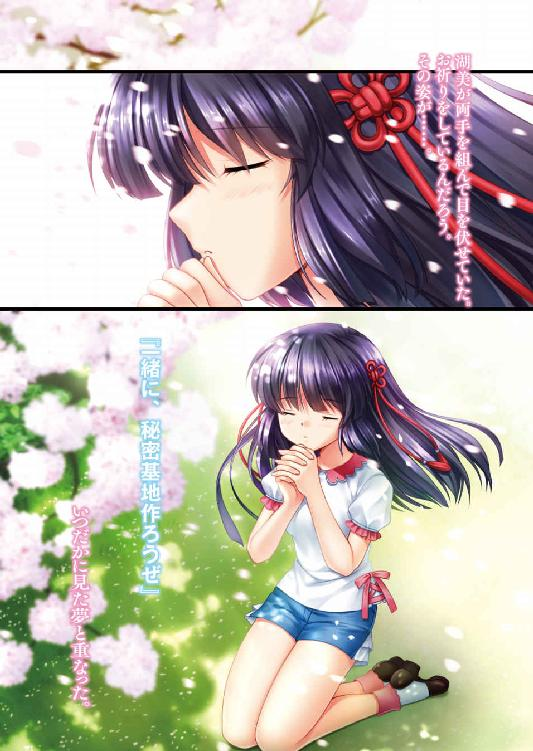

| Farewell, ours ～夏の僕らは瞬きもできない場所へ～ (ファミ通文庫) | |
| 都乃河勇人 | |
| KADOKAWA / エンターブレイン (2016) | |

Farewell, ours
～夏の僕らは瞬きもできない場所へ～
都乃河勇人
電子版 ファミ通文庫
本作品の全部または一部を無断で複製、転載、配信、送信したり、ホームページ上に転載したりすることを禁止します。また、本作品の内容を無断で改変、改ざん等を行うことも禁止します。
本作品購入時にご承諾いただいた規約により、有償・無償にかかわらず本作品を第三者に譲渡することはできません。
本作品を示すサムネイルなどのイメージ画像は、再ダウンロード時に予告なく変更される場合があります。
本作品の内容は、底本発行時の取材・執筆内容に基づきます。
本作品は縦書きでレイアウトされています。
また、ご覧になるリーディングシステムにより、表示の差が認められることがあります。
涼やかな空気に虫の声だけが聞こえる、そんな夜だった。
浅い眠りの中で、僕は薄く瞼を上げた。床の上には、窓辺に置いた小物が作るわずかな影が伸びている。少し視線を上げると、出窓の向こうでは粒のような白い光が躍っていた。何か、不思議な光景だ。
......月が明るい。
あの光は、隣の家の屋根瓦が月を反射しているのだろう。すぐにまた眠りに落ちてしまいそうな、ぼやけた思考でそう結論を出す。あの子もこの月を見ているだろうか？ いったい今、どうしているだろう？ ......病に苦しんではいないだろうか。思考はそこが限界だった。ぼくは、めをとじて、またねむりにつくのだ。
瞼の裏に浮かぶ、躍る白い光は、風に舞う桜の花びらのようで。
その中で、俺はあの子に確かにこう言った。
『───秘密基地、作ろうぜ』
（......あの子って誰だよ？）
六畳フローリングの自室に敷かれた布団の上、俺は目が覚めるなり、瞼をこすりながら思う。なんか変な夢見た。
（覚えてるような、もうなんかわからんような......）
夢なんて大体そんなもんだと思う。よっぽどインパクトのある内容なら別だが、大抵はすぐに忘れてしまう。が、今日の夢は特にインパクトがあるわけでもないのに、妙に頭に残っていた。なんというか、今実際に見てきたような......。夢の中での俺は、病弱な少女のことを気に病んでいた。今ここにいる俺には、そんなことがあった記憶は全くないのだが......。寝ぼけた頭を揺り動かしながら身を起こすと、ふと出窓が目に入る。出窓の桟に何かを置く習慣は、今はない。
（そういえば、この村に引っ越してきたばっかりの頃、あそこにひまわりの鉢植え置いてたっけ......）
確か引っ越しの餞別でもらったものだった。花はつけたものの、ずっと日が当たる外側ばかり向いていたので、なんだか微妙な気分になったことを覚えている。
（なんで今さらそんな夢を？）
俺、式部荘太郎はこの春から高校一年生。引っ越してきたのは小学生の頃だ。そんな頃の記憶、よっぽどインパクトのある内容じゃないと......。
（.........）
夢と昔の記憶って似てるんだな。
そう思った。
布団を畳み、二階の自室から一階のリビングに下りてくると、対面キッチンの前に置かれたダイニングテーブルに着く。こざっぱりとしたテーブルの上には、食卓傘に覆われた、ばーちゃんの用意してくれた朝食が並んでいた。ごはんに味噌汁、白身魚の切り身に昨日の晩の残り物である煮物と、いつもながらの純和風。築五年ほどの家には似つかわしくないとも思うが、両親が仕事で不在の中、こうしてきちんとした朝食を用意してくれるばーちゃんにはいつも感謝している。ばーちゃんがいなければ、今頃ジャンクな食い物ばかりで血液どろどろ、家の掃除もろくにしないでカビだのハウスダストだの吸い込みまくりの超不健康体が出来上がっていたことだろう。ありがたさをかみしめるようにして、朝食を平らげた。
「ごちそうさまでした」
両手を合わせて野良仕事に出ているであろうばーちゃんに、伝わらないながらもお礼を述べる。すぐに食器を片づけ、着替え以外の身支度を済ませ、自室に戻った。
......これが俺の、ごく平凡な朝だ。
制服に身を包み、玄関を出る。俺はバス通学なので、歩くのは停留所までの短い経路だけだ。山間のド田舎村、という言葉がしっくりくる、畑・果樹林・まばらな民家で構成された場所が、俺の住む村だった。当然、山なので坂道は多い。短いとはいえハードな道程だ。日差しは強く、辺りにはすでにセミの鳴き声が響いていた。七月、夏休み直前の我が村は、夏の気配に満ち満ちている。
（暑くなりそうだなぁ......）
頭に手をやると、すでに髪は日光でほかほかになっている。まだうっすらと残っている山の夜の冷気も、すぐにどこかに姿を消してしまうことだろう。俺はできるだけ日陰を選びながら、端のほうがひび割れたアスファルトの道を進んでいく。
「おお、おはよう」
「おはようございます」
犬の散歩をしているおじいさんに挨拶。この辺りの住民は結びつきも強く、すれ違う人は大体知り合いだ。自然と挨拶を交わすことになる。おじいさんは必ず毎日この時間に犬の散歩に出るらしく、俺のこの挨拶も日課になっていた。
川......というより用水路に近いものにかかる、車が通るにはぎりぎりな橋を渡ると、文明の香りがする大きな道に出た。その曲がり角の郵便局の前に、バスの停留所はある。すっかり変色した時刻表の看板の前に立つと、カーブの斜面を下りてくるバスが見えた。新しいというわけでもなければレトロな雰囲気というわけでもない、ちょい古のごく一般的な路線バスだった。そしてそのバスは、横っ腹のよくわからん広告を見せつけながら俺の前に停まり、ぷしゅーと音を立ててドアを開く。エンジンの振動がダイレクトに伝わる手すりを握り、中に乗り込むと、急くようにドアが閉まる。バスの中を見渡すと、先客は最後部の席に座る、黒い髪を腰まで伸ばし、セーラー調のデザインの服に身を包む一人の少女だけ。俺がその先客の前に移動し、吊り革に手を伸ばすと、まもなくバスは走り出した。目の前の少女は俺に気づくことなく、手にした文庫本を熱心に読んでいる。俺は身をかがめて、その本の表紙を覗いてみる。すると年季の入った表紙には、青だか灰色だかよくわからん色（青灰色と呼ぶのがクールらしい）のカバみたいな何かが描かれていた。少女はこのシリーズが大層お気に入りらしく、何か本を読んでいるな、と思えばたいてい同シリーズの一冊がその手の中にあった。......そして、よほど夢中であるらしく、少女は俺にまだ気づかない。俺は吊り革に体重をかけ、ぶらぶらと体を揺らしてみる。まだ気づかない。並大抵の集中力ではない。しばしそうしていると、少女は恍惚の表情を浮かべながら、ほう、と息を吐き、こう呟く。
「冬眠したい......」
「そうだな。俺もしたい」
声は耳に届いたのか、はたと顔を上げ、俺と視線を合わす。
「......あ、あぁぅ......」
驚きの表情の後、赤面。俺の不意打ちが成功した形だった。
「おはようございます湖美さん」
「お、おはよう......」
少女、『清沢湖美』は、俺とは小学校の頃からのつき合いだ。ここよりももっと山の奥にある大きなお屋敷じみた家に住んでおり、そのおっとりとした性格も相まって、育ちのいいお嬢様として周囲には認識されている。とはいっても、お高くとまった感じは皆無なのだが......。
「好きだなそれ」
湖美が手にした文庫本を見ながら、ため息交じりに言葉が出た。
「......す、好きなんだもん」
湖美は文庫本で口元を隠しながら言う。本人がいいなら別に何も言わないが、さすがに人が目の前まで来て気づかないのは勘弁してもらいたい。しかし、夢中になって読んでいた件というのは......。
「冬眠なぁ......」
なぜそこに食いついたのか。
「う、うん。冬眠、いいなぁって」
なんとも返答しがたい。この夏真っ盛りの中では、いまいち想像しづらいが......。
「冬の寒さと厄介ごと、全部すっ飛ばせるのはいいかもな」
この辺りはそう雪の多い地方ではないが、それでも降るときは降る。そうなれば待っているのは、雪下ろしと過酷な通学路だ。
「ずっと夢でも見てられて、起きたら春か......」
なんだか素敵なことに思えてくる。
「......荘太郎くん、本のキャラみたい」
「ん」
くすくすと笑われる。
「同じようなセリフが？」
「あった」
「......読んだことないからな、俺」
「うん、知ってる」
笑われると、なんとなく気恥ずかしい。俺は湖美から顔を逸らした。ふと、そこで思い出す。
「.........」
朝の夢だ。湖美に向き直り、じっと顔を見つめてみる。
「えっ、あの、な、なに？」
「.........」
俺は無言で注視する。
「ええっ、あ、あの......あのあのっ」
すでに目的は湖美に羞恥を味わわせるだけのものにすり替わっているが、さっきの仕返しとして続行することにする。吊り革に体重をかけ、やや前のめりになると、湖美を上から見下ろす形になった。
「わわわっ......ああぁぅ......」
顔面真っ赤で目がぐるぐるになった辺りで、ひとまず勘弁しておくこととする。
「特に意味はないんだが」
「あぅ......。も、もー！ なんか言われるかと思ったー！ は、恥じゅかしかったぁー！」
......そんなんだったら、目を逸らせばいいだけだろうに。
「俺もさっきそんな感じだったから、おあいこ」
「え、え？ どの辺り？」
「秘密」
で、夢だ。
「湖美って病気してたことなんてあったっけ」
「病気......？」
固まったように考え込む。
「......ううん、ない......と思う......」
「だよなぁ」
湖美が学校を休んだ、という記憶すらない。この子は健康の見本そのものだ。
（だとすると......）
小学生当時で俺とつき合いがあった女子は、二人。だが、もう一人のほうは湖美なんかよりよっぽど夢のイメージには遠い。
（ただの半リアルな夢か）
妙な生々しさを感じる夢だったので、気にはなっていたが、結局のところ夢は夢でしかないようだった。一応の納得を得たところで、俺は湖美の斜め前、一人がけの席に着いた。
「あ......」
「？」
なにか言いたげだったが。
「おはよー、みずみん」
バスが停車し、女子が二人乗り込んでくる。
「あ、おはよう」
「式部君おはよー」
「うっす」
クラスメイト......といってもうちの学校は一クラスしかないので、同学年ならすべてクラスメイトなのだが......女子二人と挨拶を交わす。二人は湖美の隣に陣取り、にぎやかに雑談を始めた。乗り込んできた二人とは雑談に参加するほど仲がいいわけでもなく、話題にもいまいちついていけない。
（なんとなく疎外感）
毎朝この時間は少し寂しい。次の停留所では男子が乗り込んでくるので、それまでの短い時間なのだが。人が増えていくたびに、男子勢、女子勢の境ははっきりとしていく。......大体、そんなもんだと思う。
俺たちの学校は、村の住宅地からは少し離れた、田園地帯に存在する。生徒はほとんどが村の人間で、全国的に見ても生徒数は相当に少ない。小学校時代の『同学年は近所の四人だけ』という状態に比べればましなほうだが......。一応教室内が机と椅子で埋まる程度には生徒がいる。それでも、全校生徒が百人以下っていうのはやっぱり相当な過疎校になるんだろうが......。基本的には地元民しか通わない学校なので、それも仕方ない。
バスが停車すると、湖美を含めた女子勢が先に集団で降りていく。別に急ぐ時間でもないので、俺はそれが捌けてからゆっくりとバスを降りた。そしてバス停からすぐの校門をくぐると、白い......純白とは言いがたい、古びてところどころ黒ずんだ、コンクリの校舎が見えてくる。まあ......こんな地方の公立校じゃ、こんなもんなんだろう。ぴかぴかで憧れの校舎とか、望むべくもない。
（地方の再生は遠いな......）
しみじみと思っていると、校門のほうからくぐもったエンジン音が聞こえてきた。
「そーたろー！」
声に振り向く。そこには、颯爽とバイクに跨った男がいた。男はギアをガチャガチャといじり、エンジンを止め、白いジェットのヘルメットを取った。ふわりと細い髪の毛が靡き、陽光に煌めくような端整なマスクが露になる。それはそこだけ切り取れば、同性の俺ですらため息が漏れるような、美しい情景だ。
「おう。今日も畑？」
俺の言葉に、男はさらに輝くような笑みを浮かべると。
「んだなっスー！」
台なしだ。
「このなづはあっちいさけー、ナスがでっげえのとれだ！」
「方言......」
「おっ、いっけねぇっ！」
ちなみに男が跨っているバイクはスーパーカブ１１０なので、本当に一部分だけ切り取らないとかなり残念な様相になる。俺の友人である『高峰遼平』は、そんな色々と残念なイケメンだ。
「んだば、オラぁバイク置いてくる」
「ああ......」
スーパーカブを押して駐輪場へ向かう遼平を見送った。一応遼平も、意識すればほぼ標準語で話せるのだが、油断するとところどころに謎の単語が混じったりする。遼平が話す言葉は祖父の出身地の方言らしく、本当に何を言っているのかわからないこともある。俺もできるだけ方言を矯正するように働きかけているのだが、なかなか難しい。
「おまたせー」
遼平が満面の笑みを浮かべながら、小走りで戻ってくる。
「んなテンション上がるほどナスが取れたんか」
遼平は野菜農家の三男坊だ。朝は畑の手伝いをしてから登校してくるので、融通の利くバイク通学となっている。
「やー、収穫はまだ先だけどな、今年はでっかくなるぜ！ 今からナスパが楽しみだな！」
ナスのパーティと言われても、あんまり心は躍らない。
俺は遼平と一緒に、昇降口で上履きに履き替え、教室に向かう。
「そいや、そーたろーは休み何してたっス？」
「俺？ 俺は......」
思い返してみる。今は期末、テスト後は二日間の休みがあったはずだが......。
「何して過ごしたんだ......」
ひたすら寝てダラけてた記憶しかない......。
「どうしよう、俺すっげえ時間の無駄してただけじゃん！」
無駄に過ごした休日は、必ず後からの後悔を伴う。
「そーたろーはテスト頑張ってたんだろ。それで頭休めてたってことじゃん？」
「そういう意味では有意義か......んでお前は何してたんだよ」
「オラぁ畑の世話してたっス」
煌めく汗を流しながら、笑顔で農作業をする遼平のイメージが脳裏に湧いた。
「リア充め......」
遼平は農業を愛していると言ってもいい。若者の農業離れが叫ばれる中、遼平の生まれ持った性質は農業界の宝といっても良いだろう。遼平の家は比較的近所なので、俺もごくたまに畑仕事を手伝ったりするが、正直言って毎日畑で土まみれになっていたら、そのうち発狂する自信がある。
「やっぱそーたろーは高校卒業したら村出てくん？」
「いや......どうだろうなぁ......」
今のところ具体的な目標もないし、なんとなく進学する、ということになりそうだが。
「進学ってなったら、どうしたって出てくことになるのか」
さすがにこの辺には大学はないし。
「じゃあそうなるんだろうねぇ」
「うーん......全然想像できない。今さらハイカラな町は嫌だ......」
田舎の人間は大体二種類に分かれる。都会を恐れる人間と憧れる人間だ。
「確かにオラもはいからなまちは嫌だ」
遼平も前者か。
「肺から生血は血を吐いて死んでしまう」
アホという第三の種だった。
「......君、テストは大丈夫なのかい」
「いけんべ」
彼の根拠のない自信は俺を不安にさせた。
校舎の二階にある教室についてから、チャイムが鳴るまではしばしの雑談タイムだった。テストがどーだとか、夏休みはこーだとか、男子は男子、女子は女子で集まって談笑する。
「.........」
ふと湖美のほうに目をやると、ちょうど目が合った。湖美は何か、はにかんだような笑みを浮かべる。
「ん？」
「どしたよそーたろー」
「いや別に......」
特に気にも留めず、俺は男子たちとの雑談に戻る。第二陣のバスが到着する時間になると、教室はさらに賑やかになる。ほどなくしてチャイムが鳴ると、生徒たちはめいめい自分の席に戻っていく。俺も自分の席に戻ると、隣の席が空いていることに気づき、前の席の遼平に問いかける。
「樹希は？」
隣の席の女子は、『琴寄樹希』。遼平と同じ、小学校の頃からのつき合いの女子だった。樹希はなんというか、フリーダムで、ノリがいい......というかノリしかないような性格で、一緒にいると何かとやきもきさせられることが多い。細かいことは気にしない性質なので、きっと時間なんかもあんまり細かくは気にしていないのだろう。
「来てねっス」
「やばいんじゃないのか？」
もうじき先生が来る。号令に間に合わなければ遅刻だ。遠い席の湖美のほうに目をやると、困り顔で『どーしよー』と口を動かす。どうするもこうするも、本人がいないんじゃ俺にはどうしようもないわけだが......。
「おーし、号令」
教室の前のドアが開くと同時に、先生が号令係に促す。
「きりー......」
号令を言い終わるか否かのタイミング。乱暴に後ろのドアが開かれ、制服姿にいかにも活発といった短い髪をした女子......樹希が駆け込んできた。
「すみません遅れましたー！」
「......まあ、ギリセーフで」
「やたー！」
樹希は速足で俺の隣の席に着く。
「やーまいったねー」
「今日はどうした？」
「バスでキタ姉と一緒になってね」
「あぁ」
キタ姉とは、『宮田懐』、俺たちの一個上の先輩だ。近所では唯一の同世代他学年の存在で、樹希とよく会っているらしい。
「そのまま昇降口まで一緒だったんだけど」
「うん」
「そこでアイアンクローを食らっていたら遅くなった」
「......へえ」
懐は若干怒らせると怖い存在なので、そういう流れになるのはわかる気がするが......、それにしてもひどい理由だった。
「ずっこいよねー！ 一年だけ二階じゃん！ あたしだけ全力疾走しなきゃいけなくなっちゃってんだよ!?」
「声でかい」
「おっと失敬」
「まあ、そうだなぁ。でも間に合って良かったなぁ」
「ほめる？」
「褒めはしない」
残念ながらその要素は見出せなかった。
「樹希ちゃんはほめて伸ばすべき」
「君は褒めると縮むからなあ」
調子に乗って、より大きな失敗を引き起こすのが、樹希のいつものパターンだ。
今日からの授業は、期末テストの返却だけで、終業式まで午前授業となる。
「じゃあ、返すぞー」
一人一人、先生から呼び出されては受け取っていく。受け取った生徒は騒がしく一喜一憂し、受け取る前の人間はみな緊張感を崩さない。
「遼平、どうだった？」
「聞かないで......」
遼平はそっとしておいたほうが良さそうだ......。かたや隣の幼馴染は。
「.........」
無言で答案に向き合っている。
「......すかー」
寝てやがる。幼馴染連中で安心して見ていられるのは、湖美だけのようだった。
答案を配り終えると、難しかった問題などを復習する授業に入る。時間を追うごとに、遼平から魂が抜け落ちていくようだった。
「そーくん問題用紙見せてー」
樹希に肩をシャーペンで小突かれる。
「自分の見ろよ」
「家に忘れちゃったんだもん」
「寝てりゃいいだろ」
「数学はよくできたので、勝利の味を嚙みしめたい」
「何点だったんよ」
「驚きの七十九点」
負けた。
「そーくんはどうだったのかなー？ んー？」
「......問題用紙、お見せします」
「苦しゅうない」
「苦しいです」
俺にとっては屈辱的な事柄だ。
「ほめてもよい」
「褒めはしない」
「撫でてもよい」
頭を突き出してくる。大変うざかったので、俺は持っていた下敷きで樹希の頭を撫でてやった。
「やめろ！ 静電気！」
樹希は逆立った髪を直しにかかる。
「で、次の問題だが......」
「あ、この問題わからんかった。見せて見せて」
机を俺のほうに寄せてくる。
「あんまくっつくなよ、暑いから」
「くっつかないと問題見えない」
しかたがないので、問題用紙を樹希のほうに寄せてやる。
「ふっへっへー」
変な笑いを浮かべる。今学期は席がこいつの隣になってしまったのが、運の尽きだったのかもしれない。なにかと手間がかかるのだ。
「......うむ」
樹希は頷きながら、黒板の解答例をノートに写している。ひとまずは落ち着いたようだ。
「うむ......」
目当ての問題が片づいたのか、ペンを置き一度大きく伸びをする。きょろきょろと辺りを見回すと、再びペンを手に取った。
「よし......」
俺の問題用紙に猫の顔の落書きをされた。
「......おい」
「かわゆい？」
満面の笑みで、悪びれた様子もない。こういう樹希に文句を言ったところで聞きゃあしないので、俺は猫の首から下に細長い身体を描き、八頭身にした。
「ぐわあキモい！ なんということを！」
「なんか描くたびに全部キモくしてやる」
「むぬぬぬ」
こいつにいちいちかまってると、まともに勉強などできそうになかった。
帰りのホームルームを終え、今日一日の学校生活は終了。遼平を見ると、左腕を枕に机に突っ伏していた。
「終わった......いや、終わっちまったのか......」
「赤点でも取ったか」
「んにゃ、それはなかったけんど」
「じゃあいいじゃん。進級できるし」
「色々プレッシャーがあんだー。もーさー、そーたろー脳みそ交換しようぜー」
「そりゃ、できるならそうしたいけど」
遼平はその自分のハイスペックを生かし切れていないのだ。俺なら上手くやれるとは言わないが、遼平と同じくらいの身長は欲しい。
「ならば頭と頭をごっつんこすればよい。漫画とかで見た」
「それだぁっ！」
横から割り込んできた樹希に、激しく同意する遼平。
「よーしそーたろー！ パチキ勝負しようぜ！」
「しねえよアホだろ君ら」
「アホだから治したいっスよ！」
「そもそも脳みそ入れ替えも人格交換も、頭の中身ごと入れ替わんだから意味ないだろ」
「......そうか！」
マジの子だった。
「まあそんなことはどうでもいいから、おもろいからやってみよう」
「待ってろ。なにか鈍器とお前の頭をごっつんこで、鈍器と入れ替わるか実験してやるから」
「無機物はいや。動けなかったらあたし死んじゃう」
心配しなくてもその前に死ぬ。
「じゃあ、上手くいったら教えてね！」
「あれ、樹希もう出るん？ 外暑いよ？」
「うちのほうのバス、まだ来ないぞ」
「ちょいとヤボ用」
樹希は、ひょいと軽そうなかばんを肩にかけ、出口へ向かう。
「あ、ちょっと待ってっ」
「ん？」
湖美が樹希を引き留めていた。
「みずみん、なんかご用事？」
「あの......みんな、このあとちょっと時間ないかな？」
湖美は俺たち三人を順番に見る。引っ込み思案な湖美が珍しく動いた瞬間だった。
※
バスを待つのは二人。俺と湖美。具体的な行き先は聞いていないが、湖美はどこかへ俺たちを連れていきたいようだった。
「......はぁ」
「残念だったな」
「ううん、仕方ないよ......」
遼平と樹希の回答は同じもの。『ごめん時間ない』。結局、つき合ってやれるのは俺だけだった。
「バス、まだ来そうにないな......」
バス停の傍らにある自販機に足を運ぶ。
「あ、ジュース......」
「ん、湖美買う？」
「......うん」
湖美に自販機の前を空けてやる。
「え、えっと」
五百円玉を手に、逡巡する湖美。
「そこ」
俺は投入口を教えてやる。湖美は慌ててコインを投入した。
『商品を選んでください』
自販機からの自動音声。
「あ、じゃあ、お紅茶を......」
.........。
「あれ？」
「湖美......」
頭を抱える俺を、湖美はどうしたらいいの？ と泣きそうな顔で見る。
「これな」
紅茶のボタンを押してやる。
「残念ながら、まだ人間の声に反応するようにはできてない」
「......あぅ」
やっぱり、箱入りのお嬢様。
「遼平は最近俺にもつき合い悪いからな。樹希のことはよく知らんけど」
バスの車内で二人のことを話す。
「樹希ちゃんも最近何か忙しいみたい」
「え、あいつになんかやることあるのか？」
「さ、さぁ......」
いまいち想像がつかない。
「遼平はずっと畑だしなぁ......」
「うん......」
「.........」
「.........」
他に誰もいないバスの車内、二人とも無言で、ただ飲み物を口に運ぶ。
（あの二人がどっちかでもいたら、こんな間は生まれないんだろうなぁ......）
自分の話術の拙さを思い知る。毎朝のように登校のバスで顔を突き合わせて話をしているはずなんだが、状況が変わっただけでいまいち話が浮かばない。
（そういえば、初めてじゃないか......？）
二人きりで帰るのも。横に並んで座るのも。思えば、四人で何かするということも、ほとんどなくなっている気がした。
（しかたないこと......だと思うけど......）
中学に入った辺りから、俺も遼平も意図的に女子を避けるようになっていた。理由は......なんかこう、その時期独特の外圧というか、女子とつるむのがだんだん恥ずかしくなっていたのだ。それは本来小学校の時点でも生まれてしかるべき感情だったと思うのだが、同学年が四人だけという小学校の状況では、発生する余地はなかったのだろう。さらに中学では部活というコミュニティもあったわけで、それも影響していたのかもしれない。
そうして気づかない間に、俺たちは疎遠になっていたのだ。
（いつの間にか、時間がどんどん過ぎている気がする......）
時間というやつは、過ぎてしまえばあっという間だった。
湖美に連れられて、いつもより一つ先のバス停で降りる。日が当たるとじりじりと暑い。さらに喧しくがなり立てるセミ時雨が、その暑さを倍増させているような気がする。
「どこ行くんだ？」
このバス停の辺りは完全に山に向かう途中で、目立ったものは何もない。
「うん......あれ」
湖美が指さす先にあるのは、何のために存在するのかわからないコンクリートの階段。そして上った先には山道が続いていて......。
「あ」
思い出した。
「そうか、懐かしいな......。久々に行ってみるか」
小学生の頃、四人でよく遊んだ場所だった。
「覚えてた？」
「見たら思い出した」
そもそも思い返すようなこともなかったし、気にも留めたことがなかった。
「......あ」
その場所に対しての俺と、湖美に対しての俺が重なる。気にも留めていなかったのだ。中学の頃、湖美は疎遠になっている間も同じような気持ちだったのかもしれない。部活もあったし、湖美にも俺たち以外の女友達がいたはずで、小学校の狭いコミュニティに留め続ける必要もないと思っていた。それが中学に入ってからの気恥ずかしさと合わさった結果の疎遠だったのだが......湖美の気持ちを考えたことがなかった。それに気づけば、なんだかとても悪いことをしていたような気になってきた。
「荘太郎くん、はい」
湖美から細長い缶を手渡される。虫よけスプレーだった。
「......悪いな」
「え？ ううん、いっぱい使っていいよ。刺されちゃうから」
笑顔で階段を進む湖美に、俺はそれ以上何も言えなかった。
俺と湖美の足元と頭上には、木漏れ日の光が躍っていた。そして轍だけでかろうじて道の体を成している山の路上は、アスファルトの道のようにじりじりとする暑さは皆無だった。空気の質がまるで違う。ただ、個人的には『空気がきれい』とかは、ただ単に心地よい気温のもたらす清涼感のみで成り立っていると思う。綺麗だとか美味しいだとか、そんなもんわかりゃしない。
「こっちだっけか」
いつの間にか俺が湖美の前を歩いていた。脇に一本、草に埋もれかけた獣道を見つけ、邪魔な背の高い草をブチブチと千切りながら、その先へ進んでいく。ほどなくして、空の青がはっきりと覗く、開けた場所に出た。
「昔の私たちって、なんでこんなところで遊んでたのかなぁ？」
「そりゃあ、秘密の場所じゃなきゃ秘密基地にならんだろ」
「あ、そっか」
こんなところ、大人は好んで来たりしないだろう。
「しかし、こりゃあ」
長年放置され続けたその場所は、すっかり広場というより草むらと化していた。俺が草を踏み倒しながら進むと、バッタが羽を広げて飛び上がる。
「あ、いなご」
湖美がそのバッタに手を伸ばす。ひらひらと下降するバッタは、見事にその手をすり抜けていった。
「むむぅ......」
「そっとしといてやんな」
今はもう、この場所の主は彼らなのだ。俺たちの当時の痕跡は、完全に朽ち果てていた。元々適当にあった大きな布でテントを張っただけの、大したものでもなかったんだが......。木の枝に引っかけて屋根に使っていたビニールカーテンはボロボロに引き裂け、床にしていたフォークリフトのパレットは草に埋もれ、かろうじて隙間から青いプラスチックの網目が覗く程度のありさまだった。完全に廃墟だ。
「一応、判別できる程度に残ってただけ、まだマシだったのかもな」
「うん......」
草をかき分けてみると、当時のものと思われる駄菓子の袋やラムネの空き瓶が出てきた。口元はこじ開けてあり、中身のビー玉を取り出してある。
「そういやビー玉集めてたな、俺」
昔の痕跡を一つ見つけると、次々に記憶が蘇ってきた。例えば、この木の根元に突き刺さっているアルミのパイプは、俺の愛用の武器だった。握りの辺りにねじ穴があり、そこにビー玉をはめ込んで魔法剣としていたのだが、残念ながら宝玉はどこかに行っており、魔法の力は失われていた。
「あれー、ビー玉どっかに落ちてねぇ？」
伝説の剣気取りのアルミパイプを引っこ抜き、辺りの草を薙ぎ払ってみる。三振りほどしたところで、ちょうど真ん中からへにょりと折れた。
「うわああああ俺の思い出の剣がぁぁーっ！」
伝説の剣は成長した俺の力に耐えられなかったらしい。俺は伝説の剣を諦め、湖美の姿を捜すと、なにやら発掘作業を進めているようだった。
「なんかあったか？」
「うん......これ」
湖美が取り出したのは、ピンク色のランドセルだった。
「それ誰のだっけ......？」
「私のじゃない......と思うよ。ランドセルって、使ってなかったし」
思い返してみる。小学生当時の湖美は、手提げ袋やカジュアルなカバンを使っていた気がする。
「樹希は、確か」
「樹希ちゃんでもないと思うな」
「だよな」
定番の赤いランドセルだったはずだ。ピンク色のランドセルの記憶はない。
「ふむ」
俺は湖美の手からそのランドセルを受け取る。表面は長年風雨にさらされていたせいか、ひび割れてすっかり革が硬くなっていた。......それにしても、軽くて小さい。記憶の中のランドセルというものは、もう少し大きくて重いものだった気がしていた。錆びついて硬くなった金具を強引に動かし、開けてみる。中身は空で、時間割表を挟むポケットに至るまで、なにも残されていなかった。
「誰かが拾ってきたんじゃないかな、きっと」
湖美の言葉のほかに、合理的な説は浮かびそうになかった。
「あとの二人もいりゃあ、なんかわかったかもしれないけどな」
「......そうだね」
湖美の声のトーンが下がる。見れば、伏目がちな薄い笑顔。
「ほかにも、何かないかなぁ？」
辺りの散策に戻る湖美。......わかっていたことではあったけれど。
（『四人』で来たかったんだろうな......）
俺は辺りを見回した。物についてのエピソードなんかは、そのものを見れば何となく思い出すことができた。ただ、ここにいたはずの四人は、どんなことを話していたのか、どうしても思い出せなかった。俺は記憶を少しでもよみがえらせたくて、記憶の残る物品を探してみる。けれど、残っているものは少なく、これだというものは見つからない。
「もっといろいろあった気がするんだけどなぁ......湖美は？」
「私は、あんまりここに持ってきたものってなかったから......」
何がなくなったかさえ思い出せない。それはなんだか、ひどく悲しいことのように思えてきた。
（......あぁ）
それは象徴だった。気づかないうちになくしていて、忘れていく。そして気づいた時に、それはもうどうしようもなくなっているのだ。そのことは、ここにいたはずの四人と重なっている。湖美は先に気づいた。俺は今気づいた。あとの二人は......たぶん、気づいていない。それとも、すでにそれを『しかたのないこと』だと割り切ってしまっているんだろうか？
どちらにしても、引っ込み思案な湖美の突然の提案は、それを下地にしているのだと知った。
（どうにかできるのは、きっと俺なんだろうな......）
最初に出会った時のことを思い出す。あの時の俺と湖美は、まだ村に馴染めず、それぞれ一人だった。もし、湖美だけがその一人に戻ってしまうのなら、俺はそれを放っておけない。......これまで、気づいてやれなかった分も。ふと、考える。これがもし、俺の思い過ごしでないのなら。あの時に集まった『四人』を取り戻せるなら。
「なあ、湖美」
それはまだなくしていないし、まだ間に合う気がした。
「もう一回、秘密基地、作ろうぜ」
懐かしさ、なんてものになる前に、帰れる気がした。
「......うん」
そして、少女のこの笑顔のために、俺はあの時と同じように、動き出すのだ。
※
テスト返却、少々の通常授業を挟み、終業式の日がやってくる。明日からは夏休みで、当然学校で顔を合わせることもない。俺は遼平と樹希の二人に話をつけ、終業式の後に時間をとってもらっていた。
「んじゃ次、登校日になー」
「おう」
俺と遼平は、早々に教室を出ていくクラスメイトたちと挨拶を交わす。
「夏休みなぁ。みんなどっか行くスかねぇ」
「そういう人もいるだろうけどな。遼平は？」
「オラぁ畑だ。ナスもネギも待ってっからな」
「んな忙しいのか」
「んだ。今はちょっと一段落だけんど」
この遼平が、果たして俺の提案に乗ってくれるだろうか。不安になってくる。
「おまっとさんー」
「ごめんねー」
女子たちと別れた湖美、樹希も合流する。
「んだば、どこ行くさ？」
「別に決めてねえけど......どっか適当な店？」
「はい提案」
樹希が右手を上げる。
「はい、どうぞ樹希さん」
「駄菓子屋行きたい」
「別にいいけど、なんでまた」
「夏休みはラムネ」
変な拘りがあるらしい。
「あ、うん、私も行きたいな」
意外なことに湖美が乗ってきた。
「んだば、行くッスー」
遼平を先頭に、俺たちは教室を出た。
この時間のバスは少ない。ほんっとうに少ない。俺たちはバス停で四人並んで待つことになった。
「日が隠れてるのが救いか......」
入道雲が太陽を隠し、ひんやりとした空気が辺りに流れ始めていた。群青色の空と、白と灰色の雲。
「......降りそう」
「まあ、いけんべ」
遼平の言葉は俺を不安にさせた。
「ひょっとして」
樹希が横に並ぶ俺たちを眺めながら、口を開いた。
「この四人でバスって何気に初なのでは？」
言われてみれば、バス通学は高校に入ってからだったし、四人が揃って下校、というのは記憶にない。
「オラぁいつもはカブだしなぁ」
「意外。新鮮なメンツ......みずみんとは帰り一緒のこと多いけど」
「遼平はともかく、俺らとは朝一本早くしてくれりゃ、一緒になるんだぞ」
「それはそうなんだけど、朝に二十分余分に眠れるってわかったら、もうその時間にしか起きられなくなってしまってな......」
樹希の乗るバスは、俺たちより一本遅いのだ。通勤時間なので比較的本数は多いのだが、それでも二十分おきになるので、一つ間違えれば遅刻確定というギリギリのラインになる。
「でも、朝はみずみんとそーたろー一緒だし、それでいいのだ」
「なんだその理屈は」
「あたしも何言ってんだかよくわからない。ただなんかオッケー感はある」
「樹希ちゃん、ギリギリだけど遅刻はないもんね」
「うん。やはりオッケー感がある」
「お前オッケー感言いたいだけだろ」
口に出してみると語感は良かった。
「うわー、降りそう」
例によって先頭を切ってバスを降りた遼平が空を仰ぐ。バス停から駄菓子屋まではそこそこ歩くことになる。そして途中に雨宿りできるようなポイントはない。
「降られると困る。あたし傘持ってない」
「わ、私も......」
「急いだほうが良さげだな」
そう言った矢先。
「あ」
遼平が声を上げた。
「ん？」
「ぽたりと来た」
「げ」
一斉に滴が落ちてくる。
「んがー、やばいやばい。いそげっ」
樹希が走り出す。一瞬で視界が白くなるほどの大雨になった。
「ひゃぁーっ」
湖美もカバンを頭にのせて走り出し、俺もその後に続いた。夏の山の通り雨はヤバい。バケツをひっくり返したような、という表現は実に的を射ていると思う。一瞬でズボンが足に張りつくほどに濡れてきた。なるべく頭上に木の枝があるルートを選んで走ることにする。すると、不意に強い風が吹き、滴が入った目を細めた。
「ぐわぁっ」
遼平の悲鳴じみた声が聞こえ、後ろを振り返る。今の突風で木の枝から落ちてきた滴が襲いかかってきたらしく、完全に濡れ鼠になっていた。
「遼平......」
不運に同情する他なかった。
「あれ！」
樹希が指さす先には、道端の電話ボックス。たしかに雨は防げそうだが......。
「みずみんイン！」
「わわっ」
樹希が湖美を中に押し込む。
「そーくん早う！」
「え？ いや、でもこれ」
「いいからイン！」
押し込まれる。
「むぎゅ」
湖美にぶつかる。
「あ、わり......」
「あたしもイン！」
「ちょっ」
狭い中に強引に入ってきたものだから、俺は前のめりに体勢を崩す。ガラスの壁に手を当てると......。
「.........」
「.........」
湖美を両手で挟む形になる。壁ドンで迫っているような構図だった。
「やっぱ狭ぇって！」
「がまん！」
樹希は俺の抗議も聞きゃしない。
「え、オラのスペースは？」
「悪いなこれ三人までなんだ」
樹希、定番の仲間外れセリフ。
「樹希ひでェ！ ひとでなス！」
「いや......実際これ、これ以上人入るの無理......」
俺は湖美を圧迫しないようにするので手いっぱいだった。
「りょーへー、でっかいし」
「ああ、うん......やっぱもういいや......よく考えたらもうびちょびちょだし」
「俺むしろ代わって欲しいんだけど......」
「わ、私も......代わってもだいじょぶだよ」
「二人とも、そっから出てもらうほうが大変」
「樹希一回出てよ」
「いやじゃ」
無慈悲だった。
「でも遼平くんだけ外じゃ悪いし......」
「ふむ。りょーへー、カバンくらいはなんとかなるよ」
樹希は遼平からカバンを受け取る。
「やっべそうなったらなんかテンション上がってきたぁ！ うおあァーッ！」
突然、遼平は両手を広げて道に躍り出た。その姿は実にソウルフルで、俺も今すぐ飛び出したい！ 特に踊りたいわけではないけど！ と思わせた。
「熱い男だ」
「俺も熱くなってきたいんだけど」
「暑い～」
俺の角度からだと見えないが、湖美はゆでだこになっているようだった。
「みずみん我慢だよ。通り雨っぽいからすぐ止むよ」
「ふええぇ～......」
だいぶきつそうだ......。湖美のためにスペースを広く取ってやりたいが、俺の後ろの樹希がやたら圧迫してくるので、そうもいかない。強い心で樹希を押し返すことにする。
「んがっ！ やめろ！」
「しかたないだろ、こっちもきついんだよ」
俺はなんとか片手で支えられるところまで体を起こした。
「やーめーれぇー！」
樹希が上体で押し返してくる。......背中に柔らかい感触。
「おいお前こそやめろよ！」
「なんだ柔らかいものか」
「お前恥じらいとか慎みとか持てよ！」
「照れてるのかい」
「んぐっ......」
言葉に詰まる。
「いいじゃないか減るもんでもないし」
「いや減ってんだよ。色々減ってる自覚持てよ」
女子力とか。
「なんでもいいけどキミなんかいい匂いするなあ」
背中に樹希の鼻を押しあてられる。
「ぐわぁーっ！ やめろォ！」
「いいじゃないか減るもんでもないし」
「減ってる！ プライドとか男子力とか！」
俺は樹希から離れる。するとその方向には湖美がいるわけで。
「むぎゅ」
押し潰す形になった。
「あ、わり......」
「ヘイヘイヘーイ」
ここでなぜか樹希がさらに圧迫してくる。
「だからやめろォ！」
「おもろいからやめぬ」
こいつ......！
「すーっ」
「......あの、湖美さん？」
胸元で鼻を吸われた。
「確かに......いい匂いする」
「だしょ」
「んがあああぁお前らやめろマジでぇ！」
「いいじゃんクサいとか言われるより」
「落ち着く......」
俺は諦めた。外では遼平が一人風と雨に打たれていた。うらやましかった。雨が止むまでの時間は長かった。セクハラ、ダメ・ゼッタイと思った。
「止んだ！ 出ろよ樹希！ あちい！」
雨が止むと同時に日が入り、電話ボックスの中は急激に暑くなっていた。
「おー、止んだねぇ」
「.........」
「.........」
「......出ろって」
「ちぇ」
樹希はドアを開ける。同時にさわやかな空気が中に入り込んできた。
「虹だー！」
「え、まじ？」
俺は遼平の言葉に、空を見上げた。確かに、山の向こうに虹のアーチがかかっている。
「おー、すごいきれい。珍しいね」
「だろ!?」
なぜか自慢げな遼平は、虹の下......割と物理的に滴とかでキラキラと輝いていた。
駄菓子屋に着くと、それぞれ思い思いに買い物をした。
「らーむねー！ ていっ」
樹希はラムネの瓶を頭上にかざした後、栓のビー玉を押し込み中身を呷った。雨雲はすでに切れ、青い空が少しずつ面積を拡大させている。ラムネの瓶はぎらぎらと照りつける日差しを、まぶしく反射させていた。
「ひえひえ！ おいしい！」
「そりゃあ良かったなぁ」
俺もラムネの栓を開ける。泡が勢いよく噴き出してきた。慌てて瓶を口に運ぶ。よく冷えた炭酸は、蒸し暑さに火照る身体に心地良い。
「夏はこれに限りますなぁ。最高に幸せですなぁ」
「安い幸せですなあ」
「幸せってお金じゃないよねぇ」
「そうだね」
なんかもう、いろいろ疲れる。
「いろいろな発見もあった。夏休み初日、大満足」
「発見？ なンだそりゃ」
そう樹希に聞く遼平は、表の自販機で売っている謎コーラの缶を手にしていた。缶がぺらっぺらなあたり、たぶん海外からの輸入ものだろう。値段は、とても安い。
「そーくんいい匂い」
「まだ引っ張るのかよ......臭いフェチかよお前」
「別に臭い全体に興味があるわけではない。その証拠に」
樹希は遼平に近づいた。
「嗅ぐ気にならぬ」
「まあ、それは......」
遼平はあんだけ雨に濡れた後だし。
「何が違うんだろう？ 洗剤かなぁ？」
「知らんよ」
「食生活？」
「知らんて」
「嗅いでいい？」
「よくない」
「こいつケチだよみずみん」
「え？ う、うーん......いやなら、それはしょうがないかなぁ......」
この子はこの子で、嗅ぐことに肯定的に聞こえる。
「そだ、ぶためんくおーっと」
「ダメだよキミぐちょぐちょじゃないか」
店内に入ろうとする遼平を樹希が止める。
「ダメなん？」
「駄菓子屋は庶民の味方だが、最低限のドレスコードはある。駄菓子しけっちゃう」
「うおおお！ 乾けぇーっ！」
遼平は日差しの中、両手を広げてくるくると回りだした。
（小学生の頃に戻った気分だ......）
頭を抱える内容ではあったが、湖美も微笑ましくそれを見ていた。
（なんだ、何も変わっていないじゃないか）
そう思い、俺は......。
「なあ」
二人に、秘密基地のことを切り出した。
※
湖美、樹希はバスで先に帰ってしまい、帰りは俺と遼平の二人だった。夕暮れ前の道、打ち水で黒くなったアスファルトに差しかかると、少しひんやりとする。俺たちは、そんな見慣れた風景の中を、並んで歩いていた。
「まだまだ日が落ちなくなったな」
「そっスね。涼しくなってきたし、畑行ってくるかなぁ」
「やっぱ忙しいのか」
「うーん......忙しいっていうか......」
結論から言うと、二人には断られてしまった。遼平は参加はしたがっていたものの、畑で時間が取れない、というのが理由だ。樹希は......なんかよくわからなかった。今頃、湖美が話を聞いているかもしれない。
「んでも、楽しそーだし手伝いには行くよ。あれだろ、最近四人でなんかするってなかったしさ。思い出作ろうってンだろ？」
俺はハッとして遼平の顔を見る。
「んで、湖美がきっかけだしょ」
「......お前」
全部お見通しなのか。
「やー、前みたいに四人でいることないなーって気づいたのは今日だけどさー。なんとなーくわかっちったさ」
「そっちも途中で投げ出すわけにゃいかないってんだろ」
「おー、そーそー」
以心伝心感。ちょっとうれしくなる。......でも、すべてわかった上で、ということは説得とかそういうレベルの話ではない、ということだった。
「......だったらさ」
俺にできることは一つだ。
「お前の手伝いするから、それで浮いた時間を俺たちにくれよ」
その夜、俺は湖美に電話をかけ、樹希のことを聞いてみることにした。
「それがね......」
「うん」
「具体的にはちゃんと聞けなくて......」
「......そうか」
何となくそんな気はしていた。教室なんかではよく話をするが、樹希が普段何をしているかなんて、わざわざ聞くこともなかったし、全く知らない。それは樹希自身が自分から話をすることはない、ということでもあった。
「話したくないってことなのか？ なんかまずいことでもしてんじゃないだろうな」
「ううん、ないない、それは絶対ない。樹希ちゃんいい子だよ」
「だったらバイトとか？」
「うーん......そういうのでもないみたいだけど......」
全く想像がつかない。
「考えてもわかりそうにないな」
「そうだね......」
「樹希が一番乗ってくると思ったんだがなぁ」
遼平が畑で忙しいのは知ってたし。
「あのね......荘太郎くん」
「ん？」
「私、もうちょっと樹希ちゃんと話してみるね」
「それはかまわんけど」
むしろ助かる。俺が樹希と真面目な話をしても、最終的に俺があいつの頭をしばく、という流れにしかならない気がする。だってアホの子だから......。
「遼平くんは？」
「おう。あいつはやってくれるってさ」
「あれ、畑で忙しいんじゃ？」
「そっちはなんとかなるみたいだ」
畑の具体的な事は伏せておく。なんか余計な気を遣わせたくない気がした。何より真面目な湖美のことだから、畑の手伝いを始めたら、秘密基地どころじゃなくなるくらい時間を取ってしまう気がする。
「そっかぁ。じゃあ、やっぱり私頑張るね」
「頑張んなくてもいいけど」
「えぇー......」
そういう気の張った感じでもなく、気楽にできたほうが、きっといい方向に進むはずなのだ、今回は。
「んじゃ、そんな感じかね」
「あ、あのね、荘太郎くん」
「うん？」
締めようとしたところで引き留められる。
「夜って......えと、荘太郎くんはこれから何するの？」
「何って言われても、たぶん風呂入ってケータイいじったりテレビ見たりダラダラして寝ると思う」
「そうなんだ......」
「なんで？」
「え？ え、えーとね......その......荘太郎くんとこんな時間に電話でお話しとか、初めてだから......」
「そういえばそうだな」
「あ、でも、明日またお話しすればいいだけだよね。えへへ」
「どうせ会うしなあ」
「うん。明日、バスでね」
「バス？」
まさかとは思うが。
「明日はもう夏休みだぞ」
「......そ、そうだった......」
まあ、事前に気づけて良かった。
「あー、そうだ。湖美のほうはこれからどうするんだ？」
「え？ あ、うんっ。私はもうお風呂入っちゃったから、本読んで眠くなったら寝るよ」
「今度なんか貸してくれよ。休み中は時間もあるし」
「え、本当？ じゃあ何か用意しておくね！」
......電話で話、したかったんだろうなぁ。俺はもう少し湖美につき合ってやることにした。
※
翌朝、早速遼平の手伝いに向かうことにした。
「ふあぁー......」
眠い。あくびをしながら、腕のストレッチをして目を覚ます。日が昇ったばかりの時間に外に出ることはあんまりない。体が慣れるまでは時間がかかりそうだった。
「おや、早いね」
いつも犬の散歩をしているおじいちゃんに声をかけられる。
「あ、おはようございます」
「うん、おはよう」
この時間だと犬は連れていない。見たところ麦わら帽子に草刈鎌を担いだ農作業ルックだから、これから果樹園だろう。
（やっぱこういう時間から働いてんだなぁ......）
昼にカンカン照りの中、ずっと動くなんてのは自殺行為だし、涼しい早朝に作業をするのは、理にかなった話ではあるけども。
「今からどっか行くのかい」
「遼平......高峰さんとこの手伝いです」
「そうかい。偉いね、頑張ってなぁ」
「いやぁ、ありがとうございます」
農業シンパシーか、いつもより会話が弾んだ。
遼平の畑に着いた俺は、ひたすら雑草を抜いた。とにかく抜いた。延々と抜いた。
「死んでしまう」
「おつかれ。夏だからなぁ。すぐ生えてくんだわ」
日当たりもよく、土もいいわけで、農作物だけではなく雑草が繁茂するのは当然の事だった。遼平の畑は大した広さじゃない。メイン作業員が一人で賄える広さというのはこの程度なんだろうが、それでも実際に動いてみると大変な仕事量だった。
「んでも、すげー早く終わったなぁ。二人だと全然違うね」
「だろ？ これであとは一日つき合ってもらうぞ」
「んにゃ、まだネギ収穫しなきゃ」
「......リアリィ？」
ハード過ぎる。
結局十一時まで畑で過ごし、昼食を挟んで午後に湖美と合流となった。集合場所は俺んち。ばーちゃんも外に出てるし、一番都合が良かったのだ。
「腰が痛い」
「だ、だいじょうぶ？」
湖美に気遣われる。慣れない体勢で長時間作業をしたもんだから、ダメージはかなりのものだった。特にネギの収穫後がやばい。畑で引っこ抜くまでは、いかにも農業という感じでむしろ楽しいくらいなのだが、その後の出荷準備はひたすら単純作業で......。
「あ、そうだ。麦茶出すわ」
「あ、私やるよ」
「え？ いいよ、俺んちだし」
「だいじょぶ、休んでていいよ。冷蔵庫？」
「うん、わりいなぁ」
笑顔の湖美に、そこは任せてしまうことにする。
「ネギの......ネギのにおいが取れねぇよぉ......」
俺は湖美が離れてから、遼平に泣き言を言った。手作業で皮を剝くのは賽の河原で石を積むに等しい。
「皮むきの機械がありゃいいんだけどなぁ。見たことあるけど、あれしゅぱーんって一瞬で皮剝けて気持ちいいんさ」
「ぜひ導入してくれ」
「高いよ。もっと数作るなら考えるレベルだけど、ネギにしか使えないから......」
その辺になると、もう経営の話になるのだろう。
「まあ、ネギはもういい」
「んだな」
「荘太郎くん、コップってこれでいい？」
キッチンから湖美が顔を出した。
「ああ、なんでも大丈夫だよ」
麦茶のポットとコップの一式をお盆に乗せ、湖美が戻ってくる。湖美はお茶と同じ作法で回し注ぎをし、麦茶を渡してくれた。......さすがに麦茶に濃さの違いもないだろうが、注ぐ習慣かなにかなのだろう。
「湖美、樹希どうだった？」
「それがね、午前中ちょっと会いに行ってみたんだけど......」
「うん」
「小さい女の子を追いかけ回してた」
小さい......？
「犯罪の香りしかしないんだが」
俺の『犯罪』という言葉に遼平が顔を青くする。
「え、マジかよ......やばい!? なんかまずいの!?」
「違う違う。たぶん妹さんじゃないかなぁ......」
「そうかぁ」
湖美の言葉に遼平は安堵した様子だったが。
「え？ あいつに妹なんかいたっけ？」
俺の記憶にはそんな話はなかった。
「いや、オラもよくは知らんけど」
「なんだか複雑みたい」
「ふーん......」
あんまり詮索するのもよくない気がするが......。
「懐に話聞いてみるか」
「え、宮田さん？」
「あいつ、朝一緒なんだろ。こないだもアイアンクロー決められたって言ってたし」
「う......オラぁあの人苦手さ......」
遼平はビビっていた。
「なんでだよ。いろいろ話聞いてくれるしいい人だぞ」
「でも、アイアンクロー......」
湖美もビビっていた。
「いやなら別に俺一人で行ってくるけど」
ひとまず時間があるか、メールで聞いておくことにする。
「いやいや、行くよ」
「わ、私も」
結局三人で懐の家へ行くことになった。
※
「あー？ 樹希？」
「うん。最近忙しいのかなって」
「なんであたしなんだ。お前らのほうが仲良いだろ。本人に直接聞け」
邪険に扱われる。懐はぶっきらぼうな性格で、二人が少し苦手とするのもわかる。見た目も黒のスウェットにＴシャツ、なぜか腰に巻いた上着と、まあその......若干ヤンキーじみてるし......。だが、俺たちの姉貴分として昔から色々と世話になっているのだ。
「それが、ちょっと話してくれなくて......」
「あいつが？ お前らに隠し事か......」
懐は顎に手をやり、考え込む仕草を見せる。
「樹希、朝にキタ姉がーとか言ってたし、バス一緒なんス......」
言い終わる前に、懐の右手が遼平の顔面を捕らえた。
「人を汚物みたいに呼ぶんじゃねえ」
「あがががががちがっ、ちが！ 樹希が言ってたって話でぇーっ！」
『汚ねえ』と同じ響きなので、懐はこう呼ぶととても怒る。湖美はその姿に怯えて俺の後ろに隠れていた。
「まあ、遼平が言いたいのは、朝のバスでなんか話してなかったかなってことで」
「あいつはバカだから、いつもろくな話をしてないぞ」
そこでようやく遼平を解放する。
「そうか......バカだから話を聞くのも一苦労なわけだな」
「概ねそんなところ。懐ならなんか知ってるかなーって」
「お前はお前で呼び捨てか」
「きたすせんぱいおせーてください」
「いや、まあ別にいいんだが......それより、まず話の流れが見えない」
「ああ、それは......」
俺は思い出作りのための秘密基地製作、という説明をする。
「秘密基地か。設計は？」
「え？ いや......普通の小屋を予定してるけど......」
「ツリーハウスとかどうだ？ やってみたいんだが」
......変なところで食いつかれた。宮田家は代々大工で、懐もおじいちゃんにくっついて、いつも大工道具をいじっている。なんかその血が騒ぐらしい。
「図面引いたら見せろよ。いろいろ教えてやるから。あと、古材とかいろいろタダで調達できるぞ」
「そりゃ助かるけど......それより、樹希が」
「あー？ あいつはほっとけよ。どうせ妹にべったりなんだろ」
「そ、それそれっ」
俺の後ろから湖美が飛び出してくる。
「あの、妹さんって」
「その話もしてなかったのか、樹希......」
懐は頭を抱える。
「なんでも、病気でずっといなかった妹が帰ってきたって話だぞ。ふたばって、知らないか？」
「ウソ、見たことないぞ」
「外に出ることも少ないからだろ。自宅に帰ってきたってことは、良くなったってことだと思うけど」
「.........」
「.........」
俺も湖美も黙ってしまう。そんなことも話してくれなかったのか、樹希は。
「遼平、知ってたか......？」
「いや、聞いてたよーな、知らんよーな」
とりあえず、遼平にも詳しくは話していなかったようだった。
「そういうことなら、無理に連れ出したりしないほうがいいのかな......？」
「いや、あたしは逆に無理に連れ出すべきだと思う」
「え、なんで？」
「妹にべったり過ぎるんだよ、あいつ......妹自身が引くくらいに」
「なるほど......」
ちょっと状況がわかる気がする。
「それに......やっぱお前ら、四人いるほうがしっくりくるだろ」
懐の言葉に、俺たち三人は顔を見合わせる。
「......なんだよ」
「ありがとう、宮田さん」
湖美は笑顔で告げる。
「な、なんで礼なんて......」
「照れて......んがっ」
「うるせぇ」
また遼平が顔面を摑まれた。
「樹希のことな、あたしからも聞いておくわ。なんかあったらまた聞きに来いよ、荘太郎」
「そうする」
「な、なんでそーたろーだけ扱い違うんスか......」
「荘太郎はお前らと違ってバカじゃねえからだ」
「......いやー......」
バカ組のほうが仲良さそうで、うらやましい気もするけど......。
再び自宅に三人で戻り、対策会議を開く。
「事情はなんとなくわかったけど、妹かぁ」
さすがに人の家族のことには口出ししづらい。
「懐姉が言ってたじゃん。連れ出したほうがいいんだべ？ 悩むこたぁねえさ」
「お前単純でいいなぁ」
「そーたろーは複雑だからなぁ」
というより、何も考えないこいつらとつき合ってると、俺が考えざるを得ないからなんだが。
「でも、無理やりなんてしても、樹希ちゃん怒っちゃうんじゃないかなぁ......」
「怒るってこたぁないだろうけど」
乗り気でない状態で参加されても、それは意味があるんだろうか。
「ダメだぁ全然思いつかねぇ」
俺は頭を抱えた。樹希の考えは理解不能すぎる。
「無理やりじゃなきゃいいんだべ」
「遼平くん、何か思いついた？」
「うん、任せて」
「遼平の思いつきか......まあいいや、なんだ」
「要は樹希から参加したい！ って思うようになればいいんじゃん」
「それはそうなんだが」
「つまりこうさ。バッチリいけんべ」
「遼平のいけんべか......」
遼平は自分の考えを語り出した。聞くまでもなく俺は失敗するな、と思った。
遼平のアイディアというのは、『楽しそうなところを写真に収め、それを樹希に送りつける』というシンプルなものだった。昔追いかけっこやボール遊びなんかをした原っぱで撮影をしたのだが......。
（う......うさんくせぇ......！）
ノリノリな二人の満面の笑みが逆にひどく不自然だ。なんかこう、啓発とか新興宗教とかそういった類の風情を感じる。
「よし、早速樹希に送ってみようっス」
「え、送るの......？」
一縷の望みをかけて、『原っぱ駆けるのたーのスィー！』というタイトルでメールを出した。
「さあ、どうかな？」
「ワクワクするね......」
二人の期待感の高まりとは裏腹に、俺のテンションはダダ下がりだった。
「いや......樹希も特殊なセンスの持ち主......奴なら、あるいは」
返信はすぐに来た。
『そーくんがんばってな......』
気遣われた。こういうときだけ、まともなセンスでまともな配慮だった。
（安心して......いや......やはり残念だというべきなのか......？）
「どうなんだ、この返事？」
「結論から言うと全く心に響いていないようだぞ」
「残念......」
「ウソだろ......オラこんなメール来たら、居ても立ってもいられず飛び出してくるぞ!?」
「君は自分の感性に疑問を持ったほうがいい」
「すごく......楽しそうなのに......」
湖美は画像を見つめる。
「......荘太郎くん」
「うん」
「この写真、もらってもいい？」
「個人的に今すぐ破棄したいんだけど」
「そ、そうだよね......やっぱり、四人揃ってないと」
そういうことではない。
「仕方ない。切り替えていくべ。今度はオラにもっといい考えがある。今度はいけんべ」
「絶対ダメな奴だと思うけど、いいよ、つき合うぞ」
遼平なりに考えてやっていることだし、それは尊重してやりたい。親心のようなもので、俺は見守ることにした。
俺は橋の欄干の上に一人立っていた。下には川。何メートルあるかはわからないが。
「......どうしてこんなことになっているんだ......」
「飛べぇっ！ 飛ぶっだソンタロー！ かつてのお前を超えろぉ！」
「いや俺荘太郎だし......」
河原で俺を見上げる遼平のテンションは完全にマックスだった。隣では湖美がハラハラしながら、俺と水面に視線を往復させている。
（かつての俺だって、こえぇから飛べなかったんだよ......！）
遼平の考えはこうだ。小学生当時、この川に飛び込むというありがちな遊びが流行ったのだが、その時俺だけ最後まで飛び込むことができなかったのだ。そんな俺が今、改めて飛ぶことができたのなら、それは感動を呼び樹希も俺たちと合流したがるに違いない、という穴だらけの作戦だった。絶対そう上手くいかない。
（上手くいかないと、わかりきってはいるが......）
やる前から否定すると、単に俺が怖くて逃げたみたいな流れになってしまうのが嫌で......今こうして俺は橋の上に立っているのだ。基本的に服はそのままで、靴だけ脱ぎ、携帯やら鍵やらは全て湖美に預けてある。後顧の憂いはなく、あとは飛び込むだけなのだが......。
（なんで子供ってやつらは、こんな意味のわからん行為を遊びとしたがるんだ！）
絶叫マシンとかバンジーとか俺、絶対やらない。高いってだけで怖い。怖いってことは本能が近づくなと言っているわけで、俺は本能さんの意見を大切にして、安全安心に生きていきたいのだ。
（あぁ......ぐちゃぐちゃ考えてても、これはもう絶対やんなきゃどうしようもない流れだ......）
俺は覚悟を決めた。
覚悟を決めて、十分ほど躊躇した。
「でぇじょうぶだってそーたろー！ なんかあってもすぐ助けてやっからー！」
ちゃんと名前を呼ぶようになった辺り、すでに遼平のテンションはダダ下がりだ。
「.........」
湖美は神妙な面持ちで俺を見ていてくれてはいるが、それもいつまでもつか......。
（行くしかない......！）
俺は全身のバネを総動員して、橋の上から飛び出した。しばしの浮遊感ののち、水面に叩きつけられる。俺の身長以上もある深さの川底から、水をかき分けて浮かび上がった。
「いったぁぁ──っ！ しゃあああぁー！」
俺は両手を突き上げて宣言した。
「やったぁー！ 飛んだ飛んだぁー！ そうたろ飛んだー！」
「すごいよ荘太郎くん！」
「あぁ......」
さすがに今回は達成感があった。俺は川岸に上がり、髪と服の裾を絞ると、橋の上を見上げる。確かに高かった。高かったが。
「やってみりゃなんてことねえな！」
「じゃあもう一回飛ぶ？」
「絶対もうやらない」
一回飛んだところで怖いもんは怖い。
「やったね！ 見ててもすごいドキドキしたけど、飛べてよかったよ！」
湖美に左手を摑まれる。
「超えちまったな！ あの時の自分を！ お前は今日から富士山だ！」
「言ってることは何だかわからんが、ありがとう」
遼平に右手を摑まれた。
「よーし三人で輪になって回ろうぜ！」
ぜひ断りたかったが、両手を摑まれているので逃げようがない。仕方なく俺だけげんなりとしながら、俺たちは回った。
「楽しそうだな」
「うわぁ！」
後ろからの声に飛びのく。懐が腕を組んで立っていた。
「あれ、きたス姉、どうしたん？」
さっきのアイアンクローの件があったせいか、遼平はやたら『ス』に力を入れていた。
「どうしたもない。買い物の帰りだよ」
「ひょっとして俺たちを心配してつけてた？」
「バカ。この狭い村の中、ちょっと外動きゃ出くわしたって不思議じゃねーだろ」
まあ、確かに。
「あ、そうだ。ちゃんと撮れてた？ 動画？ 写真だっけ？」
「.........」
「.........」
俺の言葉に、遼平と湖美は顔を見合わせる。......そういえば、飛ぶ前も特にカメラも携帯も構えてたりはしなかった。
「うおおおおおおおおおおい！！！」
無駄骨！！！
「あ、いや、今の予行演習だろ！ でぇじょうぶ本番行ってみっか！」
「っざけんなもう二度と飛びたかねぇよ！」
「ご、ごめんなさはぁい......」
泣きそうな湖美の謝罪。こうなると強く言えない。
「......しゃーない。ちゃんと指示しとかなかった俺も悪かった」
「今のならあたしが動画撮っといたぞ」
「え！」
懐が携帯の画面を見せてくる。遠いせいで俺の姿は小さいが、一部始終がわかる程度には撮れていた。
「神か！」
俺は懐の手を取りぶんぶんと縦に振った。なんかいつも他人のフォローに回ってばかりなせいか、こうして誰かにフォローしてもらえることが心の底からありがたく感じられる。
「いや......そこまでのことじゃないと思うが......お前いつも苦労してんだな......」
察してくれた。
「でも、なんでこう都合よくカメラ回してたん？ 懐姉にはなんも話してなかったっスよね」
「樹希のバカに送りつけてやろうと思ったんだよ。ちっとは刺激になるかと思ってさ」
「やっぱ感動的だしょこれ」
「どこに感動する要素あるんだこれ。バカそのものじゃねーか」
「えっ」
「えっ」
「あー？」
顔を見合わせる遼平と湖美に、げんなりした顔の懐。たぶん俺の顔は懐派になっていたと思う。
「お前ら本っ当に小学生から成長してねーんじゃねーか？」
もはや俺からは何も言えなかった。でも俺、飛べたからきっと成長していると思う。
「んでこれ、データどうすんだ？ あたしから送るか？」
「俺からのほうがいいかも。ＳＤカードちょうだい」
「めんどくせえな......」
懐は携帯のふたを開けようとするも、指先の絆創膏のせいでうまく開けられないようだった。大工の修行のせいで、懐の手はいつもぼろぼろの傷だらけなのだ。
「ほらよ」
ようやく取り出したＳＤを受け取る。データを移し替え、早速アップロードをした。
「さて、どうなるかな......」
期待薄だが、俺も怖い思いをした手前、何かしらのアクションがあることを期待してしまう。
「まー、あいつはバカだから、バカみたいなことをしてたら寄ってくるんじゃないか」
「それがあいつ、こういう時だけまともな反応するんだよな......」
「あー......ほんとあたしにゃよくわからん」
樹希のことがわかる人間は、そういないのだ。
「お、返信きた」
「どれどれ？」
覗き込んできた遼平と一緒に文面を見る。
『よかったにぇー』
「.........」
む、むかつく......！
「どれ......」
懐に携帯を渡す。湖美もそれを見るが......。
「.........」
懐は無言で携帯を振りかぶる。
「待てそれ俺の！」
「あ、ああ......すまん、なんか腹立つんだあの野郎......」
懐はもう一度画面を見る。
「うがあぁぁ──っ！！！！」
「懐キレてる！ 止めろ！」
「お、落ち着いてぇー！」
この人、煽り耐性ゼロだ！
「よくわからんが......そーたろーの体を張った決死の覚悟も、あいつの心に届かなかったということスか？」
「ああ、バカ騒ぎにつられて、出てくるようなこともなかったってことだな」
「もういい。首根っこひっ捕まえて、ここまで連れてきてやる。ついでに上から叩き落としてやる」
「いや強引なのはちょっと」
「そうでなきゃ、もうあんなの無視でいいだろ」
「まあまあそう言わないでさ」
俺が止めないと、この人本当にカチコミをかけに行きかねない。
「こうなったら、最後の手段だ」
「なに？ 遼平お前この期に及んでまだ続ける気か」
「ああ。任せとけ。いけんべ」
「お前がいけんべって言って、いけた試しがないんだが」
ひとまず、懐の案よりは余程穏当であることは間違いないので、遼平に好きにやらせてみることにする。
森の中にポツンとある、古びた神社。誰が管理してるのかは知らないが、きちんと草が刈られて整備された境内。通る風は涼しく、まだ乾いていない服に心地良い。
そこで俺たちは、湖美が運ぶ水を頭からかぶり、必死に祈る遼平を眺めていた。
「なあ、荘太郎」
「なんすか懐ねえさん」
「あたしはな、さっきお前ら小学校の頃から変わってねえって言ったな」
「言いましたな」
「ありゃあ、間違いだったな......」
懐の視線は遼平に向かったままだった。俺も同じように、ただその姿を見つめていた。
神頼み───遼平のラスト・リゾート（切り札）がそれだった。
「完全に小学校の頃より悪化してる......本当に大丈夫なのかお前ら......」
「いや......俺は結構まともだと思うんだけど......本気で行けるとか思ってないし......」
「そうだな......お前ちょっと、もう少し厳しめに導いてやれよ、あいつを......」
「でも、あいつもあいつなりに、一生懸命だと思ったら何も言えなくて......何も言えなくて・夏で......」
「お前は優しいなぁ。でもな、甘やかしたところで、ろくなことになんねーぞあれは」
「肝に銘じておく」
「まあ、頑張れ。あたしはもう帰るわ」
「え！ 宮田さん帰っちゃうの!?」
水を運び終えた湖美が、こちらに駆け寄りながら言う。
「この状況で、あたしいたってしょうがないだろ。小屋作り始めたら、そん時はまた声かけてくれ。時間あったら手伝ってやるよ」
「う、うん......」
「それとな......荘太郎にもう少し迷惑かけないようにしろよな」
「待て待て。俺は別に迷惑なんて思ってないぞ」
結構楽しんでる。
「き、気をつけるね......あれ？」
湖美が俺たちの後ろに視線をやる。木の陰に女の子が一人隠れていた。年は小学生の中ほどだろうか。この村では見かけたことがない......と思う。
「おう、ふたばじゃねーか。どした？」
懐が少女に声をかけると、びく、と体を震わせてから、おずおずと出てくる。
「ふたば？」
俺が声を上げると、湖美が俺の脇をつつく。
「樹希ちゃんの妹さんだよ」
「あー、そういや」
そんな話してたっけな。
「あの......は、はじめまして。姉がいつもお世話になってます。ふたばって言います」
この田舎には不釣り合いなひらひらとした服装に、子供らしい大きめの髪飾りで両サイドの髪をツーテールにまとめた少女が、ぺこりと頭を下げる。
「......あ、あぁ。よろしくな」
きちんとした挨拶。樹希の妹なのに。逆に、姉がああだと妹はしっかりするもんなんだろうか。
「その......本当にいつも姉がご迷惑をおかけしまして......」
「いやあ、妹さんが謝ることじゃないし、迷惑でもないよ。気にしないで」
「お前すげーいい兄ちゃんっぽいな」
「な、なんだよ。小さい子にやさしくすんのふつーだろ」
「こいつ本当はもっとブッキラだからな」
懐が余計なことを言う。
「あの、でも、お姉ちゃんの話聞いてると優しそうな人だなぁって......」
樹希、グッジョブ。
「おー、ふたばちゃんじゃん。久しぶりだなス」
祈禱が終わったらしく、遼平がこちらに歩いてくる。
「遼平くん、こんにちは」
「あれ、お前さっき知らんみたいなこと言ってなかった？」
「顔見たら思い出した」
初対面は俺だけか。
「元気になったみたいだな。よかったよかった」
「はいっ」
遼平の言葉に、笑顔で返すふたばちゃん。
「......あの、遼平くん、なんでびしょびしょなんです？」
「なんだっけ。お、お百姓......？」
「お百度参りですか？」
「そうそれ」
いろいろ間違ってるが。とりあえず、ふたばちゃんは遼平の謎言動にも理解を示してくれるらしい。
「あの、やっぱりお姉ちゃんのことなんでしょうか」
「そう......なんだけど......」
こんなアホなことをやっていると、妹さんに説明していいものだろうか......。
「今日、お姉ちゃんに届いたメール、一緒に見せてもらったんです」
すでにアホっぷりは伝わってしまっているようだった......。
「その......荘太郎さん、あんな高いところから飛び込むなんて、素敵でした！」
「え？ いやあ、そう言われると照れるなあ」
「ビビりまくってたくせに」
「懐さん黙っててくださいよ」
「それで、なんですけど......」
ふたばちゃんは、切り出した。......姉のこと。
※
夜。今日の出来事を振り返る。
（樹希なぁ）
ふたばちゃんの心配は、『妹の事ばかりかまっていて、本来の友人関係がおろそかになってしまっているんじゃないか』ということだった。あのメールからそこまで理解してくれる辺り、実に察しがいい。
（確かにそれはその通りなんだが......）
樹希自身が選択することだ。それに、俺としてもどちらが正しいかなんてわからない。でも妹と過ごす時間の方が、俺たちといるよりも大切なんじゃないかとすら思う。
（なるようになる、としか言えんなぁ）
思い悩んでいても仕方ない。俺は今自分にできることを進めるため、ＰＣを立ち上げ、素人でも作れる小屋について調べることにした。
（懐はツリーハウスとか言ってたけど......）
ちょっとこれはいくらなんでも無理そうだ。ハンドルで回転する小屋、なんてのも面白そうではあるが、樹上作業はさすがに危険すぎる。あと俺怖い。
「お」
こっちの作業小屋とかのは参考になりそうだ。流れを見ていても無理はなさそうだし、装飾にこだわるとカントリーなログハウス風にもできるらしい。
「ふむふむ......」
ひとまずメモを取ることにする。机の引き出しから未使用のノートを一冊取り出すと、そこに簡単に仕様と絵を書き記していく。......懐は図面なんて言ってたが、専門的な知識もないし、本当に大体だ。材料は懐が調達できるって言ってたけど、古材で全部が全部揃うわけはないし、それも考えないといけない。木材以外にも必要なものがいっぱいあるみたいだから、これは改めて懐と相談した方がよさそうだ。
（ある程度はホームセンターだな......）
そんなことを考えていると、不意に窓からばさばさばさ、と激しく木の揺れる音がした。
「な、なんだ？」
動物かなんかだろうか。この辺にもイノシシとかは出るので、こういう音自体はそれほど珍しいものではないが、やはりびっくりする。窓の外を覗いてみると。
「やあ」
樹希が庭木伝いに、ベランダまで上がってきたところだった。
「......お前」
俺は言葉がでないくらいにはビビっていた。あまりに予想外過ぎた。
「上がるのきついから手貸してー」
「お前何してんの？」
ひとまず樹希の手を摑み、部屋まで引き上げる。
「家出してきた」
「帰れ。親御さんに電話するから」
「待ってよ。ちゃんとそーくんち行くって伝えてきたから大丈夫だよ！」
「そういう問題じゃねえ」
「すぐ戻っちゃったらかっこ悪いじゃん！」
「君の今の行動がすでに格好ついてないから」
「そーくんの部屋久しぶりぃ！ 全然変わってないね！」
マイペース過ぎる。とにかく、ペースをこっちに引き戻さなくては......。
「あのな、樹希さん。ちょっと座れ」
座布団を差し出す。
「なあに？」
「まず理由を話せ」
「んー、みずみんのとこはちょっと遠いし行きづらいし、りょーへーは論外だし、ここしか行く場所がなかった」
「チョイスの理由じゃない。アクションの理由」
「話すと長くなる」
「いいよ。聞くから」
「じゃあ」
樹希は語り出した。
「妹が私にかまわないで友達を大事にしてあげてって言った」
「......ああ」
「以上」
樹希は語り終わった。
「短ぇーよ！」
「色々考えてるのだが、ぐちゃぐちゃでまとまらぬ」
「それでは俺にもなんだかわからぬ」
「あたしが二人いれば解決することなんだけど、あたしは二人もいないのだ」
「あぁ......」
要するに俺たちの提案と妹のことで揺れてしまっているのだろう。その揺れる理由まではまだわからないが。
「仕方がないので遊ぼう」
そういって樹希はゲーム機を引っ張り出してきた。
（しゃーない......つき合ってやるか）
なにか、まとまらない悩みを抱えているのは間違いないのだ。それについては、打算抜きで力になってやりたかった。
俺は飲み物を取りに行くついでに、ばーちゃんに樹希のことを話す。さすがに年頃の娘さんがお泊まりというのは難色を示したが、相手が樹希であることと親御さんに連絡を入れるという点で納得してもらった。念のためにばーちゃんが電話をかけたところ、特に問題なく了承を得られたらしい。行き先を告げてきた、という樹希の話は本当だったんだろう。
部屋に戻ると、樹希はバンバンゾンビを撃ち殺していた。
「ほれ麦茶」
「おー、さんきゅ。動かないそーくん守ってゾンビ撃ってたから、早速入りんさい」
促されてパッドを手に取るも、接待プレイが延々と続いた。......まあ、これはこれでそこそこ楽しかったが。
「......なあ」
「んー？」
「今日ふたばちゃんと会ったよ」
「かわいかった？」
「あれがお前の妹と思えないほどには」
「でっしょ？ ふへへへへ。あ、ロリコンには妹はやれんぞ」
「マジかよ残念だよ」
「ふたばにそーくんに気をつけるように言っておかなきゃー」
あの聡明な妹なら、樹希がどれだけ話を盛っても冗談だと理解してくれるだろう。
「みんなはなんてってた？ 覚えてた？」
「うん？ 遼平がなんか最初忘れてたっぽかったけど、すぐ思い出して馴染んでたよ」
「そーくんは？」
「俺初対面だろ」
「そーかー。かわいかったしょ」
「さっきも聞いたろ」
「ふへへへへ」
ダメな姉だった。
「あたしゃかわいくてたまらぬ」
「ふーん......いつも何してたんだ？」
「服とか買い物に行ったり、お菓子買いに行ったり、くっついたり、くっついたり、くっついたりしてた」
「ふ、ふーん......」
引くほどに心底ダメ姉だが......。
「いつも一緒にいてあげたいなーって思うんだよねー」
ダメだから悪いとも言い切れなかった。病気で家にいられなかった、というのはそうさせてしまうのだろう。
「.........」
ふと、窓の外を見た。月が隣の家の屋根に反射し......。
（......夢）
病気の少女というのがひっかかっていた。それが樹希の妹ではないことくらいは理解しているが......。
「そーくんさー」
「うん？」
「いつも悪いね」
「悪いと思うなら迷惑かけないように」
「うん。優しいから助かってる」
「事後の感謝より、事前の予防を期待したいんだが」
「そりゃあ無理だ」
「諦めんなよ」
「予防したってそーくんは優しいと思うよ。今回の件だってさ、みずみんのためでしょ」
「.........」
なんで見透かされるんだ。
「昔っからそうじゃん？」
「いや......だってあいつ、なんかほっとけないじゃん」
「うん。だから、みずみんにはそーくん側にいればいっかなーって思ったんだ」
「そうじゃないんだよ。あいつ、遼平もお前も併せて四人がいいってんだよ。昔って、そうだっただろ」
一人、懐が増えそうだけど。
「そーくんもあたしいた方がいいと思う？」
「逆に聞きたい。お前、四人が嫌なのか？」
「全くそんなことはない。ない、けど......うーん」
結局そこが悩みの中心なのだろう。
「......湖美のこと抜きで話をしてもな、俺はお前がいた方が楽しくなると思う」
「そっかぁ」
「そーだよ」
「ふたばの言ってることは、そういうことなんだよね」
「あの子、お前の心配しかしてなかったからな」
「......ダメだなぁ」
「いや？」
「いや？ なの？」
「別にダメじゃない......いや、ダメかもしれないが、どっちに転んでも悪いことではないと俺は思う」
「みずみんは、なんか言ってた？」
「たぶん、お前に送ったメールがすべてを物語っていると思うが。ネタは遼平のちょっとアレな感じだったけど、言いたいことは三人共通だよ」
「愛されているのだなぁ......」
だからこそ樹希はぐちゃぐちゃしているのだ。ゲームの画面では、ボスのゾンビがぐちゃぐちゃしている。
「む」
樹希はロケランでゾンビを吹き飛ばした。
「よし、お風呂入ろう」
「かまわんけど」
「ご一緒に？」
「かまうわ。おひとり様で行け」
「だがしかし着替えがない。ぱんつしか持ってきてない」
「Ｔシャツとハーパンなら貸してやるぞ。サイズでかいだろうけど」
「うん、あんがと」
着替えを手渡すと、樹希はこそこそと廊下を歩いて行った。別にばーちゃんに話を通してあるし、おおっぴらに歩いてもかまわないんだが、本人の意向もあるだろう。黙っておくことにする。
「......寝袋でも用意しておくか」
封筒型の寝袋を敷布団代わりにすることにした。とりあえず床に敷くものと、タオルケットでもあれば十分だろう。どうせ最終的には樹希が布団で寝ることになるだろうし、その程度でいい。客間の布団をわざわざ運ぶのもめんどくさいし。
「ゆあがりびじん」
「美人かどうかは知らんが、お帰り」
「うむ......」
樹希は肩口やら裾のにおいを嗅いでいた。
「おへそ見えてる」
「おっと」
ぱっと隠す。
「......まあへそくらいはサービス」
「いらんわ」
「あれだね。そーたろー臭は洗剤でも石鹼でもないんだね」
「人の体臭の考察はやめろ」
「とうっ！ べぇえ───っど！」
樹希が布団にヘッドスライディング気味に突っ込む。
「すんませんね床に直敷布団で」
「ええねんでー」
布団に顔を埋める樹希。
「すごいそーくん臭がする」
「そうだろうな」
「今日はそーくん臭に包まれて寝よう」
「ふぁぶっとくからどきなよ」
「やめろ！ もったいない！」
「じゃあこっち」
寝袋を指さす。
「かたそう」
「それが案外快適」
下にラグも敷いてあるので、寝る分には問題ない。
「ほほう」
今度は寝袋のほうにヘッドスライディングをかます樹希。
「なるほど」
「寝られるだろ」
「ぐー」
「寝るんじゃねえ」
顔面に枕をぶつけてやる。
「冗談の通じない男だな」
「冗談で済ませてやってるほうだと思うぞ」
「ふむん。でもやっぱり布団が良い」
這うようにして布団に戻る。
「そーくんもう寝るー？」
「いや、別にもう少しは起きてるけど」
「お話ししようぜ。好きな子いる？」
俺らの間では、無益な会話内容の提案だった。
「少なくとも君ではないなぁ」
「知ってる」
「君はどうだい」
「ふふふ知りたいかね」
「ふたばちゃんな」
「その通りだよちくしょう！」
「無益だったな......」
恋愛沙汰の話は全く生まれないのだ。
「あ、でもキタ姉きっとそーくんが好き」
「ウソだろ？ そんな話してたのか？」
「そーくんにだけアイアンクローしないもん。バカ呼ばわりもしないし！ あれは絶対気がありますぜ旦那」
それはただ単に、俺がバカ扱いされてないだけなのでは......。
「もういいだろ。そろそろ寝るぞ」
「はーい」
俺も寝床に入り、リモコンで明かりを消す。
「......そーくん、すぐ寝ちゃう？」
「んな一瞬では寝られないわ」
「んじゃお話」
「まあ、少しなら」
真っ暗なまま、お互いの姿も見ずに話をする。
「すまんね我がままで」
「謝罪より予防......」
「うむ......でも、もう一個我がままいいかい」
「なんだよ」
「やっぱり、秘密基地参加していいかなぁ？」
「......もちろんだ」
結論はそうなった。
「んがー、言ったらぐちゃぐちゃしなくなった！」
「良かったなぁ」
「おやすみ、そーくん」
「おやすみ」
......色々あったが、これで俺たちは揃った。
（みんなに報告メール出そうか？）
そう思ったが、時間が時間なので、明日にしておくことにした。ちょっとしたサプライズにしてもいいし。
「......そうか」
最後に入った仲間だ。そういう演出にでもしてみようか。
「樹希？」
声をかけるも。
「すー」
すでに寝息を立てていた。なんたる寝つきの良さだ......。樹希のほうに目をやると、目が慣れてきたのか、月明かりでうっすらと樹希の姿が見えた。こちら側を向いて寝ているその姿は、それだけ見ていると......。
（黙ってりゃだいぶそれなりなのになぁ......）
中身があまりに伴っていない。
（......よくよく考えてみたら）
俺は今、年頃の娘さんが隣で眠っているという状況だった。ばーちゃんの言葉を思い出す......。
（普通に眠れるのか、この状況......!?）
そんなことを考えつつ、夜は更けていった......。
───待ち合わせ場所は、坂道の途中、コンクリートの階段。
息を切らしながら上っていくと、そこにあった人影は、三人分。
戸惑う二人と、強引な二人。
......何して遊ぶの？
......混ざってもいい？
......じゃあ、行こうぜ。
......いいじゃん。一緒に遊ぼう！
手を引かれながら、駆け出す。
その時から、僕たちは四人になった。
けれど、それは、とても短い四人だった。
いつまでも続けばいい。そう思っていたのに───。
※
目が覚めると、眠る樹希の間の抜けた顔が目の前にあった。結局俺は何事もなく、朝までぐっすりと眠れたらしい。
（俺はこの子を、まるで意識することもないのか......）
女子だとか友達だとかより、家族みたいな認識なのかもしれない......。
「くかー」
樹希は枕に頰を押しつけ、顔を変形させた状態で寝入っていた。ついでによだれ出てる。
（この子サイドにも大きく問題があるよなぁ......）
現在の姿を見て、女子であると意識しろというほうが無理だ。
「まあいいや......ふあぁぁー」
あくびを一つ、伸びをして起き上がる。寝る時はそんなに気にならなかったが、やはりいつもの布団と比べれば床が硬かったらしい。なんか背中の辺りが痛い。これから過酷な農作業なわけだが、大丈夫だろうか......。ひとまず、とっとと樹希を起こして畑に向かわなければならない。
「おい、起きろ樹希」
「.........」
一瞬不機嫌そうな表情を浮かべると、逆側を向きそのまま寝続ける。
「おいこら」
「......ん────......」
「起きろってんだよこのノビノビ子」
「うるせー、そーたろーみたいなこと言いやがって......」
「合ってるよ俺だよ」
「知らん......」
ダメだこの子。ほっといて先に準備をすることにした。身支度を終え、再び樹希を見る。
「ふへへへへへ......」
笑っているような音声だが、これは寝息らしい......。しかたがないので、書き置きと合鍵を残して俺は部屋を後にした......。
「本ッ日はぁぁぁー！ みーなーさんお待ちかねェーのォ！ 今年初ナスの収穫でェェ──っス！」
「ういーっす！」
遼平のテンション高い口上に、俺もそこそこテンションを上げて応える。
「とげに注意！ あと皮の傷にも注意！ 茶っこいのは即ハネで！」
「りょーかい」
俺は遼平からハサミを受け取り、早速取りかかった。たわわに実った、という言葉が実にしっくりくるナスたちをヘタのちょい上辺りで切り取り、プラスチックの籠に放り込んでいく。
「そーたろー！ ナスの皮に含まれているイカした栄養素と言えばー!?」
「ナスニン！」
「正解ー！ オッケェェイ抗酸化作用！」
なぜかナスの収穫はテンションが上がるのだ。ハーヴェスト・ハイとでもいう状態で、俺たちは作業を続けていく。三十分もしないうちに、籠第一弾がいっぱいになった。
「いやー大漁だなぁ」
俺は流れてくる額の汗をぬぐい、籠のナスを見ながら呟く。ナスの収穫を手伝ったことは過去にもあるが、今年のは育ちがいいのか、一回りほど大きく見える。
「はいこれダメーこれもダメー」
遼平は籠のナスを一つ一つ選別していく。俺が目利きでないのもあるだろうが、それにしても無慈悲にポイポイ撥ねていく......。
「もったいないよなぁ、食えるのに」
「いやあ、無理に量増やすより、質のいいもん出さんと商売になんねっス」
「目指すはブランドか......」
「んだなっス」
プロ意識を感じる。
「いた────！」
遠くからの声。樹希だ。
「ひどいじゃんもー！ 起きたら誰もいないんだもん！ そっこーで出てきちゃったよもー！」
「いやいや偉いよ。もしかしたら部屋の中を漁られっかと思ってたから」
「......その手があったか」
樹希は踵を返す。
「待ちたまえ」
その肩を摑んだ。
「えっちな本でもあるのかい」
「そういうのはない」
「恥ずかしいポエムの方？」
「それもない」
単純に荒らされるのが嫌なだけだ。
「あ、そういや鍵ちゃんとしてきた？」
「したよー」
樹希から合鍵を受け取る。
「え、待って、ちょっとどうなってんスかこれ......」
状況をつかめていない遼平が口を挟んでくる。
「昨日はそーくんちにお泊まりだった」
「え!?」
いかん、これはまたなんかめんどくさい誤解が......。
「なんでお泊まり会にオラ呼ばれてねえっだ！ 仲間外れ!?」
誤解は生まれなかった。
「落ち着け。人生相談を受けただけだから、別にお前を仲間外れにしたわけじゃない。安心しろ遼平、そんなことするわけないだろ」
「んだ、そっけぇ......」
「相変わらずめんどくさい男だなぁ」
「お前ほどじゃないぞ」
俺の言葉に、樹希は首を傾げる。
「めんどい？」
「今この時点でめんどい」
自覚はなかったらしい。
「あたしはめんどくさい女だからしゃーなし。ふふん」
手の甲を顎に当てる、定番の高飛車ポーズをとる。なんかのステータスと勘違いしてるんだろうか。
「んで、人生相談ってなんなんス？」
「まあ、細かい話は端折って」
「いつきちゃんがなかまになった！ ということでどうか一つ」
「マジかよ！ やったー！」
万歳のポーズをとる遼平。
「歓迎されてる？」
「湖美も喜ぶよ、きっと」
「ふへへへへ」
満足げだ。実際問題、樹希のことを一番気に病んでいたのは、湖美だ。大はしゃぎで大歓迎するだろう。
「よーしそうと決まりゃあ、とっとと作業片づけちまうべ！」
「そうだな。樹希はあとでまた連絡するから、一回帰ってていいぞ」
「それはいいんだけど、なんでそーくんも野良仕事なの？」
「遼平の時間作るためだよ。二人でやれば作業も早く済むしさ」
「......そもそも、なんでりょーへーって畑？」
「え？ なんでって、そりゃ......」
「しかも一人で」
言われてみれば、確かにちょっと不自然だった。
「......なんでだろう」
遼平本人まで考え込んでしまった。
「ここはあたしの出番ですな」
「何する気だ」
「だいじょうぶ、任せて！」
遼平の『いけんべ』程ではないが、かなりの不安を抱かせる言葉だった。
「りょーへーのおとーさんを呼んだ」
「話は聞かせてもらった」
樹希の後ろには、壮年の紳士......格好は水色のツナギに麦藁帽、首にはタオルといかにもな農作業ルックだったが......遼平の親父さんが立っていた。
「オヤジ!? なんで!?」
「オラぁ良かれと思って任せてみたんだがな。実際問題、お前は嫌な顔も愚痴の一つもなく、畑をここまで育ててきた。だが、聞きゃあオメエ、フレンドの誘いを断って畑に打ち込むってえじゃねえか」
「いや、だってそりゃ、楽しかったし......」
「だがなぁ、オメェ青春は一度きりなンだ！ 今年の夏は今年しか来ねえ！ それに比べりゃあ、畑は永遠だ！ オレぁよう、オメエにゃ一度きりってやつを大切にしてもらいてぇンだ！」
「オヤジ......」
「フレンドさ、大事にするところだぜ、マイサン」
なんか唐突にドラマが展開されていた。
「つまりどういうことだったんだ？」
俺は樹希に耳打ちする。
「りょーへーが自分で始めたことだったんだよ。理由は謎だけど」
「あぁ......」
自分でやってみたくて始めたのに、いつの間にか義務感に囚われてたって感じなのか......。当初の目的をすっかり忘れて、手段だけに夢中になるってのは遼平らしいっちゃらしい。
（なんか、みんななんかしら夢中になってんだなぁ......）
ふと、自分を省みると、俺だけ何もない気がした。
「ソンタロー君」
「いや荘太郎ですけど......なんでしょう」
オヤジさんの言葉に一瞬で我に返る。遼平の一家の方言は、やたら『ん』に変化がある地方のものなんだろうか。
「倅が世話になったみたいだね。お小遣い程度しか出せないが、バイト代を渡したいんだ」
「え？ いやいや、そんなのいらないですよ。そもそも俺、昨日と今日くらいしかまともに手伝ってないし」
「心配いらんよ。出すのは倅だ」
「え？ オ、オラ!?」
「んだ。オメェの作った分、卸に出すべ。そん儲けはオメェのもんだ。まるっと全部たぁいかんが、ソンタロー君に渡す分くれえは出せるべ」
「いいの？」
「いいもなんも、オメェの作ったもんだ」
「そっかー、わりいなぁトーチャン」
「話まとめられても困るから！ 本当に悪いからいいって！ 元々お前に参加してもらうためだったじゃん！」
「んじゃこれ、基地の建設費に充てればいいべさ」
「......それもなんかなぁ」
労働の対価は遼平が受け取るべきな気がした。
「貰っといたほうがいいと思うけどなー」
横から樹希に口を出される。
「んだって、ほっといたらそーくん自分でお金出すことになってたでしょ」
「それはまぁ......」
半分くらいはそのつもりだったけど。
「基地のためだったなら、りょーへーの時間を働いて買ったのと同じじゃん。ヘーキヘーキ」
「別にオラも金のためにやってたわけじゃないしなぁ」
「うーん......」
なんかいまいち釈然としないが。
「......大切に使わせてもらいます」
「んだ」
予想外のところで資金が捻出できてしまった。
樹希も交えて切りのいいところまではナスの収穫に従事し、昼食を挟んで湖美と合流することとなった。そして昼食は遼平のご両親の誘いで、高峰家で頂くことにした。
「ナス天うま──い！」
メニューは素麺と各種野菜の天ぷらだ。真っ先に箸をつけた樹希の言葉通り、ナス、ピーマン、大葉、かき揚げとどれを食べても美味しい。
「当たりそうめんもーらいっ」
遼平がピンク色の麺をかき集めてそのまま口に運ぶ。
「あー！ あたしも食べたかったのに！」
「早いもん勝ちだべー」
「お、俺緑取ってた」
「むきー！ あたしだけなんも取れてなーいー！」
「別にいいだろ、ただ着色してあるだけで何も変わらんのだから」
「じゃあなんで今緑のあるとこ選んで取ったんですかー！ そーくん絶対意識してるだろー！」
「キミが悔しがるかと思って」
「非道！ 地獄に落ちろ！」
そんなノリで、騒がしく昼食を済ませた。
「おなかいっぱいゆめいっぱい」
腹鼓を打つ樹希を先頭に、俺たち三人は高峰家を後にした。外に出ると、一気に汗が噴き出してくるほどに暑い。特に脳天の辺りがじりじりと焼かれていくようだったので、俺は首にかけていたタオルを頭に巻くことにした。
「ナスニン大量摂取だな」
皮を取ってしまう料理もあるが、あれは実にもったいないと思う。上品さを求めるなら、しかたないのかもしれないが。
「どこ集合？」
「山の神社だってさ」
「んじゃ、りょーへーけつ乗せて」
「いいけど、気ぃつけてな」
「ヘルメット貸しち」
「あいよ」
遼平の原付はピンクナンバーなので、一応二人乗りでも法的には問題ない。遼平がエンジンをかけると、早速樹希も荷台に乗った。
「内股痛いのう」
「あー、座布団かなんか持ってこようか？」
「んにゃ、すぐだしダイジョブ」
「安全運転で頼むぞ。俺チャリだし」
「あいさー。んだば、発進！」
スーパーカブ伝統の自動遠心クラッチを一速に入れた途端、ウィリー気味に二人は飛び出していった。
（樹希の悲鳴が聞こえる......）
バイクの後ろは怖い。俺も遼平と行動を共にすることが多いわけだが、それでもできる限り後ろに乗るのは避けていた。おまわりさんに捕まって任意で質問されるのも嫌だったし......。
「よーしいけー！ りょーへー！」
「オラのライテクでスーパーカブの稲妻と呼ばれるだよー！」
まあ、樹希はすぐに慣れたみたいだが。
先を進むスーパーカブを追いかけ、俺は自転車で神社へ向かう。山道は密集して生える木々のおかげか、いくぶん涼しい。
「......ぜー......」
......チャリで上り坂はきつかったが、森の奥から流れてくる風が唯一の救いだった。
「りょーへーストップー」
樹希が声を上げる。
「んー？」
「すとっぷー！」
さらに声を張った。走行中はエンジン音と風で声が通らないので、仕方ない。
「んっだー？」
ようやく遼平がバイクを路肩に停める。遅れて俺もその隣に停まった。
「みずみんにはあたしのことまだ話してないんよね」
「言ってないな」
どうせ今日わかることだし、ちょっとしたサプライズにもなると思ったからだ。
「この状況で、ただ普通に現れるのは面白くないと思わんかね」
「ん、まあ別に、お前が登場するだけで十分だと思うんだけど......」
変に凝っても、素直過ぎる湖美さん相手じゃ逆効果になりかねない。
「普通じゃない登場か......神社が爆発して、その中から炎と瓦礫を掻き分け立ち上がる、っていう登場はどうスかね？」
残念なことに、遼平には現実感がなかった。
「建物壊しちゃイカン」
「そうか......んだば、落雷とともに周囲に紫電を撒き散らしながらシルエットが浮かび上がる、っていう登場はどうスかね？」
「それならいけそうだ」
「いけないだろお前ら」
二人はアホだった。
「ちょっと驚かせれば十分だろ。湖美相手にその二つの案じゃ、泡吹いて卒倒するほどビビるぞ」
「ではそーくんからだんだんあたしに変化していくというアハ体験なら」
「なるほど！ それなら確かにビビらせずにインパクトのある登場ができっだ！」
「その方向でどうかなぁ？」
二人は真剣そのものの表情だった。
「うん......ごめんな。普通にあとから階段上がってきてくれたらそれでいいよ」
「あやまられた！」
残念さの極みだった。
俺と遼平は神社へ向かう坂道の下にバイクとチャリを停め、二人で先に進むことにする。
「んじゃ五分くらい空けてから来いよな」
「ういさ」
木陰の樹希にそう告げ、俺たちは歩き出した。
「まーでも、みずみん喜びそうスね」
「そうだな」
昨日の今日で樹希がどうにかなるとは思っていないだろう。
「お、いた。おーい」
遼平が駆けだす。階段の上には湖美の姿が見えた。
「わりわりーちょい遅れ......」
「あぁん!?」
......懐さんもおいでなさっていました。それもなんか、鬼のような形相で。
「ひぃ！ ごごごめんなんス！」
「てめーらおっせーんだよ。いつまで待たせる気だ」
「あの、でも懐姉は別に約束もないし......」
「湖美待たせてんだろーが！ そういう態度のこと言ってんだよあたしは！」
「スンマセンマジスンマセン！」
ガチ切れしている懐に遼平はひたすら頭を下げ続けていた。湖美は泣きそうな顔で二人と俺に顔を交互に向けていた。
「湖美......すまんがまず状況を教えてくれないか......」
「あの、あのね、なんかね......ごめんねへぇ......」
途中から涙声に変わる湖美。
「いや別に俺に謝らんでもいいから」
「い、樹希ちゃんが......」
「あいつがどうした？」
「午前中にお話ししようと思ってね、そしたら途中で宮田さんと会ってね、一緒に行ったらいなくてね、うあぁーってね......」
要領を得ない......。
「どうしよう私のせいだぁー！」
「落ち着けよ......ちょい懐さん」
「あん？」
「まずは遅れてスンマセンでした。湖美もごめんな」
「え、えぇ？ 私は別に、いいよ、大丈夫だよ」
ひとまず筋を通した。
「んで、樹希がどうしたって？」
「あの野郎よそに泊まるって言って家出てったまま、朝になっても帰ってねーっていうじゃねえか。オヤジさん不在で心細いだろうに、オフクロさんに心配かけてんじゃねーって話だ。おまけにあたしがわざわざ訪ねてやったってのに何だ!? おめーんとこ行ったっていうから、そっち行ってみりゃ誰も出てこねえだろ！ 畑かと思や、そっちにもいねえし！ あとお前電話！ 持ち歩け！」
「え」
そういや、朝から携帯触った覚えがなかった。家においてきたっぽい。
「まあ、そりゃいい......それよりなんであたしがんなたらい回しにされてんだ！ 大体全部樹希の野郎のせいなんだよ！」
あぁ......。
（今、樹希が来るのは相当まずい......！）
だがあいつは今、ウキウキで待機中だろう。まず間違いなく懐の神経を逆撫でするテンションで現れる。
「懐姉......ちょいいいかな」
遼平が宥めに入ってくれるようだ。
「あんだ」
「さっきからヤローヤローって言ってるけど、樹希は女っス。ヤローじゃ男を指してんで、この場合......」
「あぁ!?」
「ごめんなさい」
逆撫でした上に弱かった......。
「おーい！」
階段の下から声。
（来てしまった......！）
「みんなー！」
弾けんばかりの笑顔で樹希が駆け寄ってくる。
「あれー？ キタ姉も一緒かふぐおっ」
懐は樹希の姿を見るなり、ワンステップで眼前に飛び込み、そのままの勢いで樹希の顔面を右手でとらえた。
「んぎぎぎぎき、キタ姉なんで」
「その名で呼ぶなっつってんだろうがぁぁぁああ──ッ 」
」
「あがががががががが」
懐は右手でこめかみから脳天を、左手で頰と顎を捕らえる。わかりやすく言うと、かめはめ波の構えで顔面を捕らえている構図だ。
「まずなんか言うことあんだろうがあぁ!?」
「は、はほほほほひょ」
「あぁ!? ごーめーんーなーさいだろうがぁぁー！」
残念ながらその状況で樹希が喋ることはほぼ不可能なのだが、ブチ切れている懐は、もはやそんなことには意識が向いていなかった。
「おい......そーたろー、止めてやれよ......」
「いや無理だろ......懐完全にキレてるし......」
残された俺たち三人にできることは、もはや怯えながらその嵐が過ぎ去るのを待つだけだった......。
「くっ......」
辛うじて懐の左手を解放する樹希。
「いやーあたし参加するってので、そんな照れなくてもいいのに」
「うがあぁぁ──っ！！！！」
「うごごごごご」
再び完全にロックされ、さらなる圧力で顔面が良くない方向へ変形しだす。
（......意外と余裕あるなぁ、樹希......。）
「というわけであたしも参加するよー」
樹希は案外ケロッとしていた。
「だいじょうぶなんか、お前」
「慣れだよね」
顔面への圧力への慣れ......いったいどういうものなんだろう......。
「......揃ったんだ」
湖美が呟く。
「ありがとう、樹希ちゃん」
「やー、別にお礼言われるようなもんでもないよ」
「うれしいよ！」
湖美が樹希の両手を取り、ぶんぶんと縦に振る。
「みずみんは大げさだなぁ」
「えへへ。遼平くんもありがとう！」
今度は遼平の手を取る。
「んにゃー、楽しくやりゃあそれでいいさー」
「うん......」
......こっちにきそう。
「さっさと行こうぜ。揃ったんだから」
俺は階段に向かう。こういうノリは照れ臭いから、さっさと回避することにした。
「あ、あの......」
「相変わらずクールぶってんなぁ、お前。かわいいねぇ」
懐に意地悪く言われる。
「いいじゃん別に」
「お前そういう態度ばっか取ってっと、彼女もできねーぞ」
「懐に言われたくないぞ、それ」
「あたしゃ別にいいんだよ。直すつもりないし」
「そのまんまの懐を、受け入れてくれる人間がいたらいいな......」
「お前もな。いないまんま二人していい年になったら、一緒になろうか？ ん？」
「それまでにはなんとかするわ......」
「お互い頑張ろうな」
俺は踵を返し、湖美に詰め寄る。
「楽しくやろうな」
その手を取り、懐に見せつけるようにぶんぶんと振った。
「ん、いいぞー少年。がんばれよ」
......ただ単に懐に乗せられているだけのようでむかつく。
「ああうう......」
「あ、わり」
湖美を振り回す形になっていた。
樹希を加えて四人になった俺たちは、湖美と懐に案内され、山の奥へ入っていく。この辺りは湖美の家の山なので、どこに行っても問題はない。
「この辺が候補だと思うんだが」
道から少し外れたところ、懐が指さす先には、森の切れ目のような開けた場所があった。頭上には周囲より一段背の高い木が枝を伸ばしていて、帯状に陽光が射している。日照のお陰か、地面には厄介そうな背の高い草は生えていない。手を入れるにも都合が良さそうだ。
「ここ、いいんじゃない？ 道からも近いし」
今はみんなに合わせて徒歩だが、車やバイクでも入ってこられるだろう。材料の搬入にも都合がいい。
「オラァよくわかんねえけど良さそうな気がする！」
「同じく良さげな気がするー」
「だとさ。良かったな湖美」
懐が湖美の頭にポンと手をやる。
「この場所に目ェつけたの、こいつな」
「へー、やるじゃん」
湖美もいろいろ動いてくれていたのだなぁ。
「えへへ、やるーって決まった時から、ここがいいんじゃないかって」
「それとな、あれ」
「うん？」
広場の片隅。なにやら木材の山ができていた。
「湖美が昨日今日で集めてきたんだと。結構根性あるぜこいつ」
「あの、でも、宮田さんに教えてもらって譲ってもらいに行っただけだから......運ぶのも持ち主のおじいさんが、車出してくれたし......」
俺と遼平が畑にいる間に進めてたんだろう。湖美も意外とアクティブだ。
「なんでもいいが宮田さんはいい加減やめてくれ。懐でいいぞー」
「あ、懐さん......」
「おう。んであとは道具だの細かいもんの仕入れだのがあるな。その辺はあたしんちから多少貸してやれるが」
工具の類なら、俺の家にも多少はあったはずだ。俺は必要そうなものをリストアップするため、ノートを取り出す。
「懐、必要なのって何があるかな？」
「どういう作り方するかによるな。なんかプランはあんのか？」
「一応簡単に調べてきたんだけど」
昨日の晩にノートに認めていた構想案を懐に見せる。
「見してー」
樹希が後ろから懐の肩に寄りかかり、ノートをのぞき込む。
「うぜえ。あっちい」
「いいじゃん、あたしらも参加者」
「あ、じゃあ私も見せてほしい......」
懐に女の子二人がくっつく形になる。
「これ窓ないよ」
「あー、壁の枠作るときに用意すりゃいい。こういう感じに」
「壁の色、白がかわいいと思う......」
「そりゃ最後の塗装の時だな。お前らで相談して決めろ」
段々と具体的に出来上がっていく。
「遼平はなんか要望ないのか？」
「んー、特には......あ」
遼平は大きな木の根元のほうに走っていく。
「この辺に作んだべ？ 木の上さ登れる階段欲しい！」
「そりゃ材が余ったらな」
「そーかー、オラも木ぃ集めてくっかなー......」
「別にりょーへー普通に木登れるじゃん」
「えー？ 見張り台とかあった方が秘密基地っぽいべ」
「あぁ......」
ガキの頃にも、遼平は全く同じことを言った覚えがあった。
「この木、背ェ高ぇし見晴らし良さそうなんだよ」
「まー、いいんじゃねーか、好きに作りゃ。ただ、そういうおまけみたいなもんは後の話だな」
「そっスねー。まずは進めてからかー」
懐の言葉に頷く遼平。なんか拘りでもあるんだろうか。
ほどほどでみんなの案もまとめ終わり、実作業に入ることになった。
「えーと、まずは......」
ノートを確認する。ネットで調べたメモの中に、手順についての記述があったはずだ。
「草むしり」
「うへえ帰りたい」
......樹希でなくても、草むしりなんかうんざりだ。
「前の前の段階でいきなりやる気失くすんじゃねーよ。ほれ、これ貸してやっから」
懐は草刈り鍬を樹希に手渡す。身長ほどもある長い木の棒の先端に、半月型の刃を取りつけた器具だ。根こそぎとは言えないが、立ったまままとめて草を刈れるので、こういう作業の時は重宝する。
「範囲攻撃武器を手に入れた！」
とりあえずこういうのがあると、樹希のやる気は復活するらしい。
「俺らの分は？」
「二本しかない。まあ、もう一本は湖美だな」
「え？ 私大丈夫だから、他の人に渡したげて」
「いや、お前使えよ。だって」
......体弱いじゃん、という言葉がのど元まで出かかった。
「だって......？」
「あ、いや」
なんでそんな言葉が出てくるんだろう。湖美は見ていても元気そのもののはずだし。
「......レディファーストで」
「うわくっさっ」
懐に茶化される。
「わるいか」
「わるかねえけど、そういうのは口に出さねーほうがいいぞ」
「うるさいなぁ......」
急に恥ずかしくなってきた。とっとと作業を始めることにする。
「えーと、三メートルくらいだっけ」
俺は荷物からメジャーを取り出した。
「どの辺りがいいかな」
「別に細かくこだわる必要もないが、木の根っこが絡むようなとこは避けた方がいいな」
「うーん」
とすると、目標の木からは少し離した方がいいのかもしれない。
「日当たりは、最終的にゃ上の枝で調整できるよな」
「枝落とし？」
「そゆこと」
俺はメジャーで、四角形を取っていくことにする。特に精度に関わるような場面でもないので、マージンをかなり多めにみて、適当に四隅を取った。
「んじゃ皆さんこの範囲をお願いします」
「りょうかーいス」
「はーい」
「しゃーないやるかー」
若干一名以外はやる気満々だ。少々の不安はあるものの、俺は軍手を装備して、草を根っこから引き抜く作業を始めた。
「ほっほいっ」
遼平はリズミカルに草を引き抜いていく。それがただ速いだけでなく、根っこまできちんと抜けているところが職人技だ。
（何が違うんだろう......）
俺の仕事である、途中で千切れた草を見ながら思う。
（まあいいか......）
引き抜いた草をまとめて、脇の草むらに放り投げた。同じ場所に遼平も積み上げているので、すでに山が出来上がりつつある。
「えんやこーらえんやこーら♪」
なんだかんだで樹希も動いてくれている。さすがにこの人数だ。時間もそうかからずに終わりそうだった。
「しかしアレだな」
「んー？」
遼平と並んで作業しながら会話。
「最近草ばっか抜いてるような気がするわ......」
「なにするにもつきまとうからなぁ。しょーあんめー」
しょうがない、という意味らしい。
「ふー」
湖美が汗をぬぐっていた。日の当たる部分もあるし、さすがにこう動くと汗だくになってくる。
「休みながらでいいぞ。そんなに急ぐことでもないし」
「ううん、だいじょぶだよ」
再び手を動かし始める湖美。
「いや、休みは頻繁に入れろよ。ヘタすりゃ脱水症状だぞ」
「あたしやすむー」
「お前はもう少し働け」
「がんばってるのに。のど乾いたからなんかちょーだい」
「ああ、俺のカバンにペット入ってるから、好きに飲んでいいぞ」
「あいあいー」
樹希がカバンを探り出す。
「ぬるっちょい！」
「我慢しろよ」
ぶつくさ言いながら、ペットボトルのスポーツドリンクを口に運ぶ樹希。
「みずみんパース」
「え？」
「ほい」
ペットボトルを湖美に向かって山なりに投げる。
「わわっ」
なんとかキャッチ。
「の、飲んでいいの？」
「いいよ。それスーパーで六十八円で買った」
湖美はしばし逡巡する。
「......値段の話じゃねーと思うんだがな」
言いながら、懐が俺の肩にぽんと手をやる。
「......なんすか」
「つーか、すぐなくなっちまうだろこれ。あたしが人数分買ってきてやるよ」
「おごり!?」
「あ？ ふざけんな。金出せオラ」
「完全にヤンキー」
樹希はアイアンクローを食らった。
小一時間ほどでほぼ除草作業が終了。
「懐、たぶん終わった」
「おう、ごくろう」
何やらノコとノミで木材を加工していた懐に報告。
「んじゃ家建てようぜ！」
「あー？ バカか。次は基礎だよ」
「なんじゃいそりゃあ」
「おい荘太郎、お前こいつらに何も話してねえのか」
「いやー......実のとこ俺にもよくわかってないし」
「まあ、そりゃそうか......」
再び懐先生の講義を聞く。
「要は家の足の部分だ。地面ってのは平らじゃないからな。穴掘って固めて、砂利引いてまた固めて、平らにしてから土台乗せるんだよ」
「地味だ......」
「下手したら一番大事な部分だぞ。ここ適当にやると、あとでガッタガタになって、建てるどころじゃなくなるからな」
懐の指示で、今度は杭を打って糸を張る、という手順に取りかかった。縄張りと遣り方と言うらしい。
「今日はぼちぼち終了だ」
「ん、もう？」
携帯で時間を確認してみると、六時前だった。まだまだ明るいと言えば明るいが、影がだいぶ伸びてきて、辺りは日陰の面積が大きくなっていた。
「しかしなんかの儀式みたい」
樹希が杭と糸の中心に立つ。
「けっかい！」
「封印されてしまえ」
「まあ......やるとすりゃ、縄張りの角っこに穴掘ってもらうくらいか」
「何センチくらい？」
「十センチくらいでいい」
「穴掘りと言えばキタ姉ふぐおっ」
「すまんが掘るついでに、こいつ埋めといてもらえるか」
懐は樹希の顔面を摑んだまま、こちらへ歩いてくる。
「いやー......呪われそうだし人柱は嫌だわ」
そんなこんなで十ヶ所の穴を掘り終え、今日は解散となった。
バイクで早々に帰っていった懐と別れ、四人の帰り道。日が傾けば、森の中は急速に闇に包まれていく。空に青がまだ残っているうちに、俺たちは山を下りた。コンクリートの階段で、湖美とは別れることになる。
「じゃあ、また明日ね」
「おう」
俺と遼平、樹希は湖美に手を振り別れを告げた。
「久々だなぁ、この感じ」
エンジンの動いていない原付を足で転がしながら、遼平が呟いた。
「うん？」
「日が沈むの早すぎるんスよ。なんかこー、たりねえって」
「あたしゃもう疲れたよ」
「まあ、俺は体力的にはまだいけないこともないけど......」
どちらかと言えば樹希派だ。
「あー、いや、そうじゃなくて、あー、よくわがんね」
「お前はもう少し本でも読んだらいいんじゃないか。湖美が多分色々貸してくれるぞ」
「うまく喋れるようになんスかね」
「まあ、多少は」
「だがあたしは言いたいこと、わかった」
「ほう？」
「なんかこー、寂しいよね。夕方に段々みんなと別れてく帰り道」
「そうだな......」
四人で遊んだあとの帰りは、いつもこうだった。夕方になったら帰らなきゃいけない。日が沈むのを止めることはできないし、誰が何をしたって、一日は終わる。確実に過ぎていく。楽しい時間であればあったほど、夕焼けは無情なのだ。
「そーくん」
「......何？」
「誘ってくれてありがとね。やっぱり、来て良かったかも」
「いや......」
礼を言うのはこっちの方だ。けど、なんだかそれを口に出すのが照れくさくて、言葉にできなかった。
「また明日、楽しいといいね！」
樹希は笑顔だった。いつも笑っている樹希だったが、今の表情はなんだか、昔の俺の手を引く幼い樹希と変わらない気がする。
「んだなー。明日もまた頑張んべ！」
それは遼平も、同じように感じた。湖美に伝えてやりたいくらいだ。
（......取り戻すのなんて、簡単じゃないか）
明日も四人。夕焼けは寂しいかもしれないけれど、たぶん、明日の朝にはそんなことは忘れているだろう。
......俺たちの夏休みは、まだまだ続いていくんだから。
夜、自室で布団に寝っ転がる。
（足パンパンだ......疲れたなぁ）
寝るにはまだ早い時間だが、このまま目を瞑ればすぐに寝入ってしまえそうだった。
（明日も頑張ろう......）
今年の夏は、無為に過ごす休みではなさそうだ。思い返せば、ここ数年の夏休み、旅行にもいかず遼平とだらだら時間をつぶすばかりだった気がする。そもそも、この村の仲間で夏休みにどこかへ出かけてしばらく見なかった、というのは中学時代の樹希くらいな気がするが......。そんなことを考えていると、携帯にメッセージが入る。
樹希：ぱんつわすれた
「.........」
周囲の床を探ってみる。......布団の下にそれはあった。畳むときに巻き込んでしまったのだろう......。
「ちぇえい！！！」
俺はそれを壁に向かって叩きつけた。世の中にはこういう物をご褒美とする人もいると聞くが、俺にはこの物体にそんな感情は湧いてこない。樹希のだし。とりあえず樹希には『捨てておく』と返事を出した。
樹希：欲しかったら貰っちゃってもいいのよ
『燃やしておくね』と返事を出した。冗談はさておき、明日洗って樹希に返すことにしよう......。
「ふあーぁ......」
あくびが出た。油断すると意識が飛びかける。俺は足を伸ばし......。
（......あれ）
タオルケットから足が出ない。......縮んだ......？
（.........）
気がつけば僕は真っ暗闇の中にいた。電気はいつ消したっけ。一瞬そう考えると。
「.........」
周囲は明るくなっていた。外から鳥の鳴き声が聞こえる。
※
朝になっていた。
「......なんだこれ」
どっかからか、俺は夢を見ていたんだろうか。辺りを見回すと、樹希のパンツが壁際に落ちていた。メールのやり取りもある。これはどうも夢ではないらしい。
（一瞬で寝ちまったのか......？）
寝起きという感じもしない。ただ、なにか時間だけが飛ばされてしまったような......。
（タイムトラベル......？）
そんなことを思うが、昨日のように疲労が溜まっている感じもない。むしろ寝て起きた時の筋肉痛の感覚が、足と腕にある。
（ってことは、寝てたってことだ......）
変な寝方をしてしまったらしい。どうも釈然としないが、そう結論づけるより他なかった。
「......なんかなあ」
例の病気の少女の夢を見てからだろうか。なにか、妙に気にしてしまう自分がいる。それにしても......。
（変な夢と言い、ここ最近なんか変な気がする......）
上手くは言えないが......よく考えてみると普通じゃないことが、今回を含めていくつか思い当たった。気にし過ぎだろうか......。
今日は午前中から秘密基地づくりだった。昨日掘った穴に砂利を入れ、丸太に取っ手をつけたもので突き固めていく。
「せーのっ」
「よっしゃー」
その地固めの作業は俺と遼平の二人で行った。途中何度か女子組に代わってもらったものの、やはり男二人のほうがしっかりと固まるようなのだ。
「......くそ、あたしも男ならな......」
懐はなんだか本気で悔しがっているようだった。
結局午前中は、地固めの作業だけで終わってしまった。お昼は湖美が大量に作ってきた、おにぎりが中心の弁当を食べることになった。
「懐ってさ、生まれてくる性別を間違った感あるよな」
「お前な......これでもあたしは自分の性別に理解はあるつもりだぞ。そーいうの失礼ってんだぞ」
「あ、わりい」
「まあ、たまに自分でもそう思うことはあるが」
「大工志望だもんな」
「どうしても力仕事はな......つっても今回の作業なんか、どうせ機械でやっちまうんだから関係ないっちゃないが」
とはいえ、力が強い方が有利、という場面は数多い職業だろう。
「でも、私懐さんかっこいいと思う......」
湖美の言葉に、懐の顔が赤くなる。
「そりゃ、オメエ......そういうこと言われりゃ悪い気はしないけどよ、なんだ、べ、別に何も出ねーからな」
「うん、きたすかっこいー」
「樹希に言われるとなんかむかつくな」
樹希は置いておくとして......湖美の言うことを勘ぐってしまうと、結局人っていうのは、自分にないものを持っていることに、憧れてしまうものなんだろう。
「まー、俺もたまに自分が女だったらなー、と思う時あるしな」
「そーくん女の子だったら絶対かわいいよね」
「複雑だわその感想」
「女だったら結婚しようぜ」
「気持ちわりいな......嫌だよ」
「なんで？ いーじゃん、その辺の女子とそーたろーだったら、オラそーたろーのほうがいいもん」
「気持ちだけで十分だから、口にださんでいいよ......」
別に、容姿を抜かしても、俺は遼平の人格を高く評価している。悪かないだろうが......俺が女だと......。
「やっぱり気色わりい」
想像したくない。
「でも、男の子だったらなぁって思うことは結構あるよね」
「例えば？」
「前の秘密基地の時とか、遼平くんが木登りしてるの見てて、うらやましかったの」
「のぼりゃいいじゃん」
「登ればいいだろ」
「登ればいいっス！ みずみんにもできる！」
「む、むりだよぉー！ むりだから言ってるのにー！」
「しかしなぁ、念のため言っておくがそれは男でもできん場合もあるぞ」
「そーくん木登りできないもんね」
「だって高いから......」
俺は昔から君子危うきに近寄らず、をモットーに生きてきたのだ。
「それはその、仕方ないっていうか......荘太郎くんは特別苦手なんじゃないかな」
「なんでそんな高いとこ苦手なんだよ？」
「懐姉は知らないんだ」
「そーたろーが木登りして下りられなくなったんスよね」
「ああ......」
小学校の頃だ。四人で秘密基地に集まっている時、遼平に感化されて俺も高い木にチャレンジしてみたことがあった。登るまでは良かったものの、下りる時、足場の枝が折れてしまい、俺はそのまま立ち往生してしまった。飛び下りられるような高さでもなく、その時の恐怖感たるや......。
「......今となっちゃいい思い出さ」
実際、その時助けに来てくれた遼平の勇姿は、今でも俺の脳裏に焼きついている。
「......まあ、俺の情けない話はもういいだろ。懐、次の作業は？ もう石置くの？」
「そうだな、束石の設置だ」
さすがに古材の中には適切なものが見当たらなかったので、ホームセンターで束石というのを仕入れることにした。懐は昔ながらの自然石を使った土台にしたかったようだが、それこそ職人レベルの腕が必要になってしまうので、今回は避ける形で説得した。
「ほーむせんたー......！」
なぜか目を煌めかせた湖美が店内を駆けて行った。
「迷子になりそうだぞ、あの子......」
俺は頭を抱えた。
「んじゃあ、あたしがお目つけ役になろう」
「ああ、頼むわ」
樹希が湖美の後を追い、店内を進む。が、瞬時にガーデニングのコーナーに寄り道を始めた。
「そーくんすごいよこれお庭用ソーラーライトだって！ 昼間太陽にあたってたらそれで夜までＯＫだって！ かがくすごい！」
「.........」
俺は頭をさらに抱えたが......。
（ソーラーライト、欲しい......！）
使い道はないけどさ。
「おーいそーたろー！ でかい！ ハンマーでかいの！ これ絶対つおい！」
遼平は工具コーナーで背丈の半分ほどあるハンマーを構えていた。
「君らは何を買いに来たのか覚えて......ん？」
俺の目に、美しい白木と鋼の剛刃を備えた鉈が飛び込んできた。
（か、かっこいい......！）
鉈が一本あれば、サバイバルでは勝ったも同然と聞く。山では色々と使い道があるに違いない。なにより攻撃力が高そうだ。『町にゾンビが溢れたら、ホームセンターに逃げ込め』とはよく言ったものだ。そして値段を見てみると、
「買える！」
意外と安かった。
「買うなよ」
懐に後ろからつっこまれた......。
湖美はどうしていたかと言うと。
「ふわ～......わんわん......♪」
ペットコーナーで犬のケージにかじりついていた。
「......湖美さん」
「うん......あー！ ほら、あぁ、かわいい......！」
声をかけるも完全に心ここに在らずだった。
（まずい、この子は動物見てたら何時間でも時間潰せる類の人間だ......！）
「マメシバいいなぁ......秘密基地にいたらきっとすごくいいと思う......」
「俺たちが作ってるものを犬小屋にする気か」
「でも、ちゃんと飼えば......！」
「ダメです。絶対ちゃんと世話なんかできないし、値段」
「.........」
お嬢様の湖美でも、俺たちの予算をはるかに超える値段というのは理解してくれたようだった。
寄り道は多かったが、無事に目的の束石は購入できた。その他必要そうな木材もまとめて買うことにしたので、荷物はスーパーカブでリヤカーを引き、運ぶこととなった。
「これ、坂道とか大丈夫かね」
車の牽引用ロープでがっちり固定してはあるものの、やはり不安になる見た目だ......。
「心配すンな！ 一速で走りゃあどんだけ重いもんでも運んでみせらぁ！」
パワー不足よりバランスのほうが心配なんだが。
「よーし行くぞりょーへー！」
樹希はリヤカーに胡坐をかいて乗り込んでいた。
「キミが人間じゃなくて、荷物だって言える自信があるなら、そのままでいいけど......」
「ダメなのか」
「捕まるなぁ。私有地に入ってからなら大丈夫だけど」
「あの山ってみずみんのとこのでしょ？ 道って大丈夫かな？」
「私道じゃねえかな？」
「決まりだ」
どうしても乗りたいらしい。
「うぼえー」
サスペンションもついていない乗り物で、ガタガタの山道を駆け抜けたらこうなる。
「ぎぼぢわるいよう......そーくん......」
「あーもう、しゃーねーなー......」
ひとまず木陰で休ませることにする。
「だ、だいじょうぶ？」
湖美がとりあえず、と傍らにペットボトルを用意した。
「ダメかもしれぬ」
「ほれ、タオルでも当てとけ」
懐は濡れタオルで樹希の額と首筋を冷やす。
「うぼえー」
「あーもう、吐くか？ ん？」
そして茂みの方へ運ばれていった。
「なぜこんなことに......」
「そうなる気はしてたけどな......」
「そういえば前にもあったね......樹希ちゃんの乗り物酔い」
「あぁ」
小学校の頃、遼平の親父さんにトラクターに乗せてもらった時だ。調子に乗ってぐるんぐるん回った樹希は、今みたいに一瞬でグロッキーになったのだ。
「あぁ......マジでなぜこんなことに......」
そしてその時も同じように、遼平が頭を抱えていた。
「まあまあ、あの時と同じならすぐ治るだろ」
遼平をなだめているうちに、懐が戻ってきた。
「あ、樹希ちゃん、どう？」
「そっとしておいてやれ......」
察した......。
「ま、まあ、あれだ。あいつの分まで頑張って作業進めようぜ！ な！」
遼平の肩をたたく。
「おう......そっスね」
「いや......考えようによっては、これはむしろ好都合かもしれん」
懐が運んできた荷物を眺めながら呟く。
「え、なんで？」
「次の作業は、確実にあいつに向かないからだ」
基礎の水平出し。叩く→乗せる→測る→ズレる→下ろす→叩く→乗せるという行為を、束石が水平になるまで続ける悪夢の工程だった。
「大工ってすげえ......もっと馬鹿でかい範囲でこれやり続けるんだろ......」
「まあ、もっとやりやすい機械とかあるからな。レーザーとかで」
「なにそれ!? 攻撃力高い!?」
「お前水平出しに攻撃力が必要と思うのかバカ」
「とりあえず......」
「うん？」
「樹希......いなくて良かったな......」
この作業、落ち着きのないあいつには絶対耐えられん。
「だろ？」
「あー！」
レベラーという水平を確認するための器具を見た湖美が、声を上げる。
「どうした!?」
「で、できてる......！」
「マジか！」
「やったぁー！」
「みんなのお陰だよぉー！」
「俺たちは成し遂げたんだぁー！」
三人で甲子園優勝時の球児たちのように喜びを分かち合う。
「うん......一辺だけな」
あと三辺＋中央部分の二ヶ所必要です。
ひとしきり騒いだ後、二本目の土台も設置完了。接合部は懐が加工したらしく、はめ込み式になっていて、ネジを入れるとガッチリと固定できた。さすが職人の孫。三本目に取りかかっている最中、樹希が復帰してきた。
「待たせちゃったね。あたしが来たらもう大丈夫だ！」
「寝てていいんだぞ」
「おめーは手出ししねーで寝てろ」
俺と懐がほぼ同時に言った。
「なんだい邪魔者みたいに」
「もう大丈夫なのか？ なんか飲む？ 優しくしてあげたからあっち行っててくれる？」
「しら───ん！ そーくんもっとあたしに絡んでこいや！」
「今この土台設置してるんよ」
遼平は優しい男だった。
「なるほど。任せよ」
「いや......だからお前にそんなもん任せられるわけ......」
「適当やると後に響くんだよ。慎重に......」
「ど───ん！」
樹希はダイナミックに石を設置した。
「む」
束石の上に載って直接体重をかける。
「いやお前、そんなもんで上手くいったら誰も苦労しねよ」
「だができた」
「まあ、調整すりゃいいことだし、とりあえず測ってみっか......」
できてた。それも完璧に。
「いつきマジック」
「......偶然だろ」
信じがたい出来事だった。
できた土台に床板を張り終えたところで、今日は解散となった。
「じゃあ、また明日ね」
「おう、同じ時間な」
湖美だけ逆方向なので、山を下りたところで別れることとなる。
「送ってってやるよ。後ろ乗りな」
懐はスクーターのメットインからヘルメットを取り出し、湖美に渡した。ちなみに懐もピンクナンバーの原付なので、二人乗りは違法ではない。
「え、だ、大丈夫だよ、歩いて帰るよ」
「いーんだよ、とろとろ歩いてたら真っ暗になっちまうだろ」
懐は強引にメットをかぶせ、後ろに乗せる。
「んじゃな」
「おう」
エンジン音を響かせながら走り去っていくスクーターを見送る。
（俺も免許取ろうかなぁ......）
手にしたチャリが貧相に感じた。
※
翌朝。
（き......筋肉痛だ......）
晩の時点でやばいとは思っていたが、寝て起きたら全身がどこもかしこも痛かった。
（基礎作りがハード過ぎたか......）
さすがにこの後の工程で基礎作り以上にハードな作業はないだろうが、今日はあんまり張り切れそうもなかった。
家を出るのは、いつもの学校へ行く時間だった。朝の涼しい時間の方が作業はしやすいし、リズム的にもいつも通りに合わせた方が健康的だろう。
「......あれ？」
（おじいちゃんとすれ違わなかった......）
そんな日もあるのだろうか。いつもこの時間にこの道を通ると必ず毎日会っていたので、少し気にかかった......。
「今日はみずみんに対抗してお弁当作ってきたー！」
みんなが集まった作業場で、樹希がタッパーを差し出す。
「ほほう。どれどれ」
期待しながらタッパーの蓋を開けてみる。
「.........」
冷え冷えの生魚を使用したカルパッチョだろうか......。
「これ、材料は......？」
「新鮮な魚介類。そーくんの大好きなタコとりょーへーの大好きなサーモンをチョイス」
当然生だ。これは完全に常温だとヤバい奴だ。
「樹希......」
「ほめる？ ほめる？」
ウキウキで頭を突き出してくる。ここで保冷剤入りのクーラーボックスでも出てくれば、喜んで撫でてやるところだが、樹希の手にはビニール袋しかない。
（どうしよう......チョイスに根本的な問題があるんだが、行動自体は割と本気でほめてあげたいし......）
このクソ暑くなる季節にこれは......。
「お、そーくん何やら心配事があるのかい？ 案ずるな！ ちゃんと人数分の皿と箸も用意してきた！ ぬかりなし！」
根本的な抜かりには気づいていないようだった。
「遼平......お前胃袋に空きはあるか」
「これ、絶対昼にはダメになるよなぁ......食っちゃいたいけど、絶対腹減ると思って腹いっぱい食ってきた......」
俺も全く同じだった。湖美はと言うと......。
「わー、すごーい、おいしそうー」
「ふたばと一緒に作ったよー」
あの子はあの子でなにも考えていない気がする。
「さーて、今日の作業だが」
懐は完全に樹希の弁当をスルーしていた。
（仕方ない......今食うか......）
ダメにしてしまうのも悪いと思い、皿と箸を構えた時、
「お姉ちゃーん」
女の子の声が聞こえた。見れば、肩に大きい荷物を下げたふたばちゃんが走ってきていた。
「みなさん、おはようございます......」
ぺこりと頭を下げるふたばちゃん。すると、ふたばちゃんに気づいた樹希が後ろから飛び出してきた。
「ふーたばー！ どうしたのー？ お姉ちゃんいなくて寂しくなったー？ そうねー、木陰行こうかー。おい遼平椅子を用意しろ」
「い、いす!? 木材でいいかな!?」
積み上げた材木に、ふたばちゃんを座らせる。
「あ、あの、大丈夫です。お構いなく」
......ふたばちゃん、むしろ戸惑っている。
「あついでしょー。こんなとこまで大変だったねー！ おい遼平扇いで差し上げろ」
「なんでオラぁ下僕みたいになってんだァー！」
「ほ、ほんと大丈夫ですから～！」
でも扇ぐ遼平。
「あの......お姉ちゃん、これ......」
肩の荷物を手渡す。アルミ蒸着素材のクーラーボックスだった。
「ごめんなさい......まさかお弁当で持っていくなんて思ってなくて......」
「いや、うん、わかるよ......」
樹希の発想は常人には理解しがたいのだ。
「あの、荘太郎さん、いつも本当に姉がご迷惑をおかけして......」
「大丈夫だよ、ちゃんと役に立ってもらってることもないわけでもないから」
気を遣いきれなかった。
ふたばちゃんは『邪魔になるから』とすぐに帰ってしまい、作業を再開する。
「壁と屋根......高所作業か......」
俺は戦力になれない。
「任しとけっス」
「わりいな......」
遼平に頼らざるを得なかった。
「橋の上でビビってるやつにゃ任せらんねえ作業だからな。あたしと遼平で屋根はやろう」
「そーくんびびりー」
樹希に肩を突かれる。
「だから俺は、君子危うきに近寄らずって言葉を守ってるだけだ」
「しかし虎穴に入らずんば虎子を得ずという言葉もある」
「そんな言葉はまやかしだ。子育て中のトラなんか、見つかったら即引き裂かれるぞ。そこまでして得るほどの虎子か？ トラをなめるな！」
「いーんだよ別に。適材適所ってやつだ」
「ほれ監督様もそう言ってるぞ」
「たけえとこ気持ちいいんだけどなぁ。ちょっと登ってみっか」
遼平は枝に手をかけると、木に登り始めた。
「登んのはいいけど、作業前に怪我すんなよー」
俺はするすると登っていく遼平にそう声をかける。さすがの身体能力の高さだ。
「いいなぁ......」
湖美はその遼平を見ながら呟いた。
「別に登ってみてもいいんだぞ？」
「ううん、私落っこっちゃいそうだから......」
「んじゃやっぱ見張り台だなー」
木の上からの遼平の声。なにを見張るのかは知らないが、見張り台というよりは展望台と言った方が正しいものになりそうだ。
「懐先生、どうすかね、なんか案は」
「どうもこうもねえだろ。上の方の太い枝に角材をボルトで固定して、適当に足場くみゃあいい。上に上げるのは滑車かなんかあった方がいいだろうな」
「なるほど」
「ただ、あぶねえぞ」
「だろうなぁ......」
遼平としては、俺と湖美の高いところ苦手組が、安全に高いところに上がれるように......との気遣いを込めたものなんだろうが。
「おーい、なんかあっちの方に見えんだけどー」
上から遼平の声。
「なんかって、なんだ？」
「木なんかな？ 真っ白い」
「白い？」
するすると遼平が下りてきた。
「なんか、すげーでっけーの」
「あー、それって白桜じゃないかなー」
樹希がそう言うも。
「しらざくら？」
俺にはピンと来なかった。
「あれがそうなんか」
遼平は知っている様子だった。
「なんだそれ？」
「この辺の......えーと、祀ってる、なんだっけ」
「御神木」
「それそれ」
「へー......」
「そうか、荘太郎は知らないんだな。越してきたからか」
「聞いたことねえな」
ばーちゃんとかなら知ってたかもしれないけど。
「そうだな......地鎮祭代わりにお参りしてくるか。もうここまで作業進めちまったが、まあしないよりはいいだろ」
「懐、そういうの信じる方なんだ？」
「信じる信じないじゃねえな。流儀だからやんだよ、そーいうのは」
「へー......よくわからんけど、珍しそうだし行ってみよう」
「おう」
俺と遼平が歩き出す。懐と樹希もその後に続くが......。
「.........」
湖美が一人立ち尽くしていた。
「湖美？」
俺が声をかけるも、上の空。
「おうい、湖美さん」
「えっ!? あ、うん......」
「どしたよ」
「私も、見たことないと思うんだけど......よく思い出せなくて」
「見たことないんだったら、そりゃ思い出せるわけないだろう」
「あ......そっか。そうだね」
湖美は照れ笑いを浮かべる。
「ほれ、行くぞ」
「うん」
俺たちは小走りで、前の三人に追いつく。
「あっちの方だよな」
「あたしは場所知らぬ」
「奥の方に、草原みたいに開けた場所があるみたいなんだけど......」
曲がりなりにも舗装された道を外れ、完全な獣道に入っていく。傾斜もかなりきつく、進むだけでかなりの重労働だ。
十分ほどで目的の場所に着いた。
「こんなとこあったのか......」
周囲は遼平の言うように、ちょっとした草原だ。夏の緑が支配する光景の中、ひときわ目立つ白が視界に入る。
「あれが白桜か」
その木はこのあたり一帯で考えても、おそらく一番の大きさだろう。幅広の枝振りに、文字通り真っ白な花を大量につけている。桜というくらいだから、もう少しピンクよりの色を想像していたのだが......。
（本当に白い......）
俺は引き込まれ、足が自然に動いているようだった。根元まで歩み寄ると、幹に手をつけてみる。上を見上げてみると、白い理由はすぐにわかった。普通の桜と違って、ガクや花の枝が、完全な緑色なのだ。ゆえに、花弁の白だけが浮き上がり、真っ白に映るのだろう。
「これってこういう品種なのか？」
「なんつったかな......ミヤマザクラっつったっけな。元々山に生えるそういう品種らしい」
「へえ......」
桜の季節はとっくに過ぎているのに、花をこれだけつけているのも、おそらくそういう品種なんだろう。風が吹くと、辺りに白い花びらがちらほらと舞う。荘厳で神秘的な姿だ。御神木と祀りあげられるのもわかる気がする。
「そこな、裏の下の方見ると、切り株みたいなのがあんだろ」
懐に言われ、裏に回ってみる。確かにボロボロになった、今の幹よりさらに太かったと思われる痕跡が残っていた。
「一回折れちまったらしくてな。そのあと新芽からここまでになるまでに、ここの祭りなんかはすっかり絶えちまったみたいだ」
「昔はどんだけでかかったんだろうな......」
思いを馳せてみる。
「言い伝えが生まれるくらいだから、相当目立ってたんだろうな」
「言い伝え？」
「村の人を守る、慈悲深い桜の木。最期の時には安らかに天国に行けるようにしてくれるそうだ」
「なんだか天使様みたいだね」
呟く湖美の周りに、白い花弁が舞った。
「......天使か」
相変わらず湖美はポエミィな思考をする。俺にも神秘的な光景だ、という程度は感じられる場所ではあるが。
「んでも、なんでそんなこと言われるようになったんスかね？ 昔話とかって大体なんか元ネタがあったりするじゃん」
「んなこた知らねーよ。いんだよ、守ってくれるっつーならじゃあお願いします、で」
遼平の言葉にめんどくさそうに答える懐。
「ドライな関係」
樹希の言葉に同意見だ。懐の信じる信じないじゃない、っていうのは言葉通りの意味なんだろう。
「まあ、調べりゃなんかわかるかもしれないけどな」
......と、湖美が両手を組んで目を伏せていた。お祈りをしているんだろう。
「.........」
その姿が......。
『一緒に、秘密基地作ろうぜ』
いつだかに見た夢と重なった。
（ここだ......）
あやふやで本当に記憶なのかもわからない夢のはずなのに、俺は確信していた。
「湖美」
祈る少女に声をかけた。
「え？ な、なに？」
「俺たちって最初、ここで会ったんだっけ」
「最初......」
湖美が考え込む。
「どう、だったかな......」
「俺もよく思い出せないんだけど......なんか、そんな気が......」
俺が言ったことだけはよく覚えているんだが。ふと一瞬、夢で見た真っ暗な俺の部屋のことを思い出した。あの時に見た、白い光は......屋根に反射した光だったのだろうか......？
（......あれ）
なんだか、夢の記憶がより鮮明になっている気がした。秘密基地作りを始める前に見た夢。......この間、時間が飛んだように思えた夜にも、同じものを見たような......。
「ごちゃごちゃ言ってねーで、荘太郎も挨拶しろや」
懐に促されるまま、俺は両手を合わせて目を閉じた。
（なにか......大事なことを忘れてる気がする......）
それは今の時間に必要なものなのだろうか。俺には何もわからなかった。
全員お参りを済ませ、建設予定地へ戻る。今日は小屋の壁枠と屋根の作業まで進めたところで、日が落ちる前に終了となった。
「すごい！ 家っぽい！」
樹希の言葉の通りだ。ドア回り以外の壁は骨組みの段階ではあるが、完成形が見えてきた感がある。
「苦労した甲斐があったなぁ......」
俺はしみじみと思う。この苦労が報われつつある感じ、悪くない。湖美も嬉しそうに樹希とはしゃいでいた。
「おめーら、いちいちはしゃぐなよ。完成してからにしろ」
そういう懐も、口元が緩んでいるあたり俺たちと同じ思いなのだろう。
「すごいなぁ......こんなの本当に作れちゃうんだね」
改めて全景を見て、湖美は頷きながら言う。
「まあ、ガキの頃からは考えられんわな」
俺がそうつぶやくと、樹希もうんうんと頷いた。
「前の秘密基地はテントにすらなってなかったし、後はかまくらがせいぜいだもんねぇ。あたしたちも成長したねぇ」
「かまくら、作ったね。あれも楽しかったなぁ」
湖美の言葉に、俺もかまくら作りのことを思い出した。豪雪地帯とは比較にならない程度ではあるが、この辺りは一応高地なので、そこそこの雪は降る。本気で掻き集めれば、四人が入れるサイズのかまくらを作ることだってできたのだ。
「せっかく作ったのに、中で火を使うのおとーさんたち許してくんなかったんだよねぇ。おもち焼くのとかやってみたかったのに」
樹希の言うように、やったことと言えば、お菓子を持ち込んで食べる程度のことだ。
「んでもあれ、ちょっと晴れると中がびちゃびちゃになって大変なことになるんスよねぇ......」
「ちょっとしたら溶けてなくなっちゃうしね」
「そうだな......」
苦労して作ったかまくらが日に日に崩れていく姿を見るのは、なかなか忍びないものがあった。
「でも、この小屋だったらそう簡単にはなくなったりしないだろうな」
「そうだね。ずっと残ってたら、いいな」
「......そうだな」
できれば、俺たちがこうしていたことの象徴として。ここにいて、みんなで残した思い出として。......思い出を作る場所として。
「そうなったらいいな」
心から、そう思った。そうなるようにしたい。失くすことなんて、ないように。
───夜。
夜の中にいた。
その中に、白い小さな光が見える。
月明かり？ ......違う。星の明かりでもないみたいだ。
小さい光なのに、何かとても大きなものに感じる。
ああ、そうか。
夢を......見ているんだな。
こんなに深くて暗い夜だ。きっと、そうなのだろう。
だとしたら、朝はいったい、いつやって来るだろう？
そう思うと、頭上に白み始めていく空が映し出された。
白い光は、それにかき消されていくようだった。
それが何なのか、みんなは知っている。僕だけが知らない。
だからこそ、こうしてこの光景を眺めていられるんだろう。
そう、光は教えてくれた。
だとしたら......一体いつまで、続くんだろう？
問いには、誰も答えてはくれなかった。
それはきっと、僕が白い光たちの中にはいないからなのだろう。
でも、僕は、その花弁のような光と、もう少し戯れていたい。そう思った───。
※
目が覚めると、窓の外は雨模様だった。
（こりゃあ中止だな......）
みんなにその通達を送った。みんな一応準備はしていたのか、すぐに返信があった。
「......あれ？」
遼平だけ返事が来ない。まあ、さすがにこの雨の中、現場へ向かうようなことはないと思うが......。
（しかし、小屋が心配だ......）
小屋にはブルーシートを被せて雨対策はしてあるはずだが、なにせ作業開始してから初の雨だ。基礎とかは大丈夫だろうか。水捌けは良さそうなところだったが、地盤がどうなのかはよくわからない。
（気に病んでも仕方ないか......）
信じて今日は一日休もう。しかし......。
「一人だとやることがねえな......」
そもそもこの村には娯楽がない。テレビはなんかいつも同じようなものばっかりで面白くないし、ゲームはクリアしていないものは残っていなかった。
（ここ最近、新作が何も出ていないような......）
ゲームにそこまで情熱があるわけでもないが、ここ数年、俺の部屋のソフトラインナップが一向に変化していない。
（......なんか）
なんか、違和感を覚えた。と、そこで本棚に目が行く。湖美が読んでいた本を俺も持っていたことを思い出した。今まで読んだことはなかったが......。
（時間あるし、ちょうどいいか）
一日、読書に費やすことにした。読んでるうちに何度も寝入ってしまったが、暇な時間を埋めるにはちょうど良かった。
※
一晩明けて。
「晴れた......」
朝、外に出るとすでに日差しがきつい。昨日の雨は夕方には上がっていたので、アスファルトにはすでにその痕跡も残っていなかった。俺は自転車を走らせ、国道に出る。
（......あれ）
時間を確認する。いつもの朝の通学時間だ。
「今日もおじいちゃんがいない......」
おじいちゃんに夏休みの時期なんて関係ないだろうし、なによりこの数年、本当に必ず毎日すれ違っていたのだ。
（なんかあったんかな......）
今晩、ばーちゃんにでも聞いてみようか......。
集合場所。遼平以外の三人はすでに集まっていた。
「珍しいな、いつも遼平が一番早いのに」
農業従事者の朝は早いのだ。さらに、遼平は約束事があれば、必ずその十分前には来ている人間だ。寝坊なんかは考えられない。
「連絡つかねーのか？」
「ああ、そうだな」
携帯で直接電話をかけてみることにする。
『おかけになった電話は、電波の届かない場所にあるか、電源が入っていないためかかりません』
定型のメッセージが返ってくる。
「あれ、つながらないや」
「山の方の畑かなぁ？ あっちの方って、電波ほとんど入らないし......」
「いや、もう野良仕事はしてないはずだけど......」
「まー、ほっといたらそのうち来るんじゃないかな？」
「......そうだな」
ひとまず遼平は抜きで、小屋の作業を進めることにした。
お昼になっても、遼平は現れなかった。俺たちはおにぎりと今度はまともな樹希の作ったおかず群を食べながら、話をする。
「どうしたんだろうな......」
「うーん......」
考えてもわからない。もし体調不良にでもなっているなら、それくらいの連絡はしてくれるだろうし、全く電話が通じなくなっているのが気にかかる。
「あいついねえと、さすがに食い切れねーな......」
「あ、うん、だいじょうぶだよ。持って帰って夜食にするよ」
一番の大食漢である遼平が抜きだと、湖美の作ってきたおにぎりは過剰とも言える量だった。それだけいつもあいつがもりもり食っていたってことなんだろうが、この量を毎朝作ってきてくれるのは申し訳がない気がする。
「俺も貰ってっていい？ これうまい」
高菜となにかの入ったおにぎりを指さす。
「あ......うん、それだったら全部持ってっていいよ！」
嬉しそうに言う。
「そーくんあたしのおかずはー？」
「え？ うまいよ」
「じゃろ。ふへへへ」
「さすが我が国の冷凍食品開発研究は進んでいるなぁと思った」
「......バレておる」
「冷凍から揚げうまいもんな」
俺もめんどくさい時によく食っていたので、味はすぐにわかるのだ。
昼食が済むと、俺と湖美の二人で遼平の自宅へ向かうこととなった。
「......あれ？」
雨戸が閉められたままになっている。なんだか人のいる気配もない。チャイムを押してみるが、やはり反応はなかった。
「留守......なのかなぁ？」
「そうかな......」
庭先に回ってみる。
「ごめんくださーい」
大声で呼んでみるも、返事はなかった。
「まいったなぁ......どうなってんだこりゃ」
「うーん......」
考えてみるも、答えは出ない。ひとまず俺たちは戻ることにした。
「いない？ 家族全員か？」
「うん」
懐と樹希に状況を伝える。
「まさか夜逃げなんてことはねえだろうしなぁ......」
「りょーへーはアホだから、旅行の予定をすっかり忘れてたのかもしれん」
樹希の言うように、遼平が予定を忘れていた可能性もあるが、
「いや、さすがにそこまでアホじゃねえだろ......そこまでじゃないと信じたい......」
あまり自信はなかった......。
「それにしたって連絡の一つも寄越すもんだろ」
「アホだから携帯を忘れてしまったのかもしれない」
全部辻褄が合う......。
「まー、どっちにしろ、いないんじゃしょうがねえな」
「そうだなぁ。今日は進めるの、これくらいにしとこうか。遼平抜きであんま進めてもな」
「あー？ なんでだよ。別にあいついなくたって、構やしねえだろうが」
「仲間外れは良くない」
そもそも、作ることがメインの目的じゃないし。
「だいぶできてきちゃったもんね。みんな一緒に完成にしたいなあ」
「湖美もこう言ってることだし」
「そーか。まあ、あたしゃ別に、そんならそれでやることあるし、どうだっていいんだが」
「おじーちゃんか」
「む」
樹希の言葉に、懐が一瞬言葉を詰まらせる。
「別になんだっていいだろ。悪いか」
「相変わらずおじーちゃん子なんだねえ」
「だ、だから何だってんだよ」
懐の顔がみるみる赤くなっていく。
「あの、おじいちゃんって？」
「懐先生はおじーちゃんに大工仕事とかを教わってるのだ」
「そうなんだ......うちおじいちゃん、遠くだからうらやましいな」
「うちは俺が生まれたころにはもう死んでたしなぁ......」
「あーもう！ うざってえなあ、あたしはもう行くぞ！」
「あ、懐さん......」
「あんだ」
「そういうのあるのに、つき合ってもらっちゃってごめんね。ありがとう」
「......お、おう」
背を向けて返事をすると、頭の後ろを掻きながら歩いていく懐。
「照れてるときは手は出てこないんだな」
樹希はからかい半分だったし、いつものように顔面摑まれてもおかしくないんだが。
「さて、この後どうすっかな......」
唐突にできた空き時間、この村じゃ適当に過ごすような場所もない。
「あたしはふたばと遊ぼうかなー」
解散の流れになりそうだ。
「あ、そうだ。ノート渡しとくわ」
俺は樹希に作業日誌となったノートを渡す。
「次はキタ姉では？」
「あー、そうかもしれんが、もう行っちゃったしなあ」
「どれどれ」
樹希がノートを開いた。
「ふむ......キミ面白くないなぁ」
「受けようと思って書いてねぇよ」
横から湖美もノートをのぞき込む。
「でも、何があったか一番思い出しやすいね」
「そのためのものだしな。もともと懐がそういう感じに書いてたんだから、むしろ俺の書き方のほうが正しいと思うぞ」
「でも面白くないから、その日の最後に遼平が突然爆発したことにしておかない？」
「スプラッタかよ」
「いやアフロになるだけ」
「そんなコントはいらん」
樹希の話を聞いて、俺はふと思った。
「まあ......別にネタ帳になってもかまわんのか......どうせみんな覚えてるしな」
「あの、でもね、今話したこととか書いておいてほしいな」
「えー？ 今のバカ話を？」
「細かいことって、たぶんあんまり思い出せないと思うの。だからね、そういうのもあった方が、後で読み返した時に楽しいかなって」
「なるほどなぁ」
湖美の中では、作業日誌も思い出日記帳じみたものになっているのだろう。
「うーん......なんか書き直したくなってきた......」
そういう観点で見ると、俺の担当分は圧倒的に面白くない。
「書き直す？」
樹希から聞かれ、俺はノートを受け取る。
「.........」
けれど、一昨日の会話なんか、すでに細かく覚えちゃいなかった。
（こんなにもすぐに忘れるのか......）
驚きというか、なにか不安というか、変な感情が襲いかかってきた。血の気が引く、というのだろうか。
「......あのさ」
「うん？」
二人の顔を見る。
「なんか覚えてることあったら、お前らも書いといてくれないか？」
「そーくんの担当分？」
「俺、あんまり記憶力に自信ない」
「うん。私は大丈夫だよ。みんなで書いた方がいっぱい色んなこと書けそうだし」
......そうだ。色々なことがあったはずなんだ。活動の切っかけになった、昔の秘密基地でのことを思い出す。失くしたものはひどく悲しい。そういう思いを取り戻すために今こうしているのに、こうしていることで失くしものは増えていくのだろう。
（遼平がいればなぁ......）
あの能天気な顔が隣にあれば、こんな沈んだ考えはしなくても済んだかもしれないのに。
その日の晩、ばーちゃんに遼平の家の事を聞いてみた。大人たちの間でも、特に話は出ていないようだった。
（何があったんだろう......）
神隠し？ そんなオカルトじみたことが起きてるとは思いたくない。
（早く連絡よこせよなぁ......）
携帯に着信があれば、それだけでこの心配は晴れるのに。
※
目が覚めた俺は、
「.........」
真っ先に携帯を確認した。遼平からの着信はない。昨日の晩、時間は何時でも構わないから返事しろ、と遼平にメールを出しておいたのだが......。
（マジで連絡できないのか......）
ともかく、仕方がない。遼平以外の三人に、今日は中止とメールを入れておいた。
（外はこんなに晴れてるのになぁ......）
どこかに遊びに出る気にもならない。そもそも普段の誘う当てである遼平がいないわけで。
「宿題でもやるか......」
まとめてやっておけば、後で楽ができる。せっかくのまとまった時間、有効活用することにした。
（集中できねぇ......）
自室で一時間ほど宿題を片づけていたが、どうにもなにかもやもやして、身が入らなかった。
「あぁー......」
床に寝っ転がる。ふと、手元にテレビのリモコンがあったので、何となしに点けてみた。
「......うーん」
チャンネルを回すも、興味を引かれる番組はない。ワイドショーなんかそもそも見ることはないし、ドラマは何か再放送でもやっているのか、見たことがあるようなものばかりだった。まあ、この時間にやっているドラマなんて、再放送じゃなくても見ることはないだろうが......。時間の無駄と判断して、テレビの電源を切った。そこで、ふと思う。
（本当に同じ番組しかやっていない？）
ここ最近、なにか新しい番組を見た覚えがなかった。テレビそのものをほとんど見ないというのはあるが......。ニュースを見てみることにする。なにか、昔にも同じような事件や出来事があったような気がする。
（気のせいか......？）
何か、日付けだけが変わって同じような毎日が繰り返されているような......。
（いや......）
そんなことはない。日々は確かに過ぎて行っているし、毎日俺自身は違う体験をしている。そもそも、同じだったら今高校生にまで成長している俺はどうなるんだ。そうは思うが......。
（また本でも読むか......）
本棚に目をやる。なにか興味を引くものはないかと物色していると、リビングからチャイムの音が響いてきた。玄関の呼び出し音だ。
「はーい......」
今、家には俺しかいないので、ひとまず出ることにする。部屋を出て、階段を下りていくと......。
「そーたろー」
......聞き慣れた声だった。
「遼平？」
俺はどたどたと音を立てながら、急ぎ足で玄関へ向かう。焦りながらドアを開けると、そこには遼平が立っていた。
「よー」
「おまっ......どうしたんだよ！ どこ行ってんだよ!?」
「え？ 別に、どこも行ってないけど......」
「携帯は！ 俺何度も連絡入れたろ！」
「え......」
遼平はポケットから携帯を取り出す。
「あ、マジだ......ごめん、気づかなかったス」
「......いや、まあ」
とりあえずこの能天気な顔を見たら、心配していたのが馬鹿らしくなるくらいには気が晴れた。
ひとまず遼平に自室に上がってもらうことにした。ついでにメンバーには遼平が見つかったと連絡を入れた。
「いやー......おっかしいなぁ。オラぁ寝て起きただけだったはずなんだけんど」
「お前んちにも一回行ったんだぞ。人の気配なかったぞ」
「......うーん」
どうにもピンと来ていないらしい。
「とりあえず、オヤジたちは確か本家の方に行ってると思うけど」
「お前残ったのか」
「うん。今は一人だよ」
そういうことならあの人気のなさも理解はできるが、それにしても遼平の状況は明らかにおかしい。
「お前、本当に何もなかったのか？」
「まー、丸一日寝ちゃったりとかあるかもしれんべ。ここ最近ずっと忙しかったしさ」
「それは......」
ふと、自分にもつい最近似たようなことがあったことを思い出した。あの時は気がつけば朝だったが......。
「いや、一日じゃないんだよ、二日だよ。お前雨の日とか覚えてないのか？」
「あめ？」
やっぱり、おかしい。おかしすぎる。記憶障害だろうか？ それか、夢遊病とか......。
「遼平......お前ちょっと一回病院行こう、な」
幸い、この村には大きな総合病院がある。昔のサナトリウムが母体のものらしい。山の上にあるため、立地条件としては最悪の部類だと思うが、そもそもこの辺りはほとんど車での移動だし、設備はかなりしっかりしていると聞いたことがある。俺自身は一度もかかったことはないので自信はないが、まともに医学的な話を聞くなら、一番信頼できそうな場所だと思う。
「えぇー!? 待った待った！ 別にオラぁなにもねえス！ 大げさすぎっべ！」
「話聞くだけでもいいから、な」
俺自身、大げさすぎる気もしていたが、それ以上に遼平が心配だった。別に、何事もなければそれはそれで構わない。ただ、どうしても普通のこととは思えなかったし、話を聞いて安心できるなら、それでいい。
「なんでそこまで......」
「だってほら、お前今両親不在だろ。そこでなんかあったら怖いじゃんか......」
「へーきだと思うんスけどね......」
二日も不在で記憶も飛んでるなんて、絶対に普通じゃない。上手くは言えないが......。
（なんか、ここ最近変なことが、起こりすぎてる気がするんだ......）
考えてみれば、小さいことばかりで気にも留めていなかったが。夢のことといい、この間の夜の時間が飛んだことといい......気になることが多すぎるのだ。そういうのは全て関係があることのようにも思える。
......本当に、安心できるならそれが一番いいんだけど。
病院までの道は、遼平の原付で走ることになった。こういう時、俺も免許を持っていればよかったのだが......しかたなく二人乗りだ。
「道こっちでいいんだっけかー？」
「真っ直ぐで良かったと思う......たぶん」
よくよく考えてみたら、俺自身も一度も病院なんて行ったことがない。道もなんとなくあやふやだった。
（そういえばこういうのって、先に電話して予約しなきゃいけないんだっけ？）
きちんと話せば追い返されるようなこともないだろうけど......。そんなことを考えながら、スーパーカブの荷台に揺られ続けていた。
「あれ......」
光の射さない木々の合間の道に入ると、少し肌寒く感じた。なんだか、どんどん山が深くなっていく気がする。こんなに遠かったっけ......？
「ストップ、遼平」
「あいよ」
俺の言葉に、遼平はバイクを路肩に止める。
「道間違ったかも......」
「そうだよなぁ、オラもちょっとこれおかしいかなーって思った」
「うーん」
すでに携帯に電波は届いていない。引き返すか......。
「でも、看板も大きい分かれ道もなかったよな......」
「思ってたより先だったとか？」
「かも......」
ひとまず、このまま先に進むことにした。
五分ほど進むと、下り坂に差しかかった。
「.........」
おかしい。山の上の目的地へ向かっているはずなのに。
「行き過ぎ？」
「いや、絶対分かれ道もなかった」
辛うじて舗装されている程度の林道はあったが、大きな施設がそんな道の先にあるとは考えづらい。根本的に道を間違っていたということだろうか？
「でも、一本道のはずだ......」
なんだかわからなくなってきた。
「引き返すべ」
「そうするしかないか......」
俺たちは今来た道を戻る。が、それらしい道を見つけることはできなかった。脇道の先も少し確認してみるも、やはりその先に病院はない。
（んなバカな......）
今度は道をそのまま進んでいくことにする。だが、やはり結果は同じだった。道は下り坂になり、そのまま進むと......。
「元の国道......」
町へ向かう途中の道に交差していた。木々を抜けると、遠くに俺たちの通う学校が見える。目的地からは逆走している形だった。
「いやー、こりゃ見事に迷っちまったもんだべ」
遼平は笑いながら言う。そりゃ、山を上ろうと思ってたらいつの間にか下ってたなんて、バカな笑い話にしかならないだろうが......。
（そんな、何でもないようなことなのか......？）
どうしても引っかかる。
「まー、あれっス、別にオラ大丈夫だし、病院なんか行くなーってことさー。そだ、ツーリングついでにコンビニ寄ってくべ」
変わらない口調で続ける遼平。どうも、引っかかってるのは俺だけのようだ。
「そーたろー？」
「ん？ あぁ......」
どうにも納得はできなかったが、ひとまず俺はスーパーカブの荷台に跨った......。
コンビニに入ると、見知った姿を見かけた。湖美だ。なにかを買うらしく、商品籠をレジに置き、精算を待っていた。
「あれー、みずみん」
遼平が湖美に声をかけた。
「あっ！」
咄嗟に籠の前に立ちはだかる湖美。
「......なんだ、一体」
「ひ、秘密なのー！」
湖美は必死に俺の目線から籠の中身を守っているようだった。
「そーたろー、花火みたいっス」
「わー！ う、後ろずるいよー！」
回り込んでいた遼平に抗議する湖美。......花火？
「なんでまた」
「あ、あうぅ......あの、樹希ちゃんと相談してね......」
湖美が語るところによると、秘密基地の完成に合わせて夜に花火大会をしよう、という提案だったらしい。隠そうとしていたのは、たぶん樹希のサプライズ的なものなのだろう。
「花火かぁ。いいじゃん、オラも買っとこーっと」
「そうだな。多い方がいいだろ」
俺たちも店内の花火コーナーを物色することにした。
「え？ えと、悪いよ......これ、二人にいつも大変なことばっかりやってもらってるからだし......」
「別に、力仕事は適材適所だろ。それに湖美だっていつも弁当作ってきてくれてるじゃん」
「う、うーん......」
気持ちはありがたいが、『されるだけ』というのは俺の性に合わなかった。セットの花火を一袋、それと設置型の派手なものも二、三本買うことにする。
「樹希は一緒じゃないんス？」
「あ、うん。樹希ちゃんはホームセンターだよ。キャンプだーって言ってた」
「あー」
なるほど。完成当日に小屋でお泊まりか。それは確かに楽しそうだ。
（ガキの頃の秘密基地じゃ、こうはいかないな......）
作った甲斐、あるかもしれない。
「そうだ、俺たちにバレてるって樹希には黙っておいてくれよ」
「え？ どうして？」
「逆サプライズだ」
「お、いいスね。樹希絶対ビビるべそれ」
「うん、わかった。秘密にしておくね」
笑顔で即答。こういうことについて、湖美にしては珍しい反応だった。
「湖美、渋るかと思った」
「楽しいことなら、いいと思うの」
そう、湖美は笑った。
（......そうだ）
楽しいことなら、それでいいんだ。
作業も終盤。小屋に壁となる板を打ちつける作業だ。これが終わればひとまず形になる。朝からみんなテンションが高かった。休むことも忘れて、午後までひたすら板を取りつけていった。そして......。
「ラスト一枚！」
「うおおおーっ！ ついに来たなやー！ んだば、誰がやるんス？」
「そりゃあ」
「湖美かな」
「だねぇ」
「え、わ、私？」
「湖美が最初だろ、今回のことって」
「でも、発起人は荘太郎くんじゃ」
「お前がいなけりゃ始めてないよ」
「......じゃあ」
俺と遼平で板を支え、湖美がインパクトドライバーで一番上の板を取りつける。
「......で、できたよ」
脚立から湖美が下りる。
「......できたなぁ」
「おー、小屋だー」
「すげー！ できちまうもんなんだなー！」
「かーんせー！ かーんせー！」
樹希と遼平が率先して四人の手を取る。
「でーきた！ でーきた！」
腕を上下にぶんぶん振り上げられた。......まあ、今回ばかりはさすがに抵抗する気もない。素直に参加した。
「ヘイ！ 懐先生も！」
「あー、あたしはいいよ。お前らの小屋だろ」
「でも、懐さんいなかったら絶対できてなかったし」
「あたしはお前らが楽しめりゃそれでいい。監督の真似事もそこそこ楽しかったけどな」
「ほらー！ 楽しかったんじゃん！ おどろう！ 輪になって！」
「おいやめろ！ いーやーだーっっつってんだろうが！」
......顔を真っ赤にした懐も参加。しばし完成を喜び合う時間だった。
「よーし、んじゃあ改めて中見てみるべー」
遼平がドアを開ける。
「こうしてみると結構広いな」
四畳半の部屋というと狭い代名詞みたいな感じだが、物が一切ない状態では十分なスペースに感じる。
「寝られるー」
樹希がゴロンと床に寝そべった。
「お前、掃除もしてないから泥だらけだぞ」
「むわあっ」
飛び起きるも、背中は薄茶けた埃まみれだった。
「むぬぬ......そーくん、はたいてー」
「自分でやれよ」
「見えないし手届かない」
「しゃーねえな......」
幼稚園児かこいつは......。しかたないので軽く払ってやる。
「キレイになったぞ」
「おけーい」
樹希は両手を広げてくるくる回る。とりあえずそれくらいのスペースはある。
「相変わらずガキだなお前は。その年ならもっと羞恥心を持てよ」
ため息交じりに懐が言う。
「別にそーくんに尻叩かれてもなんとも思わぬ」
「俺も別にこいつの尻を叩くのも、遼平の尻を叩くのも、同じ気分にしかならねえしな......」
世話してるって感じの。
「いや、しかしオラの尻は硬いぞ？」
「.........」
俺はツッコミがてら、遼平の尻を拳で殴った。
「......硬ぇ！」
「同じじゃねえべ」
「訂正しよう。同じようにどうでもいい」
「なんで！ あたし柔らかいんだよ!? ぷりっぷりだよ!?」
「脂肪だろ？ 減らせよ」
「むわー！」
自爆したらしい。樹希は再びごろんごろん転がった。
「......掃除しようか、先に」
苦笑しながら湖美は提案するのだった。
掃き掃除と拭き掃除で床はだいぶキレイになった。できるならこの上にカーペットかマットでも敷ければベストなんだろうが、とりあえず靴を脱いで上がれる程度にはなったようだ。
「ん、まあ......潰れる心配はなさそうだな」
懐が柱を叩きながら言う。しかし、木枠と防水シートがむき出しの状態というのは、いかにも殺風景だ。
「懐、内装ってどうしたらいいと思う？」
「適当に板張って壁紙でも貼ったらいいんじゃねぇか。ガチでやるなら断熱材に石膏ボードに内装壁紙、ついでに天井材って感じだが」
「さすがにそこまでの材料はない？」
「ねえよ。まー、なんか代用品探すのも手だな」
まあ、そのあたりはぼちぼちでいいだろう。
「はーい！ ここでいつきちゃんから提案があります！」
樹希が右手を掲げて宣言。
（お、来たか）
なにを言うかはわかっている。
「あたしらの秘密基地の完成記念で、今晩みんなで花火しよう！」
「花火!?」
俺は叫んだ。
「うおっ!? なんじゃい！」
「今日かよ！」
「お、おう今日だよ」
「マジか!?」
「えっ」
「本気で言ってんのか!?」
「何!? なんだこのノリ!? ダメなのか!? えっ、どうしよう......」
「実はな......」
俺はドアの外から紙袋を持ち出した。
「そう言うと思って、準備してたんだな」
昨日買ったコンビニの花火だ。
「......うおおおおい！」
樹希はびっくりしたり喜んだりツッコミポーズをしたり額をぺしんと叩いたりと、実に忙しい動作を見せた。
「ごめんね樹希ちゃん、昨日もうバレちゃってたんだ」
「なんだよもーマジかよもーびっくりだよもーやるなぁ！ あははははは」
樹希は俺の肩をポンポン叩きながら捲し立てた。これは成功とみていい。
「なるほど、これが正しいサプライズ......」
喜ぶ樹希を見ていた遼平がつぶやく。
「サプライズは常に『良かった』を伴うもんじゃないとな」
まあ、俺としてもここまで喜ばれるのは想定外だったが......。
夕暮れ時、準備を済ませて再び秘密基地に向かう。荷物は各種キャンプ用具だ。明かりはいくつあっても困らないだろうと思って、長時間型のランタンからハンディの懐中電灯まで各種を取り揃えた。予備の電池も抜かりない。チャリを降りると、俺は登山用ヘッドライトを点け、みんなと合流した。
「なんだそれウルトラかっこいい！」
俺のヘッドライトを見るなり、樹希が目を輝かせて迫ってきた。
「便利なんだよ」
明かりが必要な場面でも、両手が使えるのがでかい。
「先に言っとくが、あたしがつき合うのは花火までだからな。泊まんのはお前ら四人だぞ」
「え、そうなの？」
「もともと秘密基地、お前ら四人のもんだったろ。あたしは手伝いだけ」
「おじいちゃんから宿泊の許可は出なかったか......」
「そういうわけじゃねえ」
......樹希に手が出ないあたり、そういうことなんだろうなぁ。
近くの川からバケツで水を汲み、準備が整う。ちょうど日も沈んで真っ暗になった。
「ひゅー！ ぬはははははは」
樹希はいきなり両手に三本ずつの手持ち花火を構え、踊り狂っていた。
「やべえ、ほっとくと全部あいつに取られちまうぞ」
「オラでっけえの設置すっだー！」
「そーくん手持ちの連発花火で打ち合いしよー」
「バカ。あぶねえから止めろ」
懐が樹希の頭を摑む。いつものアイアンクローではなく、軽く頭に乗せる程度のものだった。こういうときくらいは大目に見てくれているのだろう。
「醍醐味なのに」
「普通にやってるだけで十分キレイだろ。湖美を見習えよ」
見れば、湖美はいきなり線香花火に手を出していた。
「あれは最後にやるものなんじゃ......」
「.........」
どうも湖美は途中で球を落とさない、という遊びにはまっているようだった。
「うわああぁぁぁー！」
後ろを見ると、設置した花火が倒れ、大回転状態の中に巻き込まれている遼平の姿があった。
「お前ら......。花火だけはあたしが来といて正解だった......」
「ご迷惑をおかけします......」
火事だけはシャレにならない。俺と懐はいつでもバケツの水をぶっかけられるようにスタンバりながらの花火となった。
かなりのハイペースで花火は消費されていき、一時間ほどですべて使い切ってしまった。燃え滓に水をかけ、ビニール袋に詰めて後始末をする。
「さて、あたしは帰るぞ」
「泊まってけばいいのに。懐だって一緒に作ったんじゃん」
「いいんだよ。お前ら四人で使いな」
「これからが楽しいのに」
「まあ、不安はあるが......荘太郎、頼んだぞ」
「うん。あとは俺に任せてゆっくり休んでくれ」
「ああ。んじゃな」
懐は花火のごみ袋と懐中電灯を手に、バイクに向かう。俺たちはそのテールランプが見えなくなるまで見送った。
「んじゃ、先に寝床準備かな」
「寝袋久しぶりだなぁ」
俺たちは基地内に戻る。明かりのランタンを天井に吊るし、各自寝袋を準備した。並べてみると、さすがに狭い。できれば男女間にはスペースが欲しかったが......。
「そーくん近いなぁ」
「しゃーないだろ」
「修学旅行とかって、こんな感じなんスかねぇ」
「あー......そうかもな」
俺たちの小学校は、他の学年と一緒に一室で授業を受けるようなところだったせいか、そういうイベントがなかったのだ。なので、修学旅行や林間学校なんかも、漫画とかで見た知識しかない。
「あ、そうだ」
湖美が自分のバッグを探り、ノートを取り出した。
「今日のこと、書いておくね」
「見えるか？ 暗いだろ」
俺は床置き型のライトを湖美の前に置いてやる。
「準備いいな」
「でもこれ、あんまり長持ちしないから、常用できないんだよな」
「い、急いで書かないと......！」
「いやそこまで短くはない」
「そういえば、そーくんのとこ書き足しといたよ」
「お、さんきゅ。後で見るわ」
樹希の仕事なので、どんなことになってるかは不安がある......。今は湖美が作業中なので、ひとまず終わるまでは確認もできない。湖美はすらすらと書き進めているので、そう長く待つこともないだろう。
「これ、もっと前からやってればよかったね」
書きながら湖美が呟く。
「うん？ 交換ノート？」
「思い出ノート、かな。今日のことくらいならいっぱい書けるんだけど......」
もっと前のことは、どんどん記憶が飛んでいく。
「思い出ノートか......」
確かに、形として残っていれば、ある程度のことは忘れてしまっても、それを見れば記憶が蘇る、ということにはなるだろう。
「んじゃ、昔あったことをみんなで思い出して書いておこうか。あたしが忘れてることでも、ほかの三人が覚えてたりすることだってあるでしょ」
「なるほど。樹希にしては名案だ」
「あたしはいつでも名案だ。孔明でもビビる」
「その自己評価の高さ、たまにうらやましいわ......」
「んじゃ、まずなにからスかね」
「昔の秘密基地かなぁ」
「あー、そうだな」
「あれってまだあるの？」
そういえば、俺と湖美の二人で一回見に行ったことは、まだ二人に話してなかった。今度改めて四人で行くのもいいだろう。
（......そうか）
懐が四人で、と言ったことを思い出した。確かに、あの時には懐はいなかった。
（俺たちだけで共有すべきものなんだろうな......）
できる限りのことを思い出していく。朧気......というより、すでに完全に暗中模索の状態だったが。三人もそこは同じだったらしく、あんまり目立った内容は挙がらなかった。
「あとは......」
そこからは、次々に挙げていく。遼平と二人で釣りに出かけた時、女の子二人も一緒についてきた時のこと。雪の日、みんなで雪だるまを作ったこと。バレンタインデーで意味もなくみんなどきどきしていたこと。春には桜を見た。気に入って、毎年恒例のイベントになった。釣りにも毎年行ったし、雪遊びも毎年......。けどそれは、中学に入るまでだ。
「中学はなぁ......」
「みんなそれぞれだったね」
「そういや、夏の間旅行かなんかで、樹希がずっといなかったこともあったべ」
「あ、うん。夏休み寂しかった」
「そんなこともあったっけねぇ......」
樹希は遠い目をする。樹希と湖美は一緒の部活だったし色々あったろうが、男女で完全に分かれていたので、そこは共有できない。その頃から遼平は農業に目覚め、樹希は妹にべったりとなり、湖美はスポーツと読書だったようだ。
俺は......。
（俺......何してたっけ......）
ただ漫然と毎日を過ごしていた気がした。
「あ」
湖美の声に、現実に引き戻される。
「樹希ちゃん、寝ちゃった」
見れば、例の顔面を変形させたうつ伏せの状態で寝息を立てていた。
「なんだかんだで今日も色々動いたしな。疲れてたんだろ」
「オラももう眠いなぁ」
「そうだな、寝るか？」
「うん......」
遼平も瞼を下ろした。
「......さて、どうしよう」
実のところ、俺はまだそんなに眠くない。湖美もまだまだいけそうな感じだが、さすがに寝てる人間を挟んでいつまでも喋っているわけにもいかないだろう。
「ちょっと外出てくるかな......」
「あ、じゃあ私も」
「トイレだぞ」
「......あの、ね」
一人では怖いらしく、俺が明かりを持って近くで待つことになった。大変気まずい。
「......ごめんね」
「いや、別に......」
まあ、わからなくもない。
「この辺り、街灯も何もないもんね」
「そりゃ、こんな夜に山ん中歩き回る人間もいないだろうしな......」
辺りを見ても、遠くの山にぽつぽつと白い光が見える程度だ。今晩は月明かりも薄い。ライトがなければ、それこそ泳ぐような真っ暗闇になるだろう。
「......あ」
思い出した。この時期、確か流星群が来てたはずだ。
「星でも眺めようか」
「ほし？」
「明かり消すぞ」
「ええっ」
「上見てな」
湖美はビビっていたが、かまわずライトを消した。
「ああぅ......」
湖美が俺の手を摑む。
「いいから、見てみなって」
「.........」
空を見上げる。すると、『天の川』と言うに相応しい星空が頭上に広がっていた。
「こんなに見えるんだ......」
「あんま、こういう機会ってないもんな」
「うん」
ライトを点ける。
「......あ、私、もう大丈夫だから、もうちょっと見てたいん、だけど......」
「んじゃ、流れ星でも粘ってみるか」
「え、見られるの？」
「さあ。一応時期だけど、運が良ければかな」
俺は防水用のブルーシートを引っ張り出すと、それを地面に敷いた。星を眺めるなら、寝っ転がるのが一番だ。ずっと上を向いてると、首が痛くなる。俺と湖美は対角線、頭を突き合わせて寝転がった。
「星の名前でもわかれば良かったんだけどな」
ここは電波の圏外らしく、携帯は役に立たない。
「私、夏の大三角形くらいだったらわかるよ」
「それは俺もわかる」
「冬だったらオリオン座はよく見えるんだけどね」
「逆に言ったらそれ以外ってほとんどわかんないよな......」
昔の人は、今見てるような満天の星をいつも眺めていたのだろう。ふと、こうしていると蘇ってくる記憶があった。
「......昔も、湖美と二人で空見てたっけなぁ」
「え？ 星？」
「うん......え？ あれ？」
同意が返ってくると思ってた。
「見なかったっけ」
「う、うーん......」
しばし考えると。
「誰か、別の人と間違ってるんじゃないかなぁ」
「あれー？」
そうなのか......？ でも、樹希や懐じゃなかっただろうし......。
（......なんか、この思考の形は......）
つい最近、同じようなことを考えた気が......。
「あっ」
「ん」
「流れ星」
「え、どこだった？」
見逃した......。
「あっちなんだけど......」
「そっちか」
湖美が指さす方へ向き直る。俺と湖美の位置関係が、六時の形から、九時の形に変わった。
「流れ星って、流れるっていうより、本当に走ってっちゃうんだね」
「一瞬だからなぁ」
見逃さないように、と気合いを入れるが......結局その後は、一つも見つけられず、俺たちは基地に戻り、休むこととなった。
（同じ......だった気がする、けど......）
昔も誰かと流れ星を見た。
（その時も、俺は......）
記憶が形になることはないまま、俺は眠りに落ちていった......。
※
翌朝はみんな早起きだった。樹希だけは周りの音で仕方なくという感じだったが......。
「あふ......」
湖美も眠そうだった。昨日はそこそこ夜更かしだったし、仕方ないが。
「さて、これからどうするか」
「朝ごはん食べに帰る」
「二度寝したい......」
「いや、まあそれはそうなんだが、もっと先のことだよ」
目標であった秘密基地の製作は一段落だ。夏休みはまだ長い。まだまだできることだってあるはずだ。
「ナスパしようぜ！」
「バーベキューか。それもいいな」
ナスオンリーというのはさすがに勘弁してほしいが。
「お勉強会、とか」
「大事だよな、宿題」
湖美の提案に遼平と樹希は何か渋い顔をしていたが。その辺は全部ここでできることだ。
「あと......そうだな......」
俺も何か考える。
「海とかどうかな」
「海？」
「ああ。旅行っていうか、日帰りとかでもさ」
思えば、俺たちはこの村から出たことがほとんどないのだ。
「まー、そういうのは置いといて、とりあえずまずはせっかくできた秘密基地を活用しようよ」
「そ、そうか？」
樹希に否定されるとは思わなかった。たしかに、せっかくできたものをいきなり無視した提案ではあるんだが......。
早々に解散となり、俺たちは各自帰宅することとなった。時間は......。
（ちょうど、いつもの登校時間......）
ふと気になって、おじいちゃんの姿を捜す。......周囲に人の気配はない。
（やっぱり、なんかあったのか......？）
気にし過ぎかとも思うが、妙な胸騒ぎがした。おじいちゃんの家を覗いてみることにする。
「確か、こっち......」
角を曲がると。
「......え？」
そこには何軒かの住宅が並んでいたはずだ。けれど、そこには何もなく、茶色の地面がむき出しになっていた。
「ウソだろ......」
俺は呟き、立ち尽くすことしかできなかった。
俺は何かの勘違いの可能性を思い、周囲を確認してみた。が、間違いなく眼前の更地然とした空間には、住宅が建っていたはずだ。自宅周辺、なじみのある土地の構成なんて、間違いようがない。解体工事の話なんてなかったし、実際そんな現場も見ちゃいない。どこかのタイミングで、一瞬で消滅してしまったのだ。
（なんだよ......何がどうなってんだよ!?）
俺は自宅へ駆け込んだ。ばーちゃんは......もう自宅にはいない。外に出ている時間だ。とにかく誰かと話がしたかった。
「......落ち着け」
混乱したままで話なんかできやしない。落ち着いた上で、誰に話をするか......。
（遼平......だろうな......）
一番に思いつくのは相棒である遼平だった。......何より、あいつのことでもここ最近不可解なことが立て続けに起きていた。もしかしたら何か知っているかもしれないし、糸口が見つかるかもしれない。メールやメッセージでの連絡は止め、俺は直接遼平に電話をすることにした。
連絡がつくと、俺は遼平の家に向かった。なぜなら電話ではなく、直接話がしたかったからだ。
「なんスか。二度寝にちょうどいいと思ったとこだったんスけど」
「ああ、わりぃ......あのな」
近所の建物の消滅のこと、ついでにここしばらくあった遼平の不在や病院へ向かう道の異常さについて伝える。が、どれも遼平にはピンと来ていないようだった。
「うーん......よくわかんねえすけど、そりゃおじいちゃんが引っ越しちゃったんじゃないスかね」
「......え？ いや、待てよ。おかしいだろ。突然なくなったんだぞ？ そんなことあるのかよ？」
「そんなこと言ったって、そういうの最近結構あるよ。あのオラんちの畑の先、家あったっしょ。あれいつの間にかなくなってるし」
「.........」
もっと前からこんなことは起きてて、俺がただ気づいていなかっただけなのか......？
「じゃあ、お前がいなかったのはなんなんだよ？」
「それは、ちょっとわからんけど。んでも別にオラ、今は普通にここにいるし、問題ねえべ」
ダメだ、危機感がまるでない。ただ、実際に危機であったとしても、遼平の性質上、こんな感じになる気もするが......。
「いや......うん、悪かった。寝るとこ邪魔してごめんな」
このまま話を続けていても、進展はなさそうだった。
（それとも、おかしいと思うのは俺だけなのか......？）
「そーたろー」
「......ん」
「なんかオラァバカだからよくわかんねえけど、なんかあったらすぐ話してくれよな」
「.........」
「なんも解決できねーかもしんねーけど！ オラぁバカだからな！」
「いや、お前はいいバカだと思うよ。ありがとな」
「おう！」
確かになんの解決にもならなかったが、いくぶんか気が楽になった。
（誰か、他になにか気づいてそうな人間を探さないと......）
ひとまず、近くの自販機に向かい、一息ついて考えることにした。樹希は......遼平と変わらない気がする。どちらかと言えば湖美だろうと思い、メールを出した。
（あとは、懐くらいか......）
所詮狭い村の、子供の交友範囲だ。こんな突拍子もない話をできる相手なんて、そう多くはなかった。缶コーヒーを飲み干し、ごみ箱に空き缶を投げ入れる。
「.........」
周囲は何も変わらない、いつもの村だった。のどかで平和で、何もない。何事もない......はずなんだが......。
（なにか......異質な世界に迷い込んできたような......）
いや......それは違う、と思い直す。俺が迷い込んだというより、世界がおかしくなっているのだ。
一度自宅に戻ってきた。湖美からは返事がない。秘密基地での様子を考えると、二度寝の真っ最中なのかもしれない。
（冬眠がどうとかいうくらいには、寝る子だからなぁ......）
懐に連絡を取ってみると、すぐに返事があった。遼平の時と同じように、こちらから出向くつもりだったが、懐が来てくれることとなった。
「こうしてみると久しぶりだなぁ、荘太郎んちってのは」
そんな感想を述べる懐をリビングに通し、お茶を出す。
「悪いな。んで、あたしに相談ってのはなんだ？ また小屋のことか？」
「いや......」
同じようにここ最近の違和感を伝えてみた。懐は腕組みをして真面目に聞いていてくれたようだったが......。
「お前、方向音痴だったっけか」
「......いや」
「そういや昔、山で迷子になったことあったもんなぁ。そん時から変わってねえんだ」
笑いながら言う。
「そういう問題じゃ......それに、他のことだって」
「そうだな......別にあたしが知りうる限りじゃ、騒ぎになってるような感じもないんだよな」
「村の誰もってこと？ 大人たちもか？」
「知ってる限りじゃ、なんもだな。家がなくなったっつっても、最近の解体技術は早くてすげえんだなあ、くらいにしか」
「それは......」
ここしばらくはずっと秘密基地だったし、その間に周りで解体工事なんかがあっても気づかなかった、とも考えられないことはない。そう思ってしまうほうが楽なんだろうが......。
「......あのな、荘太郎」
懐は首筋をめんどくさそうに掻きながら言う。
「あたしにゃいまいち理解できないが、仮におまえの言う通り、世界が変だったとすんだろ。でもな、それでじゃあお前はどうしたいんだ？」
「え？ どうって......」
「世界を正しい形にしたいのか？ それとも、おかしな世界から脱出したいのか？ お前ら四人、せっかくまた、まとまったばっかりじゃねえか。お前らの今ってのは、ここにしかないんじゃねえか？」
「.........」
確かに、そうかもしれない。
「でも、もしまた誰かいなくなって、もう戻ってこなかったりしたらどうすんだよ」
「あのな......別に変なことが起きてなくったって、もう二度と会えなくなることなんてあるだろ」
「それは......それも、そうだけど」
「んな星が落ちてくるみてえなこと、気にしたってしょうがねえんだよ。杞憂ってんだぞ」
「あぁ......」
確かに、何か無意味なことで思い悩んでいる気がしてきた......。
「ま、そーいうこった。お前も変なことに頭働かせるくらいなら、たまにゃゆっくり休んじゃどうだ。一仕事終えたばっかなんだからな」
「うーん......」
釈然としないが......。
懐を玄関まで見送り、リビングに戻る。
「そーくんお茶ー」
......なぜか樹希がいた。
「どっから入ったお前」
「そこから」
網戸になっているサッシを指さす。
「何しに」
「ぱんつ取りに来たのさ」
そういえば、渡しそびれていた。用意していた紙袋を捜すと、樹希に向かって放り投げる。
「さんきゅー」
「お前、たまには普通に入ってこいよ......せめて玄関から」
うちは基本鍵はかけてないのでフリーパスだ。
「うーん。今日はね、キタ姉いたからさ。なんか真面目に話してたし、あたしが入って邪魔するのもなーと思って」
「ひょっとして、話聞いてた？」
「申し訳ないが耳に入ってしまった。裏のおじーちゃん、いないんだっけ」
「......どうも、そうみたいだ」
「じーちゃん早起きだったしね」
「ああ、遼平の畑手伝った時も、もう歩いてたしな......」
「んー......そーくんはさ、起きたことある？」
「何が」
「いや、うーん......上手く言えぬ」
「早起きなら、特別なことがない限りはしてないけど......」
「そか。よくわかんないから気にせんでおくれ」
「君の話をいちいち気にしてたらキリがないからなぁ」
「あははは。まー、これ、ありがとね」
俺から受け取った紙袋を持ち上げる樹希。
「ん、もう帰るのか」
「残って欲しいなら残るよ」
「いや......別にそういうわけでは、ない」
「んじゃゆっくり休みなよ。おつかれさんでしょ？ あと、あんま一人で抱え込むの良くないよ？」
「そうだな......」
「んじゃね」
軽く言い終えると、樹希はサッシから帰っていった。
（相変わらずよくわからんなぁ......）
要領を得ない発言はいつものことだが。と、そこで自分の腹が減っていることに気がついた。落ち着いたせいだろうか。さすがに昨日の今日なので、ばーちゃんの朝食は用意されていない。買い置きのパンに適当なジャムをつけて食べることにした。座りもせずにキッチンで食パンを頰張っていると、携帯に着信。湖美からだ。
（どうする......）
湖美に今の話をすれば、たぶんあいつは全面的に信じてくれるだろう。だが、懐の『せっかくまた、まとまったばかり』という言葉を思い出す。
「話すべきではないかもしれない......」
悩んでいると、再度着信。悩み事について心配された。
（なんでこう......）
いいやつばっかりなんだ。なぜか、涙が出てきそうになった。
（......やっぱり、やめておこう）
湖美にはやっぱり何でもないから心配いらない、ちょっとしばらく休む、と返信した。たぶん、俺の身近で何か起きている。けれど、今はそれよりみんなとの時間が大切なんじゃないかと思った。
何かがあるなら、何かが起きるまでは。
※
目が覚めると、窓の外はグレーとオレンジ。少しばかり、太陽が顔を出し始めているみたいだった。まだまだ眠い。夏休みは始まったばっかりだ。お母さんにも好きなだけ寝てたい、という許可は取ってある。明け方の空気はひんやりとしていて、タオルケットの感触が気持ちいい。まだまだもっと寝ていたい。
なにか......夢を見ていたような気もするが、よく思い出せない。
......あの子はどうしているだろう。手術が近いと言っていた。
生まれついての病気だと聞いた。
だとしたら、なんて不公平なんだろうと思った。
僕や遼平や樹希が走っても、あの子は走れなかった。
何かを食べていても、すぐに苦しそうに咳をした。
楽しいことなのに、ほんの少しの時間しか続けることができない。
楽しいことだったはずなのに......それができないっていうことは、ひどく悲しいことだって、僕らはただそう突きつけてしまっただけなのかもしれない。
少しでも長く、一緒に楽しく過ごしたかった。
それはあの子を......そういうのって、言葉でなんて言うんだろう。
そんなことじゃなくて、僕は、本当は、ただあの子を笑わせてあげたかったんだ。
けれど、もしかしたら、僕はもう一緒に遊べないのかもしれない。
あの子......湖美とは。
※
僕......俺は目を開けると、弾かれたように体を起こした。目が覚めた......違う。俺は今眠っているのだ。
（今、夢を見ていたのは......俺？ いや......）
十歳の少年である『僕』は、眠りについたのだ。そして今、『俺』が思考している。
そうだ。ようやく気づいた。この間から俺が気にかけていた夢は、目が覚めた小学生の『僕』だ。当時はまだ、俺は自分の事を『僕』と呼んでいた。そして、『僕』は今俺が存在しているこの世界のことを夢に見ていたのだ。
どちらか、なんて考えるまでもなかった。
ここが夢だ。
四人でなにかをすることは楽しかった。
引っ越してきたばかりで、まだ馴染めなかった僕は、その遊びでようやく打ち解けたような気がした。
けれど、すぐに三人になってしまった。
一人は、遊んでいる途中に、動けなくなってしまった。
みんなの宝物を集めて、宝箱を作ろう。そんな遊びだった。
その途中でのことだった。
......そうなるかもしれないって、聞いていたのに。
秘密基地には、空のカバンだけが残された。
これが宝物？ きっと、中に色々なものを詰めたいと、そう思ったんじゃないか。
......それが、できないから。
少女のために、白い光は集まった......集められたのだろう。
舞い散るような光の中、大きなものは形作られた。
不確かだけれど、その世界は、白い桜の形をしているような気がした───。
※
俺は一週間ほど姿を消していたらしい。遼平には泣かれそうなほどに心配された。湖美には最後に送ったメールが『しばらく欠席します』という意味だと捉えられていたらしく、旅行にでも行っていた扱いになっていた。樹希も同様だ。
みんな、ここにいた。
（これも全部夢なのか......？）
おかしな出来事はそれで説明ができる。夢なんだから不完全であやふやで、起こりえないことだって起きるのだろう。体感時間というのか、夢の時間は現実よりもはるかに長いらしく、『僕』がうとうとと目覚めた一瞬は、この世界では一週間に相当するようだった。それはそうだ。一晩で『俺』は、高校生にまでなっているのだ。
もう一つ。『僕』が目を覚ました時......夢の内容なんか気にも留めていなかった。と言うより、見ていた夢なんか、まるで覚えていなかったのだ。記憶に残るような夢のほうが少ない。だとすれば、そうなった時......この世界のことはどうなってしまうのだろう？ 翌晩にまた続きの夢を見ることができるのか？ そうでなければ......。
（ここでの出来事は、全部なくなってしまうのか......？）
冗談じゃない。たとえ現実が別にあるとしたって、俺は確かにこの世界で生きてきたのだ。それも、長い時間......。その間に積みあがっている思い出だって、たくさんある。
「.........」
段々、何も考えられなくなってきた。これが俺の妄想であることを祈るくらいだ。そういう可能性を、ひたすら探した。
「......そーくん？」
「ん......」
俺はリビングのソファで目が覚める。声の主は樹希だった。
「寝てた......」
夢の中で寝ていたのか。これまで普通だったことなのに、なにか奇妙な感覚だった。
「良かったよ。もう戻ってこないかと思っちゃった」
「戻ってこないって......」
現実から？
「なあ、樹希」
「うん」
「これって俺の夢なのか？ お前も夢の一部？」
「それがちょっと違うみたいなんだよね」
「.........」
樹希は何かを知っているようだった。
「夢みたいなのには違いないんだろうけどね、でも、あたしだって寝てるはずだし、ここでちゃんと考えたりしてるんだよ。そーくんもそうでしょ？」
「そうだけど......」
夢は脳が見せる、一人だけの認識世界。けれどここはそうじゃない。
「だって、あたしが寝てるから見てるって夢じゃ、そーくんが現実で目が覚めたから、いなくなるなんておかしいでしょ」
「......そうだな」
純粋な夢というより、夢を媒介にしたパラレルワールドというほうが近いのだろう。この世界には、複数の人間が滞在できている。ふと気づく。樹希は言っていた。『じーちゃん早起きだったしね』『起きたことある？』という言葉。
「お前、いつから知ってたんだ」
「いつかの夏休み、あたしいなかったことあったでしょ。そん時トイレ行ってた」
その間、現実の樹希は目を覚ましていたということだ。遼平が目覚めたのはおそらく一瞬で、俺もそう長い時間起きていたわけではない。樹希の目覚めは長いものだったので、夏休みが丸々飛んでしまったのだろう。
「だいぶ前じゃん......なんでそん時言わなかったんだよ？」
「おとーさんに話したらいなくなってしまってな」
「.........」
ひやりとした。
「夢だなーって気づいた時ってさ、大体目、覚ましちゃうじゃん。話すのはヤバい、と思ってた。それにさ、せっかくの世界じゃん。あたしは壊したくなかったんだよ。おかしなこといっぱいあっても、あたしのほかに誰も気づいてなかったし、ふたばとも一緒だし......そのままのほうがいいと思って」
「おかしなこと......？ 俺ん時のことのほかにもあったのか？」
「まず、そーくんちのお父さんとお母さん、普通に考えたら小学生の子供ほったらかして、何年も帰らないなんてことないよね？」
「それは......だって、ばーちゃんいるし......」
「連絡くらいはするでしょ」
「.........」
確かに、そうだ。
「あとさ、テレビ」
リモコンで電源を入れる。
「ずっと同じのやってる。細部はちょこちょこ変わってるけど」
「それは......なんとなくそう思ってたけど、気にしたことなかった......」
「あと、高校のクラスメイトさ、何人かたぶん四、五年くらい高校一年生やってる人いたよ。留年とかじゃなくて、ずっと変わらないの。あたし見たことある年上の人、いたもん」
「ウソだろ......」
「あと、行けない場所、結構ある。そーくんが言ってた病院もそうだし、橋わたって街に行こうとしても、出られないんだよね、この村」
「待ってくれよ......理解が追いつかない」
半分くらいは即座に理解できるが、気づいてすらいなかった事実も大量にあった。
「......海行くって言ってたじゃん、そーくん。あれ、たぶん無理なんだよね......」
「それも、お前が反対するの変だと思ってた......」
「うん、そりゃ行けるなら行きたいけど。たぶんきっと、楽しいだろうね」
......樹希は、ずっと、気づいたうえでこの世界に留まっていた。でも、話したら消えてしまう人もいる。気づいても残っている、俺のような人間もいる。この違いは何だろう。
（もし、この世界に目的があって、誰かが作ったものだとするなら......）
残った人間は必要とされている、ということかもしれない。だとすると......。
（俺がここで見た夢が、現実のことだったとするならば）
少女の夢。俺の見ていた夢。白い何かが舞う......それを考えると、ふと白桜の言い伝えを思い出した。単なるおとぎ話のような伝説に過ぎないのかもしれないが、そもそも現状がおとぎ話みたいな状況だ。もし、関係があるのなら......。
「なあ、樹希。なんでこんなことになってるかとか、誰がこんなことしてるかとか、心当たりはないか？」
「それは、わかんないけど......」
樹希に聞いてみるも、わからないこともたくさんあるらしい。
「なんか、普通の人は気づけないようになってるみたい。みずみんには話したことなかったし、そういう素振りも見せてなかったけどさ。そーくんが話してもりょーへーもキタ姉もなんとも思ってなかったでしょ？ りょーへーなんか、起きたのに何も気づいてなかったみたいだし」
「あ、ああ......」
「あれもっとちゃんと気づくように仕向けてたら、もしかしたら二人ともいなくなってたかも」
樹希の父親みたいに、か。
「......だからさ、変なんだここ。でも、だからって、あたしはここをどうにかしようなんて思わないんだ。キタ姉がそーくんに言った通りなんだよ」
『世界を正しい形にしたいのか？ それとも、おかしな世界から脱出したいのか？ お前ら四人、せっかくまた、まとまったばっかりじゃねえか。お前らの今ってのは、ここにしかないんじゃねえか？』
懐の言葉は、ふとすれば納得してしまうようなものだった。けど......。
「起きたら全部忘れちまうんだぞ」
「え......」
「俺、目が覚めた時......この夢のこと、なんも覚えてなかったし......」
俺が見ていた夢、『僕』が目覚めた時のことを考えれば、それは確かだった。『僕』はこの世界のことなんか考えていなかったし、そもそも自分が見ている夢のことも『よく覚えていない』のだ。
「......それは考えてなかった」
樹希は考え込む。
「でも、やっぱり、それなら最後まで、できるだけここにいたいかな......じゃあ、なんて捨てられないこと、ここいっぱいあるんだもん」
「できるだけったって」
「起きるまで？」
「......起きるまで、か」
目覚めた時、外はもう明るくなっていた。目が覚めている人も増えているだろう。たぶん、ここにいられる時間はあと少ししかない。
「考えよう」
「なにを？」
「少しでも、ここで過ごせること」
「......でも、やっぱりさ、夢って寝てないと見られないんじゃん。ずっと寝てることなんて無理だよね」
「そう、だけど」
終わりは確約されていたのだ。
※
夏休みは続いていく。秘密基地に集まる俺たちは、平々凡々と取り留めのない会話をしたり、宿題を片づけたり、トランプで盛り上がったり。
駄菓子屋にもいった。けれど、しばらくすると、その道も使えなくなっていることに気づいた。
いなくなる人が増えた。行けない場所や消える建物も増えた。
世界は確実に狭まっていた。
「夏休みって、どうして三十一日までなんだろーなー」
今日は川での釣り。ぼーっと釣り糸を垂らしていた遼平が呟いた。
「どうしてって、なんだそりゃ」
「夏休みになった時ってすげー長く思えるけどさ、なんか、終わるくらいになるとすげー短く感じない？」
そういう意味では四十日というのは、絶妙な期間なのかもしれない。......終わりは、近づいていた。
「釣れぬ」
「魚、いないのかな......」
樹希は全く動かない釣竿を構えている。湖美はそれを眺めている。......樹希は、あれから何もなかったように、過ごしていた。長らく気づいたままでいたせいで、慣れもあるのだろう。
俺は普通でいられているだろうか。
（いつまで続くか、わからないけど......）
俺はそうすることにしていた。変化のない釣りに飽きたのか、湖美はカバンからノートを取り出した。秘密基地の製作から、毎日のようにつづられている、思い出帳。日々の些細な、どうでもいいことまで詳細に書かれている。
「だいぶ埋まってきちゃったね」
嬉しそうに湖美は言った。けれど、本当は気づいている。それは、世界のことと同時にわかったことで、ずっと気になっていたことだった。
（現実では、湖美は、病弱で......）
こんな、遊びなんてできるような身体じゃないんだ。
※
四人での活動が続く中、ふと俺は懐を誘うことを思いついた。この世界では懐にもだいぶお世話になったし、秘密基地は懐がいなければまず完成もしなかっただろう。それに......。
（まだ、残ってるよな......）
そのことも確かめたい。朝、ただでさえ穏やかな村が、死んだように静まり返っている中、懐の家へ向かった。なんとなく、ドアはあるのに中に入れない、ＲＰＧの書き割り民家を思い出した。残っている建物も、たぶん入ることができなくなっているものもあるだろう。世界を構成する情報量が、どんどん少なくなっている。
（......最後にはどうなっちまうんだろう）
俺はそれを見届ける立場だろうか。それとも、どこかで途中で目覚めて終わりだろうか。どちらにしてもこの状況を考えると、この世界はおそらく、もう長くはもたないのだろう。起きていく人間が増え過ぎていた。そしてそれはもう、どうしようもないのだろうと。夢からはいつか覚める。人間は冬眠みたいに長く眠り続けることはできない。......そんなことを湖美と話したことを思い出した。
（あとどれくらいだろう）
俺が起きていたのは一瞬。それで一週間ほど時間は過ぎていた。一晩、始まりが何時かはわからないが、その間に俺は高校生だ。現実と夢では流れる時間の速さが随分と違うらしい。そんなことを考えているうちに、懐の家に到着した。家の中には気配もなかったが、庭先からカンカンという乾いた音が響いている。覗いてみると、縁側で木材にノミをかけている懐の姿があった。
「よう、どうした朝早く」
俺に気づくと懐が声をかけてくる。
「いや......その」
まだいるかどうかの確認、なんて言えなかったし、顔を見に来たというのも気恥ずかしい。本題から入ることにする。
「今日、懐暇かなーって」
「忙しい」
「噓つけよ」
「噓だがおめーらにゃつき合ってらんねーよ。四人で遊んでな」
言いながら、ノミを削った部分にごりごりと擦りつける。
「別に気遣わなくたっていいのに」
「あー？ 遣ってねーし」
俺は縁側に腰かけた。
「茶なんか出さねーぞ」
「いいよ。すぐ帰るし」
「......本当に何しに来たんだよ、お前」
笑いながら言う。現段階で俺自身にも、もうよくわからない。何となく隣に座った。静かな中で、懐が鳴らす一定調子の音を聞いていたかった。......秘密基地での作業中、気にも留めていなかったが、ずっとその音は響いていたのだ。
「懐さ」
「あん」
「好きなんだなそれ」
ノミを指差す。
「なんだそりゃ」
「なんか、ずっとやってるから」
「お前、ずっと空気吸ってるよな。息するの好きか？」
「......いや別に。なにそれ」
「ずっとやってっから好きなんじゃねーのか」
「いや、息はしないと死ぬだろ。それと能動的に行動していることは違うだろ」
「ずっとやってるの見りゃ好きだと思うのか、って言いたいだけだよ」
「......そすか」
「そーだ」
どうでもいいような会話。けど、嫌いじゃない。懐との会話は、なんだかいつもどうでもいいようで、違う視点を俺に見せてくれている気がした。懐はずっと、姉貴分だ。
「まー、別に嫌いじゃあないんだが......」
「だろうね」
懐の指先の絆創膏が、それを物語っていた。指をそんなにまでして、誰に言われるでもなく続けるなんてこと、好きじゃなきゃきっとやってられない。話は区切りだったが......もう少し話をしておきたかった。
「懐さぁ」
「まだなんかあんのか」
「ピーターパンとか知ってる？」
「知ってるよ。緑一色のカッコでタイツはいて空飛ぶアレだろ」
「まあ服装はどうでもいいんだけど......ネバーランドって最高じゃん。ずっと遊んでられて歳も取らないってやつ」
「......ずっとガキってのも気持ちわりいけど、まあわからんでもない」
「もしも好きに世界が作れたとして、ずっと遊んでたいとかならさ、ネバーランドでいいわけじゃん」
「うん？ まあ、そうだろうな」
「好きに作れんのに、歳だけは取ってくってのを願うってさ、現実ではどういう人間なんだと思う？」
「そうだなぁ......」
懐は手を止めて、少し考える。
「要は願いを叶える世界なんだろ？」
「まあそんな感じ」
「だったら、たぶんな......」
思慮深い懐は、俺と同じ解答を出すだろうか。
「そいつにゃ未来がないから、歳を食ってみたいって思ってんだろうな」
「やっぱ、そうかぁ......」
空を仰ぐ。群青色の空に、白い雲。......いつかも見た、夏の終わりの空。
（理由もなく存在するわけではない、と思うんだ、ここは）
誰かの手によって作られているはずだ。その作った本人すら現実ではないと気づいていないとしても、その発端である目的はあるだろう。もし、それと、白桜の言い伝えに関係があるとすれば......それは、そういうことにしかならない。だとしたら、どうせ終わってしまう夢だ。最後まで、その願いの中に居続けさせてやる方がいい。そう思うから、俺は演じ続けることにしたのだ。
「んで？」
懐に問われる。
「んで、とは？」
「それで終わりかこの話」
「うん」
内容にもあんまり意味はない。再確認だった。
「荘太郎、おめー最近なんかなぁ......いっつもよくわかんねえこと考えてんな。大丈夫か？」
「まあ、なんか普通じゃないこと言ってる自覚はある」
普通じゃないことに直面してるんだし。
「お姉ちゃんはお前が心配だよ」
「心配してくれんのか」
「ああ。本当、おめーもあたしがいなきゃしょーがねーよな」
言いながら、笑う。
その顔を見て、俺が瞬きをする一瞬。懐の姿は消えていた。
「......懐？」
周りを見回すも、姿はない。手にしていたノミも、木も、何もなかった。
（もっと話、しておきたかったのに......）
懐とした話を、一つでも多く思い出してみる。けれど、俺一人では上手くいかなかった。思い出せないことは、もう二度と取り返すことができないだろうし、忘れたということさえ、忘れてしまうのだろう。
それは、本当にもう、どうにもならないことでしかなかった。
※
最終的に残ったのは、俺たち四人だけのようだった。狭まっていく世界の中、俺たちは『楽しい夏休み』を過ごしていた。俺は演じ続けていた。
「そういやー、懐姉がまだ秘密基地仕上がってねーって言ってなかったっけ？」
秘密基地の中、意味があるのかわからない勉強会の途中、遼平が切り出した。湖美が室内を見回す。
「そういえば、壁も塗るのとかまだだったね」
「んでもそんなんしちゃったら、ペンキ臭くてしばらく使えなくなっちゃう」
「あー、そっか......」
樹希の言葉に湖美がうなずいた。意図的なのか素なのか、俺にもよくわからないが、樹希は常にうまいこと世界の裏側を見せないように立ち回っていた。
「そういや、昔の秘密基地って今どうなってんだろ」
遼平に言われて思い出す。あの場所に行ったのは、俺と湖美の二人だけだった。樹希も遼平も、あの場所を見たらどう思うだろうか。何か思い出がよみがえってくるだろうか。
「......よし、行ってみようぜ」
俺は宿題のプリントを折りたたんでカバンの方へ放り投げ、思い出ノートを手に立ち上がった。
「あの、でも、まだ途中......」
「いいじゃん。行こうぜ」
「んじゃ、あたしもぽ───ん！」
樹希はノートとプリントを放り投げる。
「ああう......」
「うーし！ じゃあ行くべか！」
遼平は真っ先に外へ飛び出していった。
「ほら」
俺は座ったままあわあわしている湖美に、右手を差し出した。
「......じゃあ、うん」
湖美が俺の手を取り、立ち上がる。
「おーしいくぞー、そーたろーみずみんー」
樹希が俺のノートを持つ左手の手首を取り、引っ張っていく。
「おい、靴履けねえだろ」
「靴なんかいらねえ」
「いるよアホ」
靴を履き終わった後も、なぜか二人に手を取られたまま、昔の秘密基地に向かうことになった。
（......そういえば）
最初の四人もこうだった気がする。馴染めなかった俺、俺が連れ出した湖美、何も考えず先を走る遼平、二人を引っ張る樹希。夏休みが、始まったばかりの頃だった。本当はたぶん、その夏休みはまだ終わっていない。ここでの数年間は、長い長い、夏の一日だったのだ。
予感があった。
たぶん、これが最後だろうな、と。
振り返ると、小屋はどこかに消え失せて、そこには元の草むらが広がっていた。やっぱり、この世界が続くことはない。これで終わりなんだと理解した。
「......よし、遼平に追いつこうぜ」
俺は二人の手を引いて、スピードを上げて走った。
「は、速いよ～」
「突然やるき出すなー！ うわ、転ぶっ」
二人に、湖美に、後ろを見せないように。たぶん、そこにはもう、何もないから。
※
......雪のように、融けてしまうものではないように。いつまでも、あるように。そんな願いを込めて作ったものも、この世界は残してくれない。
思い出せない、失くしてしまった記憶のように、すべては醒めて消えていくのだろう。
願いは、抗うことも許されないように、儚いものだった。
だってこれは、人の夢なのだから。
※
昔の秘密基地跡。ここは湖美と二人で来た時から変わっていないようだった。折れた鉄パイプが転がっているし、ラムネの瓶は立てて置かれていた。
「あれー、これってシート屋根にしてただけだっけ」
遼平がボロボロになったブルーシートを引っ張りながら言う。
「そうだよ。あと一応床にパレット敷いてた」
俺は草に埋もれたプラのパレットを持ち上げる。改めて置き直すも、土に塗れているし、むき出しの部分は劣化で白く変色していて、たぶん簡単に砕けてしまうだろう。
「あの小屋の後だと、これで基地とはよく言ったもんだねぇ......」
まあ、樹希の意見ももっともだ。でも、小学生当時にあの小屋を作るのはたぶん無理だろう。当時というか......。
（......作れないんだろうな......）
現実のことを思えば、ここでは何もかもが都合よく動いていた。ここ以外では、こうも上手くいくことはないだろう。
「なんか、色々置いてた気がするけど、なんも残ってないね。......あ」
周囲を探っていた樹希が声を上げた。
「たからばこ！ あれどこ行った!?」
「宝箱って......なんだ」
「缶こに色々入れてたやつ。盗まれちったのかなー」
思い出した。おかし入っていた缶の容器だ。確かに、そんなのがあった。
「俺のビー玉コレクションもそこか」
「それならたぶん、上じゃねースかね」
遼平が頭上の木の枝を指差す。......ここからじゃわからないが。
「取ってきてみよっと」
遼平は木を登り出す。そういえば、そんな隠し場所だったっけか。
「あいよ、パース」
遼平はビニール袋に厳重にくるまれた缶を、上から投げ落とす。重量物を想定して慌てて受け止めるが、存外に軽い。と言うより、何も入っていないように思えた。
「あれ......」
ビニールをはぎ取ってみる。中から古びた缶の容器が出てきた。が、やはり中に何か入っているような感覚は皆無だった。湖美が横からそれを覗き込んでくる。
「.........」
不思議そうな表情を浮かべる湖美。
「どうした？」
「私、それ......知らない」
......そうだ。これに物を詰めたのは、俺、樹希、遼平の三人だけだ。そしてそれは、現実の世界での話。湖美が知るはずもない。なぜなら宝物を持ち寄ることに決めた日、湖美は......。
「まー、知らないものとかもあるよ。あのランドセルとか、あたし知らないし」
樹希は以前見つけたピンク色のランドセルを指差す。
「え？ あれってみずみんのだろ」
「え......？」
遼平の言葉に、俺は言葉を詰まらせた。
「覚えてるよ。ピンクのって珍しいから、絶対そうだって。確か一回、湖美が車で学校に来た時......あれ？」
遼平は語りを止めると、周囲を見回した。......気づいてしまったようだ。
「あぁ、そっか......」
俯きながら呟く遼平。
「遼平......」
言葉が出てこない。それは樹希も同じようだった。
「うん......こんなことなら、もっと四人で遊んどいたほうが良かったなぁ......でも、オラ、楽しかったよ。向こう戻っても、また四人でなんか楽しくできたらいいなぁ......」
遼平は顔を上げると、湖美の方へ向き直る。
「みずみん、ありがとうな」
「遼平くん......？」
「じゃ、またな！」
いつもの無邪気な笑顔。それを見たかと思うと、遼平は消えていた。
「遼平くん？ え？ どこ？」
湖美は事態が呑み込めていない様子だった。
「あたしもそろそろなのかな」
樹希は遼平のいた場所を見つめていた。
「樹希ちゃん、遼平くんが......遼平くんは......？」
「うん」
うろたえるばかりの湖美の頭に、ぽんと手を乗せる樹希。
「樹希ちゃん？」
「みずみんはさ、あたしと会えなくなったら嫌かな？」
「え......そ、そりゃ、もちろん嫌だよ......なんで、そんなこと言うの？」
「あたしも嫌だなぁ。今いるあたしって、いなくなっちゃうのかなぁ」
「.........」
「たぶん、みずみんとあたしが一番一緒にいること多かったよねぇ。いっぱい、色んなことあったね。いっぱい、いっぱい......」
「......樹希ちゃん」
「ねえ、夕焼けってね、あたし嫌いなんだ。帰んなきゃいけないから。楽しいこと、続けたいって思ってもね、それでも終わりにしなきゃいけないから」
樹希は静かに、湖美に言い聞かせるようにか、自分に対してなのか......言葉をつづける。
「日なんて、ずっと沈まなきゃいいのにね。そしたら、ずっと楽しいまんまでいられるのに。たぶんね、楽しいことあったら、あった分だけ夕焼けって嫌いになるんだよ」
樹希は......最初から、全部知っていた。
夕焼けは無情で、『また』の明日は、もうやってこない。
「全部忘れちゃうの、嫌だなぁ......うん、嫌だよ......」
樹希は湖美から離れた。
湖美は樹希の手を取ろうと、手を伸ばす。けれどそれは何も摑むことなく、空を切る。樹希も、もうそこにはいなかった。
「.........」
俺はただ、何もできず、何も言えず、二人のことを見送った。
（結局......）
取り戻したと思ったものは、こうして目の前ですべて消えてしまうのだろう。
（せめて......）
せめて、何か残るものがあればいいのに。どうして、すぐに忘れる夢なんて見なきゃいけないんだろう。
湖美はしばし呆然としていた。やがて、こちらに向き直る。
「......私......夢、見てた」
「ああ」
「これ、本当の私じゃないんだ......私、ずっと一人で、ほんの少しだけみんなと会って、けれどまた一人で、病院で......」
湖美は確かめるように言葉を繋いだ。......俺は、懐との話を思い出していた。『そいつにゃ未来がないから、歳を食ってみたいって思ってんだろうな』。
「手術、受けるはずだったんだ......けれど、それも受けられなくなって......私、もう、嫌になって......」
......たぶん、それが世界の始まりなのだろう。
「なあ」
「......うん」
「楽しかったか」
「......うん」
「そうか」
これで、長い長い、夏の一日は終わり。
楽しかった日々も終わり。
......俺たちの、秘密基地遊びも、終わり。
目が覚めれば、すべて終わりだ。
「......荘太郎くん」
「......なに？」
「遼平くんね、またねって言ったね」
「ああ」
「樹希ちゃん、終わるの嫌だって言ったね」
「.........」
俺は......。
「なあ、湖美」
沈黙の後、俺は口を開いた。
「楽しかったか？」
俺は湖美にノートを手渡した。湖美は黙ってそれを開き、ぺージをめくる。
「うん。ここに書いてあること、ぜんぶ、ぜんぶ」
「そうか」
その言葉で、役目は果たせた気がした。
ただ......。
「今日で、終わり、なんだね......」
ページをめくる湖美は、空白のページにたどり着く。
「この先にも、もっと埋まるくらい、二冊目に行くくらい、いっぱいあったら、もっと良かったのにな......」
その思いは俺も同じだった。ここから先には何もないし、その埋まったページもすべて消え去ってしまう。
『忘れたくない』
そう湖美に告げるべきだろうか。......これからだったんだ。取り戻して、終わりなんて、その先になにも見つけられないなんて。
いつか消えてしまうものだとしても、それが今じゃなくたっていいだろう。
けど、もうどうしようもない。
夏休みがいつか必ず終わってしまうように。
記憶はいつか薄れてしまうように。
わかっていたから、告げることを躊躇った。
「私......」
そして、告げることができないまま。
「生きたいなぁ......」
湖美の言葉で、俺たちに朝はやってきた。
光が、眼を射した。
さよなら、僕らの、世界。
※
───窓の外を、眺めた。
見飽きてしまった部屋の景色は、もう見ていたくなかった。
緑一色の外は、空調の効いたこの病室とは違って、すごく暑いのかもしれない。
ガラス一枚の隔たりが、すごく遠くに感じる。
ふと、緑の中に目を引く一点があった。
......あれは、白い樹？
『おはよう、湖美ちゃん、体温測りますね』
看護のお姉さんが病室に入ってくる。
『あの、すみません』
『うん？ なに？』
『あの、外の、白いのって......』
『白いの？ あぁ、白桜ね』
『しらざくら......』
『この辺りのご神木、って言ってね。古くから謂れがあるの......』
その時、湖美が見ていたもの。
俺が、夢現の間で見ていた白い光。
たぶん、あれは、白い花弁だったのだろう。
それが、今俺の目の前で静かに舞っていた。
意思はあるのだろうか。
......なあ、どうしてこんなことしてるんだ......？
俺の意識に、その返事は返っては来なかった。
ただ、その光たちから、
『救えた』
そんな感情が伝わってきた気がした───。
※
目が覚めると、いつもの見慣れた自分の部屋だった。窓辺には小さなひまわり。外は黄色い光、濃い青に、白い雲。部屋の中はもう暑くて、背中が汗ばんでいた。
俺は......。
（......俺！）
覚えていた。見ていた夢のこと。僕......俺は飛び起きると、急いで机の引き出しを探った。まだ新しい......夢の中では薄汚れていて、みんなで思い出を綴ったそのノートを開く。......真っ白で、何も書かれていない。
（忘れちゃだめだ......！）
俺は鉛筆を取り、夢の中でのことを書き記していった。記憶はどんどん薄れていく。ほとんど殴り書きのような状態で、とにかく筆を走らせた。
覚えている。秘密基地のこと、釣りのこと、駄菓子屋のこと、釣りに出かけた時のこと。雪の日、バレンタインデー、花見......。書き記したそのすべては、湖美と一緒だった。学校のこと......。
（学校の......）
そこで筆が止まってしまった。思い出せない。何があったか。あの時話したことは何だったか。何をしたのか。何があったのか......。
（思い出せない......）
他の事を考える。けれど、もう何も出てこない。すでに書き記していた出来事も、段々と不確かになっていく。
（思い出せない......！）
記憶は、薄らいでいった。
ただ、夢を見ていたことと、わずかに書き残した思い出の断片だけが残った。
それでも俺は思い出し続けた。
やがて、もう何も取り戻せないことに気づくと、鉛筆を持つ手に涙が落ちた。
......覚えていたいと思ったんだ。
けれど、こんな形で、ほんの少しの欠片しか手に残らないようなら......。
（何も覚えてないほうがよかったのに......！）
それでも俺は、鉛筆を握りしめていた。
このノートには、みんなで......みんなが書いた思い出が、真っ黒なほどに書かれていたはずなんだ。
めくっても、めくっても、真っ白で......。
ただただ、真っ白で。
俺は......僕は、涙の止め方を知らなかった。ただただ、体を震わせて、溢れてくる涙を手でぬぐい続けた。
......そして、ノートのその先が書かれることは、なかった。
俺は病院に向かった。湖美はそこにいるはずだった。けれど、一足違いだったのか、今朝早くに、別の病院へ移されたという話だった。それは手術を受けるためで、少なくともそれが終わるまで戻ってくることはない、と看護師のお姉さんは言った。......ただ、昨晩から悪化していた容体から回復した湖美が、それまでずっと無気力だったとは思えないほど、それこそ人が変わったように『治したい』という意思を見せるようになったと。
たぶん、あの世界は無駄ではなかったのだ。
遼平と樹希は、あの世界のことを何も覚えていなかった。あっちで気づいていたとしても、現実にそれが影響するわけではないらしい。
「そーくん、なんで『俺』？」
「......悪いか」
......樹希は、突然『俺』という言葉を使いだした俺をからかってきた。確かに、あの世界を基準に考えれば、本来はもうちょっと先の話だったが......その理由が樹希にあったことを思い出した。
結局、湖美とはそれっきり会えず、夢の世界のことは俺の中だけに残った。山の上の湖美の家は、セカンドハウスのようなものだったらしく、その夏からは誰も使っていない様子だった。結局、一度も湖美の家に遊びに行くようなことはなかったが......もしかしたら、夢の世界では湖美も一人で暮らしていたのかもしれない。今となっては、もう確かめようもないことだが......。時折ノートを眺めてみても、その記憶はどんどん薄れている気がする。その間にも湖美がいない『思い出』は積み重なっていき、数年が経った頃には、あれが本当にただの夢だったんじゃないか、という気さえしていた。なぜか俺だけが記憶を残していることも、少し気になった。
あれから、たまに奇妙な夢も見るようになった。俺の記憶にはない、誰かの幸福な時間の夢。そういう夢を見た翌朝には、決まって誰かが亡くなった。......俺のばーちゃんが亡くなった日にも、それを見た。
ある祭りの日、俺は宮司さんにこの村の伝説について聞くことがあった。
「白桜？」
「そう。今はもう、その風習自体は廃れちゃってるけどね」
遼平と樹希の二人は幼いころに聞かされていたようだった。死者を悼む神聖な桜。要約すれば、あの桜の守る土地のものは、幸福な最期を迎え、天国へ行けるようにしてくれる、というものだった。何か不思議な力でもあるのかと思い、何回か様子を見に行ったこともあったが、結局それについてはわからずじまいだった。
ただ、夢の中で、俺は何かの意識に触れた。それはたぶん、その桜の伝説に関係しているのだろう。そんな気がした。
やがて、俺はあの夢の中と同じ学年になった。現実では受験でだいぶ苦労した。通っていた高校は進学校で、この辺りではそこそこのランクだったのだ。何気にちゃんとやればかなりできる樹希はともかく、遼平が同じ高校に通えることになったのは奇跡に等しい。
「今でも信じられんくらいだけど、本当によかったな......」
初登校のバスの中、俺は新品の制服に身を包む遼平を見て、そう告げた。
「いやー、なんかな......意地でも受かんなきゃいけない気がして......」
ちなみに実家通いとなると、現実的な選択肢は二つ。俺たちの高校と、もう一つは......結構な修羅のハイスクールだった。
「そういえば、入学式には間に合わなかったけど、こっちに転入してきたって子がいるらしいよ」
「転入？ わざわざ引っ越してきたってこと？」
「そうなんだろうねぇ」
樹希の言葉に、俺は少し考える。
「......湖美か？」
「みずみんだったりして」
「湖美じゃねースかね」
三人とも、同じことを考えていた。
（だとしたら......）
今年の夏が来たら、すげー秘密基地を作ってみようぜ。そう仲間たちに提案しよう。
ようやく、四人の時が動き出した気がした。
※
......桜は静かに佇んでいた。
その桜の周りに人々は集まり、その地に人々の想いで意識は生まれた。
人々の願いで形ができた。
その意識は孤独だった。
形は、想いの中にしか現れない。
その中では、形は現すこともできない。
けれど、意識は続ける。
いつまででも、続けるだろう。想いがあるのなら。
そして、意識に触れるものが現れた時、初めて孤独ではなくなった。
願いを、現すことができた。
だから......意識はまた、見つめ続ける。
静かに、静かに、佇みながら。
（つづく）
あとがき
都乃河勇人です。ずっと昔からの夢であった「あとがきはキャラと作者の対談形式、最終的に作者がひどい目に遭ってドタバタした感じで終わる」というのを書きたかったのですが、今の時代がそれを許してくれません。となると、後は関係者と読者の方々への謝意の言葉しか書くものがないのです。困った。
最近人生の中で初めて知ったことについて書いていきたいと思います。皆様はお小水の臭いについて気にしたことはあるでしょうか。都乃河も別に歪んだ性癖の持ち主などではないので特に気にも留めていなかったのですが、時々何かゴムのような臭いというか、そういうものを感じるようになっておりました。これは何か疾患の類ではないのか？ 糖尿だとかそういった類のものか？ すると現在食べること以外には「世界樹の迷宮」くらいしか人生の楽しみがない都乃河から、その僅かな「楽」を奪い去る悪魔が取り憑いたのか？ 最近都乃河は「健康」というものに敏感になっておりまして、即座に調べることとしました。なんと原因はアスパラでした。野菜とは思えない別格の美味を誇るスーパーベジタブルです。いくらでも食えてしまう魔性の野菜です。なんでもアスパラに含まれる成分のチオエステルだかメタンチオールだかが原因でお小水が特有の臭いを発するのだそうです（なんかどっちが原因かははっきりしてないっぽい）。しかもその匂いはおよそ二割の選ばれし人間にしか嗅ぎ取ることができないとのこと。ということは都乃河は、アスパラを食べた後のお小水の臭いを嗅ぎ分けることのできる、選ばれし存在だということです！ ヤッター！ やばいすげえどうでもいい。
おとなしく勇気を出して編集さんに「あとがきとか書くことないんで、一ページとかじゃダメでしょうか......」と泣きついておくべきでした。まだこんなに余ってる。そもそも今この作業をしているのが気温三十三度くらいある灼熱の部屋なのです。都乃河の大好きな英国兵器の中でも悪名高い、巡航戦車ｍｋ．Ⅴカヴェナンター（エンジンより先に乗員がオーバーヒートする悪夢のメカニズム）に搭乗している気分です。頭など働くはずがない。こんな事ならアスパラについて無駄に長く語っておくべきだった......。
あとのスペースは告知用としたいと思います。都乃河はこの本の発売日には絶賛放送中のアニメ「Ｒｅｗｒｉｔｅ」の原作ゲームでちはやルート、静流ルートとその他共通部分の何割かを担当しておりました。この本のイラストを担当していただいた樋上いたるさんの絵も堪能できる素晴らしい作品なので、アニメのみならず原作にも触れていただければと思います。また、「ひぐらしのなく頃に」でおなじみ竜騎士０７様のサークル０７ｔｈ Ｅｘｐａｎｓｉｏｎより「トライアンソロジー～三面鏡の国のアリス～」という作品が八月末ごろリリース予定となっております。都乃河も参加しておりますので、この本がお気に召しましたら是非プレイしていただきたく思います。この本が気に入らなくてもイラスト、演出、音楽などは素晴らしいですし、最悪都乃河部分を連打ツールとかですっ飛ばしていただければ、他のライター様のシナリオのみを楽しんでいただけますのでそちらもお勧めです。
それでは、この本の制作に携わってくださったすべての方々、お手に取ってくださった読者の皆様、いくら感謝しても足りないくらいですが、本当にありがとうございます。物語的には大体ゲームで言う共通部分が終わるかどうかというレベルなので、皆様の応援があればまた続きが書けると思います。どうぞよろしくお願いいたします。
都乃河勇人
著者
都乃河勇人
Yuuto Tonokawa
シナリオライター、小説家。「リトルバスターズ！」「Rewrite」等のシナリオを手掛ける。ゲーム制作時においては、脚本のみならず、作詞・演出・効果音作成・果ては声優と「雑用」の名を欲しいままとした。
最近意図せぬダイエットに成功し、体重が１０キロほど減。
イラスト
樋上いたる
Itaru Hinoue
キャラクターデザインやゲーム原画、イラストなどを主に活動しているイラストレーター。代表作にはＰＣゲームブランドＫｅｙの「Rewrite」や「CLANNAD」「AIR」「Kanon」などがある。ラジオやトークライブなどでも活動中。
イラスト／樋上いたる
デザイン／柊 椋
Farewell,ours
～夏の僕らは瞬きもできない場所へ～
著 者 都乃河勇人
2016年8月30日 発行
 Yuuto Tonokawa 2016
Yuuto Tonokawa 2016
本電子書籍は下記にもとづいて制作しました
ファミ通文庫『Farewell, ours ～夏の僕らは瞬きもできない場所へ～』
2016年9月9日初版発行
発行人 三坂泰二
発 行 株式会社ＫＡＤＯＫＡＷＡ
〒102-8177 東京都千代田区富士見2-13-3
0570-060-555（ナビダイヤル）
受付時間 12:00～17:00（土日 祝日 年末年始を除く）
編集企画 ファミ通文庫編集部
http://www.kadokawa.co.jp/